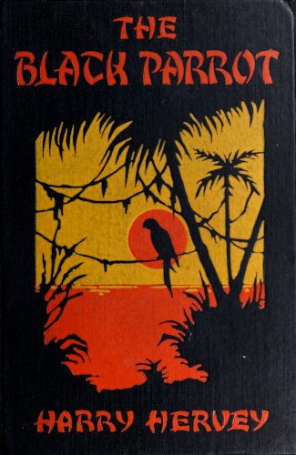

Title: The Black Parrot
A Tale of the Golden Chersonese
Author: Harry Hervey
Release date: December 8, 2025 [eBook #77428]
Language: English
Original publication: Toronto: F. D. Goodchild, 1923
Credits: Tim Lindell, Mary Meehan and the Online Distributed Proofreading Team at https://www.pgdp.net (This file was produced from images generously made available by The Internet Archive/Canadian Libraries)

A Tale of the Golden Chersonese
BY HARRY HERVEY
AUTHOR OF "CARAVANS BY NIGHT," ETC.
"... You perceive, then, it is by the grace of Romance
that man has been exalted above the other animals...."
James Branch Cabell
F. D. GOODCHILD
TORONTO
1923
Copyright, 1923, by
The Century Co.
Printed in U. S. A.
TO CHARLES BEDELL HERVEY
Do you remember? I told you of the Khmers, the ancient Brahmans, who, with elephants and war-chariots, with legions of mailed swordsmen and archers, crashed through Manipur and Arakan, to the Lake of Tonle Sap, and there built an empire; built the long cloisters, the tremendous towers and stairways that now mourn beside the drowned forests of Angkor. I said that were you to go there some night when a full moon hangs over the jungle, you would hear the tread of perished armies (fierce, arrogant warriors, drunken with power and conquest) and see the Tevadas come down from the walls and dance about Naga, the Seven-Headed Cobra. And you said, "Put it into a story!" Do you remember?
| I. | The Man from Guiana |
| II. | Episode |
| III. | The Blue Slendong |
| IV. | S. S. Cambodia |
| V. | Conquest |
| VI. | The Dream Chandler |
| VII. | Malay House |
| VIII. | Salazar |
| IX. | Barabbas Town |
He had come up from that necklace of islands that trails its emeralds over the Pacific, which is to say, he stepped out of Nowhere.
Perhaps he was a planter. Or a trader. Or a shell-hunter. Or an agent from one of those brazen ports where white men turn brown like bricks in a kiln. Certainly he was not a tourist.
This the proprietor of the Hotel Oost-Indie—one da Vargas, a Portuguese from Malacca—told himself as he sat in the stern-sheets of his launch alongside the newly arrived mail-packet and gazed at the man by the rail. The latter, his features shadowed by a topee, stood near the top of the ladder, a black bag in one hand and a bird-cage in the other. He wore a white silk suit, and the sunlight seemed to take refuge in it and give it a golden sheen. A blue slendong, such as Javanese women wear, was bound carelessly about his middle, its fringed ends rippling in the wind. Behind him, across the low, flat deck-house and through the web of rigging, the straights spread out like a purple map, contoured with rich gleams; the west was peach-red, its bloom reflected on the canvas.
A plaintive whistle, audible above the creaks and squelches, drifted down to Mr. da Vargas, and he focused upon the occupant of the bird-cage: a large white cockatoo.
A man who wore a slendong and carried a bird!
To Mr. da Vargas, it suggested the quixotic. A naturalist? Many of these fellows—a gregarious lot—came and went among the toy archipelagos strung between Singapore and the Coral Sea. At least, thought the Portuguese by way of justification, they never left accounts unpaid.
A signal from the white-clad figure cut short these reflections, and Mr. da Vargas brought his craft nearer the ladder; launches of other hotels hovered about.
"Oost-Indie?" asked the man perfunctorily, preparing to descend.
"Yes, mynheer," replied Mr. da Vargas, using the form of address current in Dutch possessions; if one kept a hotel in a Javanese port, why not contribute to the atmosphere? "Excellent cuisine," he added; "tarriff reasonable."
He of the slendong passed his bag to the Portuguese, then, cage in hand, stepped into the launch and seated himself in the stern-sheets. The cockatoo, frightened by the sudden violent pop-pop of the engine, raised its crest and shrieked. A magnificent creature: feathers deepening to coral on the wings and tail, crest jetting up to a golden tip.
"A beautiful bird, mynheer," observed Mr. da Vargas by way of opening conversation as the launch cleft the water quayward.
The other nodded indifferently and removed his helmet, thus offering the proprietor, who considered himself a keen judge of physiognomy, a better opportunity for study.
He was a person of inscrutable age, with skin brown as sandalwood and crinkled at the corners of the eyes. His hands, lithe, slender hands, moved incessantly, one moment fingering his lapel, the next, drumming on the gunwhale or tugging at his short, well trimmed beard; a beard that was reddish in one light and dark gold in another.
"Do you have many guests now?" he demanded abruptly, speaking with a perfect enunciation that suggested that English was not his native tongue.
His eyes, green as the shallows off Madoera, had an insolent expression. This, Mr. da Vargas perceived, was due to his right eyebrow, which slanted toward a scar that made a pale crescent on his temple.
The Portuguese took on a distressed air. "It is not the season yet," he answered.
The bearded one turned and for a moment gazed out toward the horizon, where the water melted imperceptibly into a belt of dusk. The mail-packet, gilded by the glow in the west, seemed to hang in the welded globe of sea and sky like a toy ship in a bottle.
Presently he spoke again.
"Are any of your recently arrived guests from Macassar?"
Was it an accent that Mr. da Vargas detected—in his pronunciation of Macassar? A foreigner? Russian? Spanish? French?
He wrinkled his forehead as though the question caused him thought. Something of an actor, this da Vargas, with his exaggerated eyebrows and mustache.
"Macassar?" he repeated; and drew from his pocket some of those black cheroots that seem rolled exclusively for men in the tropics. "Macassar? No—no, I think not. Were you expecting some one, a friend?"—proffering a smoke.
The stranger nodded; placed the cheroot in his coat pocket. Then, abstractedly, he thrust a finger between the bars of the cage and poked at the cockatoo. His indifference challenged the Portuguese to probe deeper behind the veil of obscurity which, from the very first, had surrounded him.
"You live in Macassar?" he persisted after a few seconds.
The man of the slendong smiled, an elusive, rather impudent expression, and shook his head.
"A filthy place——" thus Mr. da Vargas. "No decent hotels, no...." The sentence expired suddenly, like a gramophone that is shut off without warning. A shrug; then, with a sigh, he delivered himself over to silence and supineness.
Shortly before they reached the quay the man from the mail-packet came out of his abstraction to ask:
"Has there been a message left at your hotel for me?" As an afterthought he added, "My name is Garon."
Mr. da Vargas half shut one eye: a habit which he considered quite effective. Meanwhile, his brain repeated the name. Garon. French. An officer from up Saigon way. Or from Hué. Or Hai Fong. Or from one of those sweltering towns along the coast of Indo-China. He was so absorbed that for a moment he forgot the other's question.
"N-no," he replied slowly. "No, monsieur"—the "monsieur" rather pleased him—"there has been no message."
Presently the launch touched the quay, a great antenna feeling out into a wilderness of masts and spars, and he of the slendong sprang out with the bird-cage. The cockatoo, almost losing its balance, spread its crest and scolded. Its owner started toward a kossong but paused and turned back to Mr. da Vargas, who was still in the launch.
"When is there a boat to Singapore?"
"Singapore?"—one eye half closed. "Day after to-morrow. But if you wish to stay longer...."
"Thank you." And the bearded man got into the carriage, leaving the Portuguese to bring his bag.
A moment later when another launch came alongside the quay Mr. da Vargas recognized in it a Eurasian whom he had noticed by the rail of the mail-packet. Upon an impulse he hailed him.
"Did you see the gentleman I brought ashore?" he interrogated. "The one who wore the blue slendong? Do you know if he came aboard at Macassar?"
He did, the Eurasian replied. He himself had seen the gentleman walk out on the pier: and he was quite drunk.
At this information Mr. da Vargas half shut his eye again. Drunk. Undoubtedly, he concluded, the man of the blue slendong was an officer from French Indo-China. But what—as he signaled for his sado—was he doing in Surabaya? And with that bird!
Mr. da Vargas did not know, would never know; but had he known he would have been more interested in the man with the scarred wrists.
2
At that particular moment he who called himself Garon also was conjecturing—but upon a subject quite different. He had been conjecturing for many days. Many weeks. And now, as he rode toward the hotel, his brain seemed atrophied; hung, withered, in his skull.
He lighted the cheroot that da Vargas had given him, and the bitter, acrid tobacco (black leaves from Trichinopoli) burned his tongue. But he enjoyed it fiercely, for it stimulated him, like strong drink. At that thought he smiled—smiled insolently, as a man smiles at an antagonist. Drink. Flint on tinder. It ignited a spark. Fool. He had slipped at Macassar. Perhaps it was the town: the crooning surf, the white roadways unrolling in the dusk like paths to adventure; something lazy and loose and amorous about it....
"Name of a name!" he muttered, half aloud. "Cities and women are alike: angels or devils—positive or negative—no compromise. And seaports are bad."
A habit, that. And a good one, he assured himself. Ah, if he could be sure that he had talked only to himself! Confound that slip at Macassar——
"Too much introspection, my zig," he announced sharply, breaking in upon himself.
Whereupon he delivered his attention to the pattern of sounds and colors that wove about the carriage. Lamps were beginning to appear—hot moons in the already humid dusk—and the roadway was a torrid, dusty world; a world that swarmed with life. Perspiring white men in linens, helmeted soldiers, coolies with bent carrying-poles, and bronze Chinese, Arabs, and Javanese. On the right ran a canal, seeming crowded with boats as it reflected the many craft moored by its banks. This, he told himself, was not the picturesque confusion of the Straits Settlement or the towns of the China coast—towns whose names inflame the dreams of youth. There was a sense of order, of cleanliness and activity, that was not eastern.
"Tropical Netherlands," he soliloquized ironically, "well regulated and organized—even in their vices!"
The carriage rattled across a bridge and came to a street of Chinese houses—rows of dim bazaars and shops. Large signs hung over the doors, flamboyant with ideographs. And numbers. Great gilded numbers——
Numbers! They seemed to spring out and strike him. Numbers! To the devil with them! But to the devil they would not go; they persisted and developed a series of negatives, pictures that unreeled like a film. Cayenne, lost in forests of silence ... Cayenne, with its Caribs and tropic-tired surveillants ... white-helmeted warders, libérés and déportés in drab burlap ... men who were numbered. Five months of it! Five months in that brazen hush, that awful hush: superheated days, nights that dropped like black flannel. And no one knew. Not a soul. Alone he had worked. Alone he had waited. Alone he had endured the strain. Alone—until his release from Ile Diable, until the night at the house of Finot, the libéré. A muffled lantern; whispers, a ring of obscure faces; then a file of silhouettes stealing back into town. Followed other nights at the house of Finot, the libéré; and a last night when the silhouettes did not steal back into town. Black forests; torment of heat and hunger. How they suffered! these men who were numbered. At length, a river, a raft of mocomoco. Came then a chain of breathless days, of bitter days. Smell of swamps and rotting jungle; odors that tainted. They fought among themselves, these men who were numbered. Finally, the raft glided from river-gloom into the glare of the sea; glided to the side of the waiting ship....
He was put ashore on Thursday Island, one of those sun-scorched outposts where men, believing in destiny, sit on the beach to wait for it. Without regret he watched the ship melt into the horizon. He was alone—yet he felt that a shadow clung to his heels. It haunted him. And there were three days before the next boat left! Three days on Thursday Island, with its molten sky, its monotonous dazzle of sand and sea. He took his cue from a pallid youngster sprawled on a fishnet, in the shadow of a warehouse. Suddenly, as one who sees a revelation, he perceived the way. For the next three days he drank just enough to sink his thoughts in a golden haze and keep his tongue still. Then he departed, without sorrow, from that port of derelicts.
Macassar. To his surprise the shadowy tracker did not materialize. But he understood. The time was not ripe. Perhaps the realization made him careless. Ensued that indefinite, foggy period: yellow faces and the smell of bilge-water. He returned to complete cognizance on the ship.
And now Surabaya. (This as he gazed at the numbers.) So far he had won—alone. He who had always ridden alone! At this thought he clamped his teeth tighter on the cheroot; drew a deep breath. Ruthless? Yes, he had been. Trampling men as if they were husks. But never uselessly, always with a purpose. Hard? Perhaps. For he never reckoned the cost. A cold man with but one passion, achievement. An adventurer, riding alone toward a star. That was it. Some day he would ride out beyond life, still following his star. And then——
"Thousand thunders!" he exclaimed, interrupting his own thoughts. "Sentimentalism! It is this climate—nothing but coffee thrives!"
He smiled derisively, which is to say bitterly; passed one hand over his forehead. For a moment he looked very young, very tired, like a boy aroused from a dream. Something cold uncoiled in his heart and struck him, an emotion cruel as a scalpel. Sentiment! It had withered. Only the roots remained, dead things. Pluck them out—ride on—alone—trampling men—toward the star—a ruthless adventurer——
A soft note, uttered by the cockatoo, broke into his introspection. His eyes swerved to the cage. After a few seconds he chuckled, without humor. Even this creature fitted into his scheme, his callous sacrifice of man for motive. Indeed, it had been acquired for a purpose and when that was fulfilled it would pass as his every friendship had done, this feathery companion of his solitude.
Thus he was musing when he came at length to the hotel. Sunset had furled its geranium petals, and the long white main building, set back in an inclosure in the midst of trees and gardens, gleamed coolly in the darkness. A few stars had broken out like white heat on the torrid sky.
He paid the driver; moved up the steps, swinging the bird-cage. As he crossed the veranda he noticed several linen-clad figures sitting around a table, and the sudden flare of a match, as one of the men lighted a cheroot, reclaimed from the dark a pair of lean wrists—wrists that were ringed with scars.
3
The sudden black night of the tropics settled. A black, limitless sea was the firmament, a black reef the somber horizon where the tide of stars surged up and broke. A breeze blew in from the straits, tepid and briny; it wandered across the city, acquiring the scent of warm soil and over-ripe fruit; and drifted lazily into the gardens of the Oost-Indie, where trees and men alike shivered as it whispered of fever and worse.
Dinner being over, the usual groups collected on the veranda. (You will find them at any caravansary along the equator soon after nightfall, men who probably have nothing in common except a desire to talk.) Cigar-ends smoldered. Ice clinked as "boys" moved back and forth with trays; this augmented by the drone of voices and mosquitos.
The man of the blue slendong, emerging from the lighted interior, glanced right and left at the gleaming cheroots and likened them whimsically to the cones of distant volcanoes. After a pause he strolled toward a table at the end of the veranda, quite aware that a man had followed him from the billiard-room. He sat down, not even glancing at the white figure that passed. The latter paused a few feet beyond, then turned.
"May I share your table?"—a genial British voice.
He who called himself Garon nodded; made a gesture. The other seated himself and tapped the bell for a "boy."
"Won't you join me?" he inquired. "A man has to keep his liver afloat somehow down here, and the Oost-Indie has just the proper mixture—a pale-green, frosty drink, with a slice of orange floating in it, for all the world like a swollen goldfish." He laughed, frankly pleased with his own simile. "That reminds me of those fighting-fish in Siam. Ever see the little beggars?"
"Yes"; thus Garon, smiling to himself with grim satisfaction.
A "boy" approached silently and took their order.
"You're a stranger in Surabaya, aren't you?" came from the man whose face formed a pale oval above the dead white of his linens.
Garon murmured affirmatively and drew out cigarettes, passing them, not without a purpose. The man took one and lighted it. A flickering glow upon long, narrow features; a glimpse of scars on the wrists.
"I noticed you when you arrived," went on the voice from the pale oval; an oval that advanced from the gloom and receded as the man drew on his cigarette. "Does your cockatoo perform?"
"I do not train birds," Garon answered. "I collect them. I bought that one on Thursday Island."
"Collect them?—to stuff and exhibit in museums?"
The Frenchman was still smiling to himself. "I buy and sell them."
"I see. A broker of birds. Novel business."
Garon laughed; no humor in it.
"It is not a business; it is a precaution. Wherever I go I carry some sort of bird; then, if there rises any emergency, I sell it."
"But don't you grow attached to them?"
Attached! Garon almost laughed again. He said, "Sentiment does not enter into business."
"Birds, eh?" mused the other. He chuckled. "Thursday Island.... Hm-m.... Ghastly place. You didn't by any chance run across the Black Parrot down there, did you?"
Garon smiled, an expression unobserved in the darkness, and restlessly fingered the lapel of his coat.
"A black parrot?"—simulating thoughtfulness. "Is there such a bird? I know of the great black cockatoo which naturalists call——"
"Surely," interrupted the other, "surely you've heard of the Black Parrot!"
"I confess ignorance. You see," he lied, "I have just come up from the New Cumberlands. I have been buried for ... for five months."
The "boy" came then with the drinks. The rattle of ice sounded cool, for the breeze had gone. In the breathless hush the voices from the several groups along the veranda melted into a languorous murmur. Even the trees sighed faintly, as though oppressed by the heat and the stillness.
After a moment the man of the scarred wrists resumed.
"Le Perroquet Noir; that's what he's called at Cayenne. The Black Parrot. Sounds romantic, doesn't it? Fancy anything being romantic in this day!"
"But who is he?" pressed Garon. "Why is he called that?"
A chuckle. "May as well ask who the devil is." A pause, then: "Perhaps he is the devil sojourning among mortals for a spell. Recruiting. If so, he began near home; Guiana's just across from Hades, you know. But, devil or not, he's raising particular hell in the penal colony. The officials believe he's an escaped relégué from Ile Diable, a fellow named Letourneau, a garroter. They think he's helping others....
"But you asked why he's called the Black Parrot, didn't you? Well, I've heard one version. A French officer from St.-Laurent told me the story; used to belong to the Corps Militaire des Surveillants. There was a murderer, a swarthy brute, son of an Annamite woman and a merchant of Hai Fong, who was sent to Guiana. The prisoners dubbed him the Black Parrot. Don't know why; perhaps he looked like one. Soon after he reached the colony he killed a chantier with a machete. Horrible affair. It didn't take the Tribunal Maritime Special long to decide to introduce him to Madame Guillotine. Picture the scene...."
He gestured, and sparks fell from his cheroot like meteors from a comet. Garon was staring at his glass.
"Picture the scene," the former repeated. "The colorless dawn.... Why are executions usually at daybreak, can you tell me?... Le Perroquet, shut in his cell, hears the dread summons, 'C'est pour aujourd'hui,' and is initiated into what they call la toilette de la mort. Horrible, these preparations for death. Then he is marched into the courtyard of the condemned. I say, picture the scene: the throng of prisoners, there by compulsion, the guards and the big, dark brute on the scaffold—a half-caste, you remember—with arms bound and collar cut away. Perhaps a priest beside him; Monsieur de l'Ile Diable, the headsman, waiting. Not a chance of escape. How do you suppose he felt, this callous creature, twice a murderer? Do you imagine he was afraid? Sebillot—he's the officer who told me the story and who saw the execution—said he smiled, smiled as if he knew something grimly amusing, smiled at Madame Guillotine. You can see he was a—a hard customer, as the Americans put it. Just before tying him under the blade he was allowed to speak; that's customary, you know. 'You may cut off my head,' he said or words to that effect, 'but I will come back and repay.' A foolish threat, vain.... So they guillotined him, this brute. Sebillot—he was standing close by—swears that the head of Le Perroquet Noir smiled as it dropped into the basket. Ridiculous, these illusions a man has at times.
"A week or two later, Letourneau, the garroter, escaped. Following that were a number of other escapes—or evasions, as they say in Guiana. Then, one day, the very man who had guillotined the Parrot was drowned. No one saw it or knew how it happened. His body was found in the river; not a mark on it. An accident, the colonial governor pronounced it. Poetic justice, you say? The prisoners said another thing, that it was the vengeance of the Black Parrot. Fantastic, isn't it?...
"But men continued to escape. And after each disappearance the surveillant principal received a card, most mysteriously of course, bearing an inscription something like this: 'Le Perroquet Noir—viens me chercher.'... It goes like a shilling-shocker, doesn't it?... The prison officials are quite mystified. How do these men get away, through the jungle?—or do they put to sea and land somewhere further along the coast? In either event, there's the danger of being captured by bush negroes; those black fellows are anything but tame, I'm told, and the surveillants don't encourage gentle tactics. Where do you suppose these convicts go after they've escaped? I've heard that at Paramaribo there's a society to help escaped déportés. I've heard other things, too; for instance, this yarn I picked up in Samarang."
He paused; sipped his liquor; resumed.
"Some sailors had collected in a bar along the waterfront. You know how they talk; a bit of the sewer in their words. Conversation turned to the Black Parrot. One of the chaps said he knew of an amazing rogue such as one reads of in novels, who hired men to steal priceless art treasures, ornaments and jewels with a history, and he in turn sold them to collectors and rich fools for fabulous sums. He was a sort of gentleman buccaneer; his life was like a romance. And, the sailor chap went on to say, perhaps the Black Parrot was this rogue and he had struck upon the idea of collecting a flock—adopting it, as it were, from the jailbirds of Cayenne. An excellent way to gather a faithful band, so the sailor chap maintained. He claimed he knew a fellow, a shell-hunter, who indulged in questionable business, so this fellow got his crew by picking up beach-combers and setting them on their feet."
He of the scarred wrists laughed—a soft, genial laugh. Garon merely smiled and continued to tug at his lapel.
"But sailors," observed the stranger, "have the reputation of being more interesting than veracious. This buccaneer de luxe may have been a fabrication; fact is, I fancy he had his origin in a bottle. At any rate, it's a good tale."
He picked up his glass. Garon, in the act of lighting his burnt-out cheroot, glimpsed a smile on the long, narrow face. Even after the match expired and they were in darkness, two pale ghosts at the very frontier of the stars, he imagined he could still see the smile. Rather mocking. Rather haunting.
"You, being a broker of birds," suggested the man with the scarred wrists, humorously, "should be interested in Monsieur the Parrot. If you catch him you'll profit a pretty penny. Something of a task, eh? The question is: Who is he? Letourneau, the garroter? Or that amazing rogue I heard of in Samarang? Or the ghost of Le Perroquet Noir? As the Black Parrot himself would tell you, viens me chercher!"
Garon regarded the other grimly; lifted his glass.
"I go on the next boat to Singapore," he announced deliberately. "And there"—a shrug—"well, it is not likely I shall find the Parrot there.... To your hospitality!"
Later that night Garon went into the city. Mr. da Vargas, who saw him leave the hotel, wondered where his guest, that quixotic person who affected a blue slendong and carried a cockatoo, was going at that hour. Not being clairvoyant, he could not know that the Frenchman was bound for the beer-hall of Oei Moo Lim. But the man with the scarred wrists knew. He made it a point to know.
4
Morning and a burnished sun.
Garon, rising late, looked out into purgatorial glare and was not cheered. A glance into the mirror showed him a pallor beneath his tanned skin and dark half-moons under his eyes. His depression increased when he examined his money-belt.
"Ah, God!" he muttered, then, shrugging, soliloquized, "A key to every lock, an answer to every riddle."
Then sudden doubt shook him. Suppose when he reached Singapore the expected—name of a dog! more than expected, the anticipated—suppose the anticipated did not happen. What then? Failure? Impossible. He would succeed. Or be murdered. With his knowledge he would not be permitted to live unless he passed the test. And what a test! he reflected. He had, within the space of a few weeks, buried his pride, his self-respect (which is the last virtue a man will sell) and become—yes, a beach-comber. And all because ... because he had locked his dreams in a dungeon with his past and consecrated himself to a purpose. He could come back, he who had ever been lord of his body; he would. But the waiting! That was the rending period.
He took the cockatoo with him when he went below, leaving it on the veranda while he breakfasted. Afterward he made certain inquiries of Mr. da Vargas; inquiries that gained him little.
"So he calls himself that, eh?" he mused, taking a seat on the veranda. "But names! Pah! Rogues have a different one in every port!"
A few minutes later he summoned a carriage and with the inevitable bird was driven to a steamship office near Aloon-Aloon. There he secured his passage. This done, he had but a few coins left, not even cab-fare. So he set out on foot.
Overhead, a copperish sun glowed and smoldered; underfoot, dust rose in gauzy waves. In the palpable haze thus produced, men and vehicles moved back and forth like figures behind a transparent drop, remote, ineffectual. Garon loomed tall and white in the glare, an individual marked for observation as he sifted through the traffic.
His walk led him across two bridges and to a long street of shifting shadow and color, an artery that seemed to come from the very heart of China itself. Yellow faces in the doorways and windows of gaudy houses, yellow faces beneath awnings, beneath crimson and gold signs, beneath lacquered, ideographed scrolls, beneath balconies and quaint projections. Shops where silks from Fu-chau and Chi-fu were sold; shops that smelled of perfumes and aromatic gums from Africa, and odors less enticing; shops where gods from Burma and Siam gazed contemptuously at gods of European make; shops that boasted gold-dust from the Celebes, pearls from Ceylon, and precious stones from Cambay. And one shop where gay-plumed birds preened their feathers in ill smelling cages.
To the latter Garon took himself after inquiring the way of a blue-helmeted policeman. A warm, musty smell, reek of birds and animals, breathed into his face as he entered. Dusk within, the corners deepening to sable. From these dark recesses came soft cooing sounds, twitters and shrill squawks. Through a doorway in the rear sunlight poured, like water released from a flood-gate, sluicing a raised portion of the floor where a Chinaman sat cross-legged on a cushion. At Garon's entrance he rose and came forward. He glanced at the cockatoo, nodded to its owner, and waited.
The Frenchman, his vision becoming regulated to the artificial dusk, saw a sleek, sable cat caged in one corner; heard a faint growl. Small feathered creatures blinked at him: blue parrots, green parrots, crimson parrots, and gray parrots. But (this to himself whimsically) not a black parrot.
"My no wanchee buy," he announced in Pidgin, the common tongue of the archipelago. "My wanchee sell."
The Chinaman blinked, like one of his birds, informing him gravely:
"I speak English." And he added: "My name is Soy Lim; you have heard of me? For many years I had a shop in Rochore Road, Singapore."
A gleam of humor animated Garon's eyes.
"Very well, Soy Lim. I wish to sell this bird"—indicating the cockatoo. "It belongs to the species known as Cacatua leadbeteri; very rare. I should not part with it except ... well, I need money. Too, I am interested in other—er—birds now."
The eyes of Oriental and white man met. Soy Lim blinked again; took the bird-cage; appraised its occupant. The cockatoo uttered a plaintive whistle; to Garon, thrice plaintive. He felt a barb of regret; a barb that he plucked out quickly.
"What will you give me for him?" he asked.
The Chinaman appeared to be considering for a moment; then he named a price.
"Add ten guilders and you may have him"; thus Garon.
"I would not buy the bird," Soy Lim said, "if it were not that a doctor in Goebeng wishes a cockatoo like this one. I will add two guilders."
"Ten," the Frenchman insisted.
"Two."
"Ten."
"Three."
"I said ten."
The astute yellow man shook his head. "Four. No more."
Garon started toward the door.
"Five," Soy Lim called after him.
He hesitated. "Very well," he agreed. "Five guilders added to the original offer."
The Chinaman melted into a dark corner and returned with the money. Garon counted it, then thrust it into his pocket, and, with a nod, departed. A soft, plaintive whistle followed him into the street: a reproach and a farewell.
A moment after he left the shop Soy Lim resumed his seat, the bird-cage beside him. In his deliberate manner he slipped on a pair of loose gloves, opened the cage door, and clutched at the cockatoo. A shriek; the flutter of coral-tipped wings. But the gloved hand was implacable. Soy Lim drew out the frightened creature and held it to his breast, mouthing soft words. Slowly the bird quieted. Then the Chinaman pulled off one glove, using his teeth, groped under the feathers, and, like a magician conjuring an object from the air, produced a tiny cylinder of paper.
Night and Singapore. Steamy, sweltering darkness. A stealthy wind rustling mangoes and aloes, swaying banana and cocoa fronds. Song of rippling water beneath the quays. Patter of bare feet, crunch of wheels, in bazaar lanes and native streets. Clink of ice, fragments of music, in hotels and clubs. Lazy nocturnes.
A multitude of stars had swarmed out and dropped low over the island. So low that their reflections trembled in the dark harbor. So low that Canopus seemed pinned to a mast and the Southern Cross caught in a net of rigging. So low that the woman standing in semi-darkness, on the upper veranda of a hotel facing the Roads, felt as though she could reach out and touch them.
A light from the long window behind made a bright patch upon the gallery. But she stood outside the reflection, a shadow among other shadows. Her eyes were raised above the roadway—even above the contours of shadow that melted across an expanse of park—and brooded upon the sea. She was intent, absorbed, as though deciphering a code traced in the harbor. The focus of her gaze was a pair of green eyes that returned her stare unwaveringly. In reality they were starboard lamps on two vessels anchored not far apart, but to her they were Medusa's eyes.
Perhaps she sighed; it may have been a vagrant breeze in the foliage below. At a swift movement her sleeves, long, flowing sleeves, fell back from white skin. She lifted her arms above her, held them rigid, a sharp surge of power sweeping through her. Thus she stood for a moment, motionless, scarcely breathing, the glimmer of her bare skin like that of ivory. It was a gesture of dominion, intolerant and commanding; and she might have been a valkyr exulting in her immutable security. Then she dropped her arms, soundlessly, and stepped backward into the patch of light. Instantly a golden dragon on her kimono kindled. It seemed animated, coiled about the heavy black silk and breathed fire at the woman's head; a glow that melted into the fluid copper of her hair. Quickly, with a luxurious swish of silk, she moved into the room; drew the blinds. At this exertion her hair, loosely coiled, came unbound and rippled about her face and shoulders in a burnished cowl.
Medusa's eyes. Her mind repeated that, held a picture of the green lights. Six years ago, soon after she had reached the age of silk frocks and feather fans, she had fallen under their spell. She had seen them many times since, these serpent's eyes. In the harbor of New York. The Bay of Naples. San Francisco. Yokohama. Wherever ships lay at moorings in the night.
She broke into a laugh—a sound rich and faintly husky. A glance at the clock on the dressing-table banished from her mind all but thought of the hour. Fifteen minutes to eight; and she was to dine at eight.
She seated herself before the mirror, studying her replica. A face fine and regal as that on a coin, wistful enough to be a girl's, mature enough to be a woman's. Pale gold was the throat that rose in a slender column from the black silk, pale gold the arms. Her lips, in contrast with her flawless olive pallor, were vivid crimson, remarkable in that their color was genuine.
The dinner-gown of moire dorée, she decided. It would look well with the captain's uniform. (Captain Remy Barthélemy, French Annamite Army, ran through her mind swift as flame.) She rose with easy, languid grace; moved to a closet; opened the door. In reaching for her gown she unconsciously let the kimono slip down about her arms, revealing superb shoulders....
As she dressed she hummed softly. "Addio a Napoli"—a somber strain. It carried her, in fancy, to a city that dreamed above a blue porcelain bay; the prelude to her début, that most breathless of seasons, from which she had emerged polished and super-poised—and untouched. She, Lhassa Camber, the vivid glacier, hiding beneath indifference the smoldering purpose that later was to lead her half across the world.... The tune ended in a sigh.
When she was dressed she surveyed herself in the mirror. Her only ornament was a large comb thrust in her hair. She had used no rouge, not because of scruples but because she was aware of the effect of her red lips against the colorless oval of her face. Satisfied, she went below.
2
An officer seated in the lounge sprang up at her entrance. On his brilliant uniform were medals and ribbons that told of service on far frontiers. Black hair, glossy as lacquer, was brushed back from features almost Oriental in their impassible regularity. Wind and glare had bitten into his granular skin, and but for his eyes and mouth, both rather humorous, his appearance would have been that of a man calloused not only physically but in character as well. A short waxed mustache added a fastidious touch.
"I am late," she apologized.
He inclined forward from narrow hips. "Yes? I was not aware of it," he lied.
She gazed at him analytically. He was what one might expect a légionnaire to be: a man whose emotions were as well disciplined as his muscles. "Knew his father," the consul had confided before introducing him. "Good family. I can vouch for that. You'll find him interesting company on the voyage." She had found him interesting already, interesting by virtue of the fact that he had seen much of the world and absorbed from it a certain genial iniquity.
"Men always say the expected," she observed as they moved toward the veranda, "and women do it. If they did otherwise they'd be original—and that's dangerous."
He smiled. "Do all women do the expected?"
The implication did not escape her. However, when they were seated in one end of the café, she commanded:
"Be specific."
The Frenchman made a gesture. "A young woman traveling out here in the colonies is expected to have a chaperon, usually some aristocratic ancient who takes her duties too——"
"Am I being lectured?" she interposed. "Yesterday when the consul said you were going to Bangkok on the same boat as I, I felt that he wanted to suggest that you keep an eye on me. For all I know, he may have after I left. But please don't inform me that I'm being improper; I know it."
She spoke with the splendid independence of a woman accustomed to attention, and her manner challenged admiration into Barthélemy's face.
"Ice and fire!" he thought. But he said, "I am merely pointing out that you are courageous—and original."
"Does that mean—dangerous?"—languidly.
He gazed into the still, dark mystery of her eyes, eyes that could one moment kindle with a poignant intensity of feeling and the next freeze cold as northern forests, and realized that the secret of her charm was an enigmatical streak in her temperament, as powerful as it was inscrutable. He likened it to Gioconda's smile in that it was too subtle to be explained.
"It means...." He shrugged. "How can I say it? I see two distinct pictures in your eyes. Generally, I see snow—ice—polar nights!" He smiled. "Less frequently, I see jungles—undiscovered rivers—Asia, yes, Asia."
"Jungles," she repeated with a speculative look. "Perhaps you see anticipation. I intend to explore jungles, undiscovered rivers. Impossible, you think? Impossible! An alluring word. Somehow I feel that I belong to the unknown places. My mother must have felt it, too, or why did she call me Lhassa?"
"You are not serious."
"About the jungles? Why not?"
"You are a woman; and what would be your purpose?"
"Purpose!" she echoed scornfully. The word had stung her. "Purpose! Does a woman have any purpose other than to make herself attractive? Purpose! Always I've wanted some object other than simply to live; I've never had one and I probably never shall. When I was a girl my purpose, according to my governess, was to graduate and make a successful début. After that my purpose was to marry. And then....
"Monsieur, have you ever dreamed over an atlas?" she demanded abruptly. Without waiting for a reply she went on. "I remember the first time I saw a map of the world. There was something thrilling about the lines that marked tides and winds, the tiny dots that in reality were great cities, and the patches of yellow that were deserts. South America was mysterious. Africa was dark and fearsome, like my room after the light had been turned out. But there was one continent——" A pause; when she resumed her voice had a low, impassioned timbre. "When I looked at it I felt as a butterfly must feel when it's caught in a net."
She smiled; paused again as a "boy" approached.
"Once," she continued when their order had been given, "I took an atlas to my grandfather and turned to Asia.... You see, there were only we two; I never knew my parents.... I told him I was going there some day; and he laughed. He always laughed when I spoke of going to Asia—until I grew older and he realized my desire wasn't a childish fancy. 'It isn't the place for a woman,' he would say; I can hear him now. 'If you go you'll come back with malaria and a citron complexion.' Before I finished boarding-school he sent me to Europe with a companion. I wanted to go eastward. We had a scene, and it almost made him ill. So I surrendered.
"But I kept on dreaming over the map of the world. After I returned from Italy, we spent our summers in the West, and often, in the late afternoon, I'd go down to the waterfront and watch the ships steal out in the dusk, headed for strange ports; ports whose names are written in italics in the history of romance. Bangkok, Zamboanga, Karachi; towns with barbaric names like those. One evening when I returned I found grandfather sitting in the dark with a map, a map of Asia, crumpled at his feet. As soon as I entered the room I knew I was alone. That was two years ago. I felt, and still feel, that if he had spoken before the end he would have exacted a promise.... It was a queer obsession, his. But probably no stranger than mine. I sensed Asia tugging, I——To illustrate: a friend in the states had a macaw, and she took it out to her country-place and chained it to a perch in a garden. Each day it would hear the cries of wild birds in the woods, and it would answer with little restless screeches and bite at its chain. One evening my friend found the macaw gone."
She ended with a shrug. Barthélemy, smiling thoughtfully, drew out cigarettes; passed them. He lighted hers, then his own, and flicked the match away. The smoke coiled about her head, leaving her face unobscured to glow in the foggy blue, as vivid, he thought, as a flame burning through gauze.
"A macaw," he mused, still smiling. "Brilliant feathers."
"A wild creature, never really tamed," she added. "A gaudy, vain bird, but free, free as the wind.... I obeyed the impulse to break away from the old sphere with its worn-out gods and explore other worlds. So I came, alone except for Manuel, a Filipino who was my grandfather's valet; and I brought him merely for convenience, to attend to baggage and other such details. First, Bangkok; then, Zamboanga and Karachi; all those cities with gorgeous names; alone, free as the macaw that broke its chain."
"And how long in Bangkok?" he inquired. "Until you feel the impulse to fly?"
"Yes. Siam! Gold-leaf Buddhas and sleepy temples. I am going there ostensibly to visit a man whom I've never seen and who doesn't even know I'm coming. Perhaps you know of him—Dr. Garth? I believe he was the king's physician for a while."
Barthélemy shook his head. "I am not well acquainted in Bangkok; the fact is, I am merely going there to pay a short visit, two days perhaps, to an old comrade attached to the consulate. But tell me more about this doctor."
"He and grandfather went to school together in Virginia. I didn't write that I was coming because I like to appear unexpectedly"—with an indolent smile. "Yes, I have a dramatic streak. But don't misunderstand: I sha'n't intrude; I shall go to a hotel when I arrive. The doctor is simply an explanation for my presence in Siam, a compromise, if you wish, with the rule that says a woman must not travel alone in Asiatic countries, at least without a conventional reason. I....
"Notice that man," she enjoined abruptly, indicating a figure that had risen from a near-by table. "Isn't he extraordinary-looking?"
The object of her remark was a man with a short-cropped, gold-brown beard. He wore a white silk suit, and a blue sash was bound about his waist, its fringed ends swinging flippantly as he strode toward the door.
"Sacred name!" exclaimed Barthélemy, his gaze following the white-clad form.
"Rather striking, isn't he?"
"Striking!" He chuckled. "Name of God! What a resemblance!"
"To whom?"—curious.
"For a moment I thought I had seen a ghost. Just his profile...." Another chuckle. "The man I know is quite a character, a handsome rogue, with the most unusual hands——"
"I didn't see his hands. What was that around his waist?"
"A slendong; similar to a sarong but narrower." He glanced toward the doorway through which the man had gone; smiled reminiscently. "No, it could not have been he—not unless the devil has turned a grim trick."
Later that night Lhassa Camber, lying in darkness, half asleep, remembered the man whose singular appearance had attracted her in the café. She had once seen a cinema where a horseman rode toward the camera and apparently over the screen; and as she drowsily recalled the wearer of the slendong, he, like the rider in the cinema, seemed to advance, almost ruthlessly, and stride over her, vanishing into a fissure of memory.
Six days later, at dawn, a vessel of the Straits Steamship Company crossed the bar at the mouth of the Menam.
Lhassa Camber, having purposely risen early to see the temple at Paknam, stood by the rail and gazed up-stream. A belated moon, visible above the bow, was retiring into haze; and, near the bank, a sampan glided toward a dome that swelled out of the mist, its pinnacle burning against a cobalt sky. To her it was a scene immemorially old: the moon, the spired temple, and the brown man in the canoe. It charged her fancy with visions of the dead glory of Ayuthia and Angkor; of the gods who ruled them amid incense and silk and sandalwood, and who fell, leaving the husks of their empire to be buried in a living tomb of jungle. She had read histories and legends of the ancient kingdoms of the Golden Chersonese; of Payah Lak who brought the Emerald Buddha from Laos; of the Khmers and the Thai; of the conquest of Kiampa, and of Santhomea who bewitched the king of Angkor; and these events aroused a thrilling consciousness of her relationship to them through some bond of imagination. Now that she was nearing the actual locations she felt suppressed excitement and dread, dread of disillusion.
Soon she was joined by Captain Barthélemy, who had been her constant companion during the voyage from Singapore. But she was aware of his presence and conversation only in a hazy manner. She did not emerge from this detached sphere until, the river passage completed, a curve ahead brought Bangkok into view.
Here the Menam widened as though to accommodate the many craft that rocked gently on its yellow surface; the sampans, junks, and lighters, the attap-thatched canoes, the river-boats and few freighters from other ports. A swift tide ran beneath floating houses and wharves, past warehouses and mills, and skirted a wilderness of many-colored tiled roofs and golden obelisks. Ramshackle huts, built on poles, crowded down to the numerous klongs (canals viscid with stagnant water) that contributed substantially to the Oriental atmosphere.... That was Bangkok as it first appeared to her: a brilliant polychrome.
With a thunderous clamor anchor-chains rattled down. Below, in the steerage, sweaty beings moved back and forth in a confusion of yellow and brown faces, of glistening arms and legs. Shrill fragments in tongues as old as Asia floated up to the woman and the officer by the rail. Several launches were sputtering out from the nearest dock.
"When I look at all this," she told him, with a gesture, "I feel a flicker of recognition—just as though the eye of a camera had clicked shut and left a suggestion of familiarity." And she added, smiling, "Don't be obvious and say 'reincarnation.'"
He returned her smile. "It is easily explained: this is like a hundred other Asiatic ports—the same dirty river and the same palms and gold-leaf to cover its vices."
Immediately they were put ashore Barthélemy summoned a motor-car. Followed a ride through blazing sunlight and dust. The hotel was by the river, a two-storied structure in a grove of acacia and almond trees, facing rice-mills across the stream. The officer remained until Manuel, a small, immobile Filipino, arrived with the baggage.
"Of course I shall see you again," he said, preparing to leave. "To-morrow? I should like to show you the palace and the wats. May I call for you in the morning?"
"Suppose I let you know after I've seen Dr. Garth?"
"I will call at ten unless I hear from you before then. I am staying with my friend, Monsieur Achille Bergaigne, in Klong Pong Road. Au revoir, mademoiselle."
A few minutes later she followed a "boy" through a court and up a stairway to her apartment. The rooms—a bedroom, living-room, and copper-screened veranda—faced the Menam, and the languorous odor of almond-trees, tainted by a breath from the river, crept into the interior dusk.
After lunch, served by Mongolian "boys" in a hall cooled by electric fans, she inquired about Dr. Garth.
Oh, Dr. Garth! Thus the proprietor. The madame was a friend of the doctor? An old resident, Dr. Garth; and a remarkable man. Had she seen his collection of Buddhas? Oh, this was her first visit to Bangkok! A wonderful collection. The doctor had a villa, quite a pretentious place, on the outskirts of town....
She immediately despatched a note by Manuel and retired to her room to wait for a reply.
The reply came within a remarkably short time, and, sitting in a deep ratan chair, in her dragon kimono, she read it. A typewritten note.
He was delighted that the granddaughter of one of his dearest friends was in Bangkok, but regretted he had not known she was coming. Why had not she written? She must be his guest while in the city; he was sending his "boys" for her luggage. And would she pardon his seeming rudeness in not calling for her personally? He had not been very active of late and rarely left the grounds. But his carriage would be at the hotel at five-thirty. The signature was an almost illegible scrawl that trailed down to the very corner of the note-paper.
She reflected that it was strange he had used a typewriter; reflected also that it would be the obvious thing to pretend to refuse, knowing from the very start that she intended ultimately to accept. She would be ready at five-thirty—no, at six.
2
Dusk was hovering in the east when she descended and found Dr. Garth's victoria waiting in charge of a turbaned Kling. She was driven across the city, through a yellow and brown multitude that moved ankle-deep in dust, and toward the shining obelisk of a wat. The approaching night introduced a purple tone into the scene, an undernote that subdued the bright panungs and sarongs worn by the natives. The vista of shops, vehicles, and quaint figures stretching to the argent pinnacle of the temple gratified a passionate hunger for color in her. The poignant blues and purples, the dun shadows and contrasting flares of orange light, formed a vivid brocade that matched a pattern within herself, a blending of luxurious sensations brought into being by the visible hues.
She was of a nature so sensitive to color that primitive pigments, raw, throbbing vermilion, brilliant peacock blue, or imperial mauve, swept her into exalted regions. To her, places, even individuals, resolved into distinct colors, were parts of a great spectrum; and she, like a prism, caught their tone and either glowed or refused to refract. But so well disciplined were her emotions that she appeared eternally remote. Those who glanced at her now, so flawlessly white from suède shoes to leghorn hat, saw only a half-indifferent, half-tolerant expression: a woman as cold as she was palely beautiful.
Dr. Garth's house, or villa as the proprietor had called it, lay beyond the congested quarters, near a canal smothered with lotus and water-hyacinth. It was a rambling house, almost hidden by banians, tamarinds, and betel-palms; and the approach, a road where white dust arose under the horses' feet, ran between hedges of bamboo.
A ghostly form materialized on the veranda as the carriage came to a halt. It was a house-boy who took her hand-bag and slunk soundlessly into the hall ahead of her.
"The doctor is in his study," he announced suddenly, in liquid tones. He was young, barely twenty she judged, with ivory yellow skin and eyes that were slightly oblique. A Eurasian she decided. "Will you go to your room first—Miss Camber?"
He pronounced her name as though he considered his knowing it an accomplishment. His every movement was so noiseless, his manner so secretive, that she expected to see him vanish before her eyes, like a shade instead of a person of substance.
"I ... no, I think I'll speak to the doctor first."
She followed the "boy" into a large, dusky room. The shutters were closed, but a skylight arrangement diffused a twilight upon linen-covered furniture. This half-tone included in its somber glow an oil painting, the portrait of a woman who looked down wistfully from her frame, even sadly Lhassa thought, as if each shrouded chair was the ghost of a dream.
Ratan portières parted with a harsh rattle, and the Eurasian stepped aside for her to pass.
A tall, gaunt figure stood in the center of the adjoining room, near a shaded lamp and under a lazily flapping punka. A great cuirass of a beard, dazzlingly white, swept down from a face brown as teak-wood. The hands that hung at his sides were heavily veined, almost gnarled, and so still they might have been wrought of burnished metal. Blue eyes were deeply inset in the wrinkled face; a lusterless, faded blue that gave Lhassa the impression they were looking far beyond her, into limitless distance. She had a queer desire to know what they saw.
At her advent he stirred: his hands became animated, and the enlarged veins flexed, like the roots of some tree that had suddenly come to life.
"I am sorry I was unable to call for you"—his voice rumbling from a great girth of chest—"but, as I said in my note, I rarely leave the grounds—Lhassa. I will call you that, for I'm much older than your grandfather would have been."
"Of course you must," she assured him.
She held out her hand; his groped beyond it. With a start she understood the lusterless eyes, and quickly caught his hand. His grip was by no means feeble. Power seemed to burn in his dark frame, to flow out in waves of heat and electrify the room. And what a room! For the first time she absorbed its amazing detail.
The lamp cast a round mellow pool on the floor. Above it, dimming the walls and ceiling, was an inverted bowl of gloom; a curious effect produced by the shadow of the lamp-shade. Bordering this circle of light were several cabinets, behind whose glass doors were rows of miniature ships. In one case were models of schooners, frigates, and brigantines, of yawls, sloops, and smacks—all manner of sailing-vessels, large and small, perfectly made and fully rigged; in another, an incongruous mixture of modern and ancient craft, destroyers and battleships, caravels and galleons; in still another, queer foreign-looking boats, tiny sampans and junks, and canoes peaked of bow and stern. The room, sunk deep in shadow beyond the radius of the lamp, was, to Lhassa, an undersea cavern, the man a god, a sightless dweller in darkness, who sent forth toy fleets into the world of sunlight.
"You see my ships?" spoke the doctor, sensing her thoughts. "A hobby. I used to be at sea a great deal. I owned a line that carried freight up and down the coast. Now I have my little ships—and Domingo who reads me 'Casuals of the Sea' and other novels that smell of brine." He chuckled, softly for one with such a volume of voice. "Artificial stimulation, eh? Ah, well, my ships and books are better for the constitution than whisky and soda; and a man must have some form of dissipation....
"Domingo"—again reading her thoughts—"is one of my treasures. He is the boy who showed you in. I picked him up in Macao when he was a little chap. His father was a Portuguese, and his mother—Chinese or Malay. In either case, I'm sure he inherited his gentle nature from her. He reads to me, attends to the garden; does almost everything. You must see the garden. It's another of my many hobbies."
He moved with a steady step to one side of the room and opened a door. She joined him, looking across a screened veranda into a garden. Silence brooded within its white walls, heavy with a thousand fragrances rising from the shrubs and flowers that blended into an unsubstantial pattern in the gloom. A pool gleamed like a dark mirror.
"I had this made for my wife to dream in while I was away hunting curios," the doctor told her. "Oh, I've had a dozen or more hobbies! Bronzes, jewels, antiques. And Buddhas, yes, Buddhas; from India, from Ceylon, from Burma, from Cambodia and Annam—bronze Buddhas, silver Buddhas—Buddhas carved from ivory, from jade, and from other semi-precious stones. I'll show you my collection to-morrow. But it will seem insignificant after you've seen the Emerald Buddha—and you will see it—you must. It's in the Wat Pra Keo. It isn't really emerald, of course, but very clear fei tsui jade. Beautiful workmanship. Exquisite. It burns like green fire. At times my fingers ache to feel it, to touch the little curves and the cool jade."
His speech was a revelation to her. Curios. Instinctively she knew the fragile woman of the portrait was his wife. Perhaps there had been a reason for her wistfulness. Lhassa sensed the blindness, not of the eyes, that must have reared a wall between the doctor and his wife. She had known men with hobbies——Suddenly the stillness of the garden was possessed of a poignant quality; its beauty was the expression of an exalted despair. She felt a deep pity for this old man, so alone but for his memories and his toy fleets.
"It's so quiet, your garden," she said, breathing the perfumes that floated in as from an unseen censer. "Yet I feel undercurrents, unrest, the ghosts of old things stirring. Queer, isn't it? It's like the East, gripping me, pulling me.... I'm half afraid of it, the East, but its fascination is too strong to resist."
"Blood," murmured Dr. Garth. "It's in the blood. Your grandfather knew Siam well; and his father before him. They were adventurers."
She heard his words without at first grasping their significance, but when, after a moment, she awakened to their meaning, a hollow sensation, faintly cold, spread over her. It was a feeling of discovery, half of shock, half of doubt; and it flashed her back to a time in her childhood when she came upon a dusty, iron-bound chest hidden in the attic and put down the temptation to open it in fear of releasing an evil genie. The hollow coldness increased, touching her thoughts and giving them an ultra-clarity. She heard herself speaking in a tone colorless as ice.
"My grandfather—yes—yes, he was——"
Stupid, vague words, but she could find no others.
"Once we made a trip into the jungle together," he mused. "By elephant from Chieng-mai—or was it from ... I forget now. But it doesn't matter. He went alone many times. Once he got as far as Tali-fu. On that trip he found a Starvation Buddha for me.... But I mustn't keep you here with these dull reminiscences when you probably want to go to your room. We dine at seven."
He turned; gripped a bell-cord; jerked it. Instantly the ratan portières rattled, and the Eurasian appeared like a ghost that had been waiting to be summoned into actuality.
"Domingo," announced Dr. Garth, "this is Miss Camber. Show her to her room, please."
The boy smiled faintly, a smile that seemed as unreal as himself.
Lhassa placed her hand on the doctor's arm. The hollow coldness was thawing.
"It's good of you to have me here; and I love to hear you talk of your collections and of your adventures—with grandfather. You must tell me more later. You will, won't you?"
As she followed the ghostlike Domingo to her room she repeated, mentally, what Dr. Garth had said. Her grandfather.... And he had not told her. Why? Perhaps she was about to find the missing part of the puzzle of his strange obsession. Her grandfather....
She closed the door and leaned with her back against the panels, vaguely disturbed by the illusion that a cobweb was being shifted back and forth in front of her, and through its filament she glimpsed an amorphous shape. Outside, a lizard rasped. But she scarcely heard it. She was trying to give form to the shadow behind the cobweb; she was repeating that he had not told her....
3
With morning a blood-orange sun glared upon the city, upon the Menam and its scummy tributaries, and upon Dr. Garth's "number one boy," Domingo, as he moved away from the villa on the edge of town.
Domingo, being a Eurasian, scorned tramways for the reason that they were patronized almost wholly by natives; therefore, his errand forbidding the use of one of the doctor's carriages, he walked; walked and cursed the sun, the heat, and the dust—particularly the dust which rose in a suffocating cloud, obscuring the lower part of his body and giving him the semblance of a half-formed phantom.
When he reached Si Lom Road he commandeered a rickshaw. He always derived a certain abnormal pleasure from a rickshaw. He liked to settle himself luxuriously in the seat, and, with half-closed eyes, watch the play of muscles on the coolie's naked back, the streams of sweat, and realize that countless atoms of energy were being burned for him.
His errand, the thought of which sent a frosty shudder through him, carried him into a street where ideographed signs and great Chinese lanterns proclaimed the type of business generally transacted. He descended in the midst of an odorous swarm; stepped over a drain; entered a pawnshop.
He squinted in the semi-dark, very like the blue-eyed Siamese cat that awakened at his entrance and uncurled itself in a dim corner. A Chinaman, drowsing cross-legged on the counter, grunted. Domingo returned the greeting loftily and passed into an inner room. There a woman, her mouth scarlet with betel-stain, grinned and jerked her head toward a door opening into a court.
In this small space, seated in the protecting shade of the wall, was what appeared to be a polished effigy but what was in reality a nearly naked man with a shaven skull. Narrow eyes shifted from a palm-leaf book (a holy book in Pali script) to the Eurasian. The latter returned the look with visible disgust and fervently thanked God and the Holy Mother that at least a part of his blood was white. The other's hairless, greasy skin, his bare skull, seemed obscene.
The creature on the ground inclined his head forward slightly.
"May the Source of Light illuminate thy thoughts," he murmured.
"Keep your blessings," retorted the half-caste.
A smile flickered in the hairless one's eyes. When he spoke again it was in the modern vernacular.
"You have come to close the bargain?"
"I've come to pay half of the price agreed upon," answered Domingo, looking about uneasily.
"And the other half?"
"Afterward, when ... you know when."
"Tam chaï," shrugged he of the shaven skull.
Domingo drew from his pocket a bag whose contents clinked, and dropped it in the man's lap. He was eager to get away, for the bare, oily flesh made him vaguely sick.
"I'll be back to-night," he said, moving toward the doorway.
The shaven head nodded. "Tgion," he pronounced. "When you die may your soul be fit to enter Nirvana!"
Domingo, smiling contemptuously, hurried inside. The occupant of the court did not so much as glance after him, but, muttering, emptied the bag. Quickly he counted the money. This done, he rose and entered the house. From a corner he procured a saffron robe, the holy garment of a bonze or priest, and wrapped it about himself; then, with a betel-nut box, a begging-bowl and the palm-leaf book, he passed through the shop into the roadway.
Westward he walked, toward the Wat Pra Keo, pausing at many houses to collect alms, a performance which Buddhist monks consider a daily duty. It was, therefore, nearly noon when he reached the temple he had set out to visit. Spires and prachedees (cone-shaped topes overlaid with gold) shot up from behind a crenellated wall, tapering above a dazzling display of stone buildings, upcurling tiled roofs and octagonal towers. The priest, entering by one of the many gates, made his way to a wat with fanged gables and a yellow, indigo-bordered roof. Outside, in the court, he cleansed his hands and mouth, then passed into the cool interior.
A floor of bronze plates reflected the intruding sunlight and flashed quivering shadows upon pearl-inlaid pillars and a gold-fretted ceiling. The temple was deserted but for three monks near the shrine.
The bonze knelt in front of the chancel, facing a splendor as fabulous as Ophir's hoard. The altar, a pyramidal affair, was covered from base to apex with gods, jeweled boxes, chalices, lacquered scrolls, and miniature five-storied parapluies. At the top, in an arched shrine, and flanked by two helmeted deities, sat a small idol: the Emerald Buddha. On either side of the altar gaped a passageway, leading, the bonze knew, to the treasure-house of the royal pagoda.
He fixed his eyes upon the green image and placed his hands together in front of him.
"Namu-amie-dabunt!" he intoned, swaying back and forth; while a warm, heavy perfume rose from the jasmine and azalea in the chancel, and, outside, the tiny bells on the eaves tinkled an accompaniment.
As he prayed he stared, apparently transfixed, at the emerald god. How it drew the sunlight and glowed, green as a swamp pool! he thought; the diamonds about its neck glittered like cobras' eyes.
His supplications finished, he seated himself not far from the altar, and there he remained, manifestly lost in meditation, for the rest of the day. However, very little escaped his observation. He watched from beneath half-lowered lids the many who came and went; the saffron-swathed attendants, the worshipers, and the sprinkling of curious foreigners, among these an officer in a bright uniform and a woman whose hair smoldered beneath a green-lined topee; watched the sunlight disintegrate to blue powder; watched the Emerald Buddha absorb the dusk and gleam colorlessly in its shrine. He was alone but for one other monk....
When he finally departed, night had shut down, nailed to the earth with countless stars. In the courtyard he encountered a monk.
"Tgion!" he murmured, and, holding tight an object beneath his robe, hurried to the gate.
Behind, the little bells on the fanged gables shivered in the wind and tinkled a soft requiem.
4
A young moon rode over Bangkok's jungle of spires and roofs, seen from the floating bazaars and theaters on the river; from the street where Domingo slunk beneath scarlet Chinese lanterns; from the villa beyond the walls where Dr. Garth paced his study; and from the club where Lhassa Camber was dining.
Barthélemy, accompanied by his friends, Monsieur and Madame Bergaigne, had called for her that afternoon, and with them she had explored several wats and visited the palace and the Premane. She drank deeply of the gorgeousness, and, while it charged her with a certain exhilaration, the draft had a pungent sediment. She could not keep from her mind long the picture of the old doctor and his dream fleets. He had a hidden, and, she felt, tragic significance. She tried to explain it to herself by the fact that he belonged to the past, the obscure past, in which her grandfather had moved so mysteriously and out of which he loomed suddenly as a direct influence upon her own life.
One night at sea, surrounded by the black calm of the Pacific, she had watched a meteor arch across the firmament and felt a similitude between it and herself. Out of darkness it flashed, a smoldering cinder, bent on a course designed by the forces that created it.... Her earliest impressions of her parents were of two immutable beings of oil and canvas who watched her from the library wall. As she grew, they resolved into more definite personalities, one a fair, impatient-mouthed man, and the other a creature of tawny pallor and blue-black hair. The latter, wrapped in a peacock shawl, her ivory eyelids drooping over dark eyes, possessed a startling barbarity. She seemed always on the verge of disclosing some secret that lay behind her enigmatic smile.
Lhassa attributed her own nature, the exotic emotions that flamed beneath frigid restraint, to the woman of the picture. As a girl she was aware of mysterious potentialities that drew others, particularly men, without her conscious consent, indeed, with the effect of repelling her. She was content, then, to regard this with awe, not trying to analyze, but when she became a woman, her more mature mind sought to explain it. But she found herself facing a riddle, the answer to which seemed locked in the smile of the oil-painting. From it she turned, intuitively, to the East.
The previous night she had drawn fragments from Dr. Garth, only fragments. Pieced together they made an unfinished picture: Asia, the mystery of temple-ruin and jungle, and, imposed upon this background, a figure strangely fogged, her grandfather.... This new sphere of discoveries absorbed her so completely that she resented the intrusion of Barthélemy and his companions; throughout the day she had a preoccupied air. After dinner, when they took a sampan to see the canals, the officer made known the fact that he noticed her detachment.
"Remote, always remote," he said, half seriously. "I sometimes believe you are a symbol instead of a woman."
She smiled. Her face was close to his, pale as a silver petal in the darkness. Monsieur Bergaigne and his wife were seated forward.
"A symbol?" she echoed. "Of what?"
"Art, perhaps, for you have the power to inspire without yourself being stirred. And yet—yet you are too cold to be Art."
"Symbols," she repeated, her thoughts dominated by an image that had persisted since the visit to the royal wat. "Green fire, Dr. Garth called it...."
"The Emerald Buddha?"
"Yes. What does it symbolize? Obviously, the omniscience of the East. But that was not what it conveyed to me. No, something else, something more elusive. It meant ... Romance; yes, just that. Romance; the Emerald Buddha. Both came out of mist; both are gods. The Emerald Buddha. Glamour. The very uncertainty of its origin is romantic. I've read that it's supposed to have been unearthed in Kiang-si, in—I forget when. But where was it before that? A Laos legend says it appeared out of a convulsion of earth during one of Buddha's visits. There are other stories, too, all equally fantastic. Green fire. It fascinates me. I wonder that some one doesn't steal it."
Barthélemy was smoking, and the pulsing glow of his cigarette showed her a smile.
"Perhaps some one will—the Black Parrot, for instance."
"Black Parrot?"
He laughed. "Yes. The rogue who visits collections of jewels or old art treasures and causes them to disappear."
"I hadn't heard of him."
"No! Really? But I forgot that you only recently came out. Speaking of romance, hah! he is the quintessence of romance! There is a story going about that he is a notorious thief who steals these valuables and sells them to unscrupulous collectors. It is said he escaped from the Guyane and——"
"But why is he called the Black Parrot?"
"Achille," called Barthélemy. "Miss Camber wishes to know how the Black Parrot got his name. Tell her; you are a better raconteur than I."
Monsieur Bergaigne turned, his face glimmering in the darkness.
"Remy has the temperament of an artist; he likes to embellish, mademoiselle," he informed her jocularly. "So for facts I am more dependable. A murderer was sent to Guiana. He was half—how do you say it in your country, nigger, eh? Well, he was a beak-nosed mongrel, and...."
He recounted the story of Le Perroquet Noir.
"After all," he finished, his hands flashing in a Gallic gesture, "the affair is not so mysterious. The garroter who escaped, this Letourneau, has formed a band, and he and his rogues are moving from place to place, working systematically. For some one higher up, perhaps? I wonder. Now when there is a rather clever robbery the police say, 'Le Perroquet Noir!' Of course the secret service"—a shrug—"well, the Colonial Government—I speak of Indo-China now—does not offer salaries large enough to induce intelligent men into the service. So what can one expect? During the present administration there has been one——"
"Be discreet, Achille," interposed his wife.
"Discreet? Name of a blue pipe! What am I saying? Only that during the present administration there has been one competent intelligence officer, and his compensation was so small that to keep his social position he was forced to steal! With affairs in such a state, it is not strange that the Black Parrot and his flock of déportés fly up and down the coast unmolested. Why, in Pnom-penh...."
His voice was drowned as the sampan shot into the noise and confusion of the area occupied by Bangkok's floating population. Colored lanterns hung from gently rocking eaves like tremulous moons of some weird solar system, multiplying their number on the black water. In the mingled glare and gloom were shops, fruit and toddy boats, restaurants, gambling-houses and floating theaters. On platforms in front of the theaters were musicians and men who waved torches; within, seen in smoky light, were dancers, rice-powdered and red-mouthed. These quaint little creatures, dressed in gold-cloth and gaudy silks and wearing tapering gilded head-dresses, looked like figures transposed from old Cambodian prints.
"This is the real Siam," remarked Barthélemy, his voice raised above the clamor, "not the Siam of guidebooks. Those prachedee-shaped helmets that you see in there"—waving toward one of the theaters—"are patterned after the head-dresses of the Tevadas and Apsaras—the sacred dancers of the Khmers—carved on the temples at Angkor Thom."
"Angkor," she mused. "I have a mental picture of it, great causeways and towers spectral-blue in the moonlight; not in the rain, as Pierre Loti described it. I want to see it at night; in the daylight it must be appalling, simply dead stones. If I could arrive at dusk and leave before dawn——"
"That is not impossible," he interrupted. "I might ... yes, I could write Major Brouchard, the resident at Siem-Reap, and find out when his wife is to be in Saigon—she spends half of her time there—and it could be arranged for you to return with her."
"It sounds alluring—and who can tell but I may accept your offer? How long is the voyage to Saigon?"
"Saigon? My steamer leaves late to-night, or I should say, early in the morning, and we reach Saigon Friday. Saigon is a little Paris; you would like it. An interesting excursion from there is the trip up the Mekong to Pnom-penh where the king of Cambodia lives. In his palace is the ballet Groslier speaks of in his 'Danseuses Cambodgiennes'; you have read it?..."
He talked on while she leaned back in the stern and watched the trembling paths of light cast by the lanterns. The floating houses were not so numerous now; the Chinese theaters lay behind, blazing against an indigo screen. Ahead, a small boat had moored at a landing-stage, and she noticed a man in white climbing out, visible in the light from a near-by house-boat. He seemed curiously grotesque, almost a hunchback. She caught only a glimpse of him, of his bearded face and the sash at his waist, as he was absorbed by the darkness.
"Look!" she exclaimed, then added: "You're too late; he's gone. Do you remember the man we saw at the hotel in Singapore, the one who wore a—is slendong the word?... I just saw him, there on that dock. He looked misshapen—yet I don't recall having noticed that in Singapore, in fact I'm sure he——"
"No doubt it was an illusion," Barthélemy suggested.
"Perhaps"—unconvinced.
"He rather startled me at Singapore," he reflected. "Queer, his resemblance to a man who was sent to the penal colony. Achille"—to Monsieur Bergaigne—"you knew Lestron, did you not?"
"No. But I was in Hanoi when he was tried. Mon Dieu! He was a clever one!"
"Strangest hands, this Lestron," said Barthélemy to Lhassa. "Long and slender ... I spoke of them before, you remember?"
She remembered; remembered also that the man who strode out of the café in Singapore was straight. And the man she had glimpsed on the dock was a hunchback. They were the same, beard, slendong, and all. She could not believe there were two so alike, even in manner of dress. For a moment she was possessed of the illusion that the figure she had seen on the landing was not real, but a reflection upon a flawed mirror.
5
It was late when Lhassa returned to Dr. Garth's villa, and the young moon had dropped low in the sky; a pale finger-nail pressed into the darkness.
Barthélemy stood on the steps beside her, talking in his half-ironic manner. In the gloom his features had a vital quality that she had not felt before; he was—yes, rather likable. The night, with its massed shadows, exhaled a heavy languor, and she allowed him to hold her hand longer than was necessary. He was telling her that he would expect to see her in Saigon soon, that he would write to his friend at Siem-Reap.... Suddenly she realized that he had pressed his lips to hers, almost brutally; that a sharp pain had gone through her throat; and that she had neither responded nor drawn away. An icy calm settled upon her. She answered his questioning gaze with silence.
"Queen of the polar night!" he mocked, and quoted:
"I shall remember you as that," he added. And was gone; and she stood motionless, staring after him and listening to the dwindling crunch of carriage-wheels.
Her heart was pounding; pounding, she thought, against ice. Had he kissed her or did she imagine it? Undoubtedly he had. For several minutes she remained there, trying to grasp that incredible fact. Her mind seemed frozen. When she finally stirred it was not to enter the house—for she felt she could not endure its cool darkness—but to move to the garden where the atmosphere was supercharged with a heated fragrance.
Its hush was as poignant as on the previous night, but it had not the same power to inspire a lofty despair. Instead, it made her acutely sensitive. There was a light in the study and its rays wove a pale luminance in the copper screen....
She paused by the pool, looking down at the mirrored stars; her own reflection fell white across the water. As she gazed, a sudden breeze rippled the pool and her image shattered like a statue under a mallet. The significance of the illusion depressed her. Cold? At times she was consumed with sultry emotions. Her reserve was more mental than physical, her coldness in manner rather than nature. Yet why had Barthélemy's kiss brought only a chilly calm? She knew the answer instantly: she did not love him and she could not simulate feeling. Queen of the polar night. Perhaps it was true. Stars were at her feet, in the pool, stars were overhead, and she seemed lifted from earth, an exalted being charioting through aqueous blue. All that was cognitive within her melted into the sheer sensation.
When she was again aware of the garden it seemed foreign, its fragrance suffocating. As she started toward the gate, a vaporous breath, heavy with the scent of moist soil, brushed past her face. The sudden whir-r-r of an insect came as the throbbing of wings. She was startled by the feeling that a robed figure had passed her. The presence she sensed was not tangible, but seemed, rather, the personality of some individual closely related to the garden, a mental influence that had become incorporated in the atmosphere and now fused it with a troublous current. A responsive charge electrified her. Its force swung her about, and again a breath fanned her. She felt a sudden terrifying nearness to Death.
"Dr. Garth!" she exclaimed involuntarily.
As the words left her tongue she was ashamed of them. A limp reaction flowed through her. She hurried toward the front of the house. The sound of her steps aroused her to the fact that she was running, fleeing from a thing intangible. She halted. This was absurd. Dr. Garth, if he were awake and in his study, had no doubt heard her call him. She must go back and explain.
At the door of the study she paused. Many little ships floated on the shadows within; the ticking of a clock needled the stillness. She tapped. After waiting a moment she decided he was asleep, and tiptoed across the veranda. She opened the door; closed it. A vague but increasing uneasiness forced her to retrace her steps. This time she did not knock, but entered.
A lamp burned on the table, its shade flinging a domed shadow against the ceiling and sinking the cabinets in dusk.
The room was unoccupied.
She was at the point of turning away when her lowered gaze encountered an object below the table, an object at once disturbing.
It was a model of a schooner, its tiny masts splintered.... Without knowing why or pausing to analyze, she likened it to a broken dream....
"Dr. Garth!"
The pulse in her throat beat an accompaniment to the clock. Clock. The thought, though trivial, wedged into prominence. Where was the clock? Not in the study; perhaps beyond the ratan portières.
Again she called. The silence closed in, oppressive. Was he ill? Was he——
But the clock: where was it? It irritated her.
She moved to the portières, sweeping them aside. The living-room was deserted—except for the wistful lady of the portrait. But to Lhassa there was no wistfulness in her face now; instead, a reflection of her own alarm.
She turned and the portières swung together with a crackle of dry fibers. A third time she called. The invisible clock ticked on. That clock! Her eyes searched the study; searched and found a long tapestry hanging between two cabinets. With a quick, indrawn breath she approached it; lifted it.
The room beyond was dark, but a reflection from the study stole in and hinted at many gleaming shapes—and a white blot on the floor.
Tick-tick-tick-tick-tick: somewhere in the room.
She stood in the doorway, clinging to the tapestry and staring down at the shirt-front. It seemed to glare out and strike her.... Remy Barthélemy had kissed her. A kiss. How absurd....
When the numbness passed, she stepped over the threshold, and the tapestry dropped into place, banishing the light. Terror of the dark closed her throat. In a panic she whirled, gripped the coarse fabric, and jerked it from its fastenings. Another moment and she was on her knees.
"Dr. Garth! Doctor!"
Futile to call. Futile to shake him. Futile to lift one of his cold hands and try to warm it between her own.
Her vision now accustomed to the inadequate light, she perceived a dark thing about the doctor's neck; a thing that coiled out from beneath his beard and flattened, fantastically, into a viper's head. At sight of the rolled cloth horror smote her. Strangled. This helpless dweller in darkness! That meant——The horror dwindled to a fine point, pressed into her breast, and hurt her with a sharpness that was physical. She had a sudden, inexplicable desire to laugh. He had opened the door to secrets long hidden—and now the door was sealed! Irony! Why, that afternoon she had left him sitting in the study, alive, and now——The realization brought a moment of exquisite suffering. Was this, then, the end of his dreaming—the end of all dreaming? Or had he merely walked out of the dark house? She felt frightened; felt that life was transient and Death immortal.
She raised her eyes. Gleaming shapes: many idols on tables and in glass cabinets. The pale dial of a clock stared out of a corner. Its hands moved on oblivious of tragedy. Time. Time had ceased for the husk beside her. Time mocked it. Time was cruel——Control herself. But what was she to do? Call some one. One of the house-boys. Domingo.
She rose; entered the study. A bell-cord. How ridiculously antique! As she jerked it she imagined she heard a faint jangle in the rear. Dead, she repeated to herself.
She listened for the sound of footsteps; heard only the sighing of leaves in the garden. Suppose, came the sudden suspicion, the one who used that dark cloth still prowled about! Improbable. Nevertheless, she jerked the bell-cord again. Silence.
An exclamation broke from her. Why didn't some one come?
After a few seconds she approached the portières; parted them tentatively; dropped them. There was a suggestion of frenzy in her movements. As she reached for the bell-cord she heard a step in the living-room.
"Who is it?" she challenged.
One of the Chinese "boys" appeared between the curtains. She felt suddenly weak and groped for a chair.
Had the "mem" called? As he entered the compound—he was returning from the city—he thought he heard the bell.
Yes, she had rung twice. Where was Domingo?
He had not come in.
And the other "boys," were they out, too?
Yes; the doctor had given them the evening off.
She thought a moment, wondering vaguely what to do. A picture of the dark cloth rose before her. She felt suddenly choked and raised one hand to her throat.
"Call the police," she heard herself saying in a calm voice. "Something dreadful has happened, something terrible! The doctor——Don't stand there and stare! Call the police!"
Left alone, she experienced a return of fright. She felt stifled, and moved toward the veranda. In the doorway she halted, clutching the frame. She was determined not to faint. She would not; that would be weak. And she despised weakness. Her grip tightened.
Gradually the dizziness cleared. But the feeling that a cord was about her throat remained, became more acute. It may have been a minute or longer before the "boy" returned; to her it seemed a deathless interval. At the sound of his entrance she turned, her hands at throat. The cord was being tightened.
"Take that—that thing from his neck!" she whispered with a gesture toward the dark room. "I don't care what they say—only do it quickly!"
A moment later she was breathing regularly, and she sank into a chair, no longer afraid, only tired, desperately tired.
6
In one of the many house-boats on the river a shaven-skulled native sat under a lantern and watched the smoke uncoil from his pipe.
He was naked but for a panung, and his bare flesh had an oily gleam. On a folded yellow robe at his side was a palm-leaf book and begging-bowl.
Across the room, lying on rushes, were two forms: a Chinaman and a woman whose mouth was scarlet with betel-stain. Both were asleep; their breathing mingled with the sucking sounds beneath the floor.
Distant flares were visible through the doorway: torches that wavered between river-gloom and stars. Reek from the swamps drifted in and blended with the stale odors of food and human beings.
He of the shaven head (the same who had that morning journeyed to the Wat Pra Keo) was experiencing the rich afterglow of too much arrack, and his thoughts dwelt, not upon M[=u]-s[=o]-kwa, the Asamguika heaven, but upon his luck at chaï-mooie earlier in the evening. Diacoco, the god of money, indeed had smiled upon him: he had almost doubled the ticals that foolish half-caste had paid him.
At that juncture a recollection not so pleasant slipped into the midst of his retrospection and made him shudder. He felt as though a cold thing, a spider or a lizard, had crawled down his spine. In fancy he saw an image green as a swamp pool; saw diamonds that glittered like cobras' eyes. If only——Ah, well, there were always dregs in the cup, seeds in the mango. One could not drink the wine and eat the fruit without some unpleasantness. And he was paid his price. After all——
"Mypenary?" he muttered; that is to say, in Siamese slang, "What does it matter?" In an hour or so mooring-ropes would be cast and they would slip up-stream to Ayuthia and out of danger.... So he sat there and smoked and listened to the nocturne of the great river.
Presently another cold tremor slid down his spine. This time it was generated, not by a thought, but by a sound—a scraping against the front deck of the house-boat. One hand crept under his panung. That was his only movement.
A white form materialized in the doorway and entered noiselessly. He recognized the Eurasian, Domingo—but his hand did not emerge from under his waist-cloth.
"I am going with you," announced the half-caste, slinking into the corner where the hairless one sat.
His skin, moist with sweat, was colorless and resembled soft tallow. There was a sickly glisten in his eyes. However, he affected a careless, superior manner.
"I am going with you," he repeated "You've got to take me. Do you understand?"
The Chinaman and the scarlet-mouthed woman had awakened. The former, lifting himself on one arm, made a sibilant sound, receiving in return a snarl from the shaven native.
"Listen," enjoined Domingo, dropping beside him with visible repugnance, "are you sure you weren't followed to-night?"
The hairless Siamese nodded.
Domingo shuddered. He glanced over his shoulder, then crawled to the door and looked out. Returning, he continued:
"He's dead and...." His throat contracted; he was trembling violently. "I had gone to my room," he whispered; "I heard a fall.... He was lying in the study.... I knew what the police would say...." He sobbed; wiped his eyes. "God damn them!" he burst out. Then the bravado died. "They're driving me away from a home! They'd trap us with their questions! So you've got to take me with you; you've got to!"
He drew out a wallet, removing several coins. The bald one's slitty eyes became even narrower; the Chinaman raised himself again.
"I'll pay"; thus the Eurasian. He tossed the money upon the floor, and it was snatched up by brown hands. "Can't we leave now? Or soon?"
He of the shaven head spoke for the first time.
"The tide is changing."
Domingo was still trembling. Suddenly he rose and extinguished the lantern. The Siamese heard him sink down beside him and the glow of his pipe stained white linens.
"You stink," the Eurasian complained. Then a sob, a crackle of dry rushes as he crept away. "Holy Virgin!" he whimpered. "It was wrapped around his neck...."
The shaven-skulled native continued to draw on his pipe, his gaze upon the pale blot of the half-caste's body. He could not shake from his thoughts the memory of Domingo's wallet....
Suddenly it came to him that his hand was still beneath his panung, closed about the hilt of a knife. Instead of withdrawing it, he tightened his grip; smoked on, speculatively.
7
"Isn't it time they were here?" asked Lhassa. "With whom did you talk?"
The sound of her voice reclaimed her from the stupor into which she had drifted.
The Chinese "boy," back to the portières, grinned in a frightened manner.
"I spik to commissh'ner of p'lice. He fliend docta. You savee? He ver' excite' and busy. But he come allasame soon."
Her glance strayed to a dark-blue coiled mass on one of the cabinets, a loop of cloth whose fringed ends hung motionless against the glass door. She looked away quickly. The "boy's" words returned, as though on a back-wash.
"Yes, he must be a busy man." How inane! But she wanted to talk—talk.
"Haï-ya!" the Chino breathed, with his frightened grin. "He wanchee catch thief."
Again her eyes swerved to the silken coil; again his words returned on a back-wash. She echoed——
"Thief?"—scarcely knowing what she said, caring less. Anything to fight the silence!
"Yes-ss. Thief steal gleen god. King ver' excite'. I hear soldja tell my fatha to-night. He say gods angly. But I b'long Clistian boy. Gods no get angly; only Jesa Clist get angly."
Lhassa heard him without understanding—until a sentence whipped back and lashed away her stupefaction.
"You don't mean—the Emerald Buddha?"
The "boy" nodded. "Yes-ss, mem. Gleen god in king's temple."
"Where did you hear that?"
"My fatha live there"—a gesture cityward—"and to-night I hear soldja tell him. He say somebody steal gleen god and kill pliest."
"To-night?"—incredulously. She stole another glance at the dark cloth; it exerted a terrible fascination.
"Yes-ss, mem."
The Emerald Buddha—stolen. Green fire. She felt that she should be shocked by this news. But she wasn't. A piece of jade! And the king and the commissioner of police were excited; excited about a god—when in the next room lay a dead man!
She suppressed a shudder; said:
"Go and see if the other boys have come."
As he went out her gaze was drawn back to the cloth on the cabinet. She stared, unresisting, conscious of a prickly coldness in her body; and suddenly the blue loop seemed to take life and slither to the floor. She almost screamed, then stifled a hysterical laugh. It had merely slipped to the carpet.
When the "boy" returned she indicated the cloth, commanding:
"Pick it up."
He obeyed, folding it with a deliberation that sent little shivers over her. She observed that it measured twice the length of his body, was evidently some sort of drapery. A question forced itself past her lips.
"What is it?" she asked.
The "boy" held the cloth under the lamp, and its silken texture seemed to crawl.
"Java woman wear, like this," he said, illustrating with a gesture, "to carry baby. Some time Malay woman wear, too."
Simultaneous with the explanation there flickered across her brain an image of a man in white.... Slendong!... A nausea born of excitement rose in her. It seemed to touch her brain and bathe it in crystal clarity. Her thoughts settled, like bits of colored glass, into a brilliant pattern; a pattern that spread beyond her mind, that carried her with it, the center of shifting lights and shadows. As one passing through a strange palingenesis, she became a permanent part of the design. She did not move—not even when she heard a ring at the front of the house and the "boy" disappeared to answer it—but sat there, still as a bronze valkyr, her hair gleaming like a copper helmet.
A glance at the luminous dial of his wrist-watch showed Captain Barthélemy that it was after two o'clock when the French packet Cambodia dropped down-stream toward the gulf.
He stood alone by the taffrail smoking; smoking, not because he derived enjoyment from it, but because the tobacco fumes banished from his nostrils the smells of copra and crude oil that drifted up from the hold. When he had come aboard, an hour or so earlier, he had gone directly to his cabin, but the cramped space, with its one port and curtained bunk, proved unendurable. So, clad in singlet and silk sarong, he had sought the deck, only to find slight relief. Heat rose in waves from the planks, and the wheeze of the engine, audible above the muffled clamor from stoke-hole ventilators and hatchways, was like the panting of an exhausted creature.
"The devil!" he muttered, his scalp burning; then, more emphatically, "Thousand devils!"
A hot vacuum, it seemed, sucked up his breath. Gasping, he flung his unfinished cheroot into the frothy network over the propeller and turned away.
The deck-passengers were so numerous that he had to step over them. They sprawled or sat in every available space, and deck-lamps cast their light upon bare legs and arms, upon the contours of breasts and shoulders, and dark faces. He climbed to the bridge. There a sultry wind was fanned from forward. The binnacle-light revealed a brown figure at the wheel, and, behind the helmsman, two whites, presumably captain and pilot.
Barthélemy moved to a point midway of the bridge-deck where the funnel reared above the wireless-house and shrouded life-boats were swung on either side. A folding chair lay by the rail, and he opened it and sank into it.
Below, a bar of light was stamped on the deck, extending from an alleyway. Beyond it were the huddled forms of deck-passengers. The intense heat seemed to shut his brain in a cylinder and shrivel it. He felt a smoldering animosity toward the world at large, particularly toward those creatures below who made the very air crawl. He contemplated them resentfully. Coolies, products of a low order of life. Each had, like himself, a heart, a brain, and other human organs. But there the similarity ended. Animals, he summed them up, being shipped to obscure ports along the gulf; towns consisting of a few huts on poles, a rotten wharf, and a warehouse, facing the inevitable lonely sea-line.... The picture gave him a shudder, and he lay back in the chair, surrendering to a pleasant drowsiness.
Overhead, smoke traced a hieroglyph on the sky; the stars were like pin-pricks in a great black lantern. He thought of Lhassa Camber, but she seemed to melt. His brain was too hot to hold her image.... In a detached manner he heard some one talking, some one who droned and droned maddeningly.
He closed his eyes. The monotonous voice went on. Cow, he thought; how could one talk so much in this heat? If he, Remy Barthélemy, ever reached Paris again ... winter in the Alps ... A frosty flash crossed his vision: was it the Jungfrau or Lhassa Camber? A great stillness poured over him.
He dreamed; dreamed of a macaw, a bird of magnificent plumage. It was beating its wings and balancing itself in a large brass ring. He heard it shrieking; saw the chain on its leg. How it screamed——
Then he awakened, startled, lost in a great volume of sound. It required a moment to adjust himself and realize that the prolonged blast came from the boat's whistle. By that time it had ceased. In the sudden quiet, he heard voices; heard them distinctly.
"Well?" in flawless French.
"Five, korab," in French not so flawless.
Where were they? he wondered. Threads of sleep still tangled his thoughts, but after a few seconds he understood: two men were talking on the deck below, one obviously a native. Korab, he knew, was a term of deference used by Siamese of low caste.
"Including myself?"
"Yes, korab. One is an officer; I saw his uniform."
"They all go to Saigon?"
"All but one, korab, who leaves the boat at Chantabon."
Barthélemy became curious. He sat up and looked over the rail. In the bar of light were two shadows, one queerly distorted. Evidently the men stood just within the alleyway.
"An officer, eh?"
"Yes, korab."
A long silence: throb of engine, swish of tide. Then: "That is enough."
The shadows dwindled, were wiped out of the bar of light.
Barthélemy, vaguely puzzled, resumed his reclining position. Queer. Why was he of the flawless French so inquisitive? Five. Evidently he referred to the number of cabin-passengers. Perhaps he was one of the ship's officers. But, he reflected, that could not be, for something the man had said—he could not remember the exact words—identified him as a passenger. If——But conjectures were too strenuous. Furthermore, he asked himself drowsily, what did it matter? Nothing mattered. He was in purgatory; he was quite positive that he was in purgatory. Viscid, steaming pitch was about him, sulphurous vapors; he pictured cloven hoofs stamping over his eyes....
The next he remembered was early in the morning, before first dawn, when he was aroused by the lascars who had come up to flush the bridge.
2
A blue sea, glazed and brilliant, surrounded the Cambodia, losing itself imperceptibly in a flaming blue sky. The utter calm was broken only by a vanishing ripple that marked the packet's passage through the blue immensity.
At breakfast Barthélemy met his fellow-voyagers: a missionary bound for Chantabon and two foresters from Tongking. A vacant place across the table accounted for one more. He remembered vividly the conversation he had overheard, and remarked upon the absence of the fifth man. The captain smiled.
"His boy took his breakfast to his cabin," was his dry comment.
After the meal the Frenchman circled the deck. This brief exertion left him drenched and gasping, and he retreated to the main cabin to remain for the rest of the day.
Nightfall lifted the torrid curse. Barthélemy, established comfortably on deck, heard the dinner-gong without immediately obeying its summons. When he finally went below he almost collided with a hunched figure in the companionway. The latter murmured an apology and hurried past, leaving a glimpse of a familiar bearded face printed upon the officer's brain.
"Sacred name!" he exclaimed. "He follows like Fate!"
So he was the fifth passenger! And, mon Dieu! Lhassa Camber was not mistaken! He was a hunchback. Strange that he had not noticed that in Singapore. He took a tentative step; paused. Could it be that——Impossible. But those hands! And he might have grown a beard. Ah, but would he return? Not he! He was not such a fool. No. It was merely a resemblance; his distorted back testified to that.
He resumed his way to the captain's mess.
After dinner, again on deck, the bearded face haunted, smiled, from the darkness. He walked from bow to taffrail, hoping to catch another glimpse of the hunchback. Failing, he leaned on the rail and smoked and wondered—until a voice brought him out of his absorption.
"Juste ciel! You must have two bodies! One minute you are in your cabin, then on deck!"
He turned; saw the wireless operator passing.
"Yes?"—puzzled.
The other laughed. "How do you move so quickly in this heat!"
With that he climbed the ladder and vanished between the funnel and a life-boat.
Barthélemy opened his mouth to call; shut it. The devil! Now what did he mean? He would go up and find out.
Half-way up the ladder he halted, struck by a sudden realization, a realization that fell like a whip. Idiot! Imbecile! Why hadn't he understood immediately? In his cabin!
He hurried below, pausing at his door. The keyhole was dark. Without hesitancy he thrust in the key. Unlocked! He turned the knob and stepped in. Instantly the door slammed behind him; came the snap of the light-switch. In the sudden glare he blinked—and stared into a bearded face.
"I have been waiting for you, captain."
The speaker stood with his gibbous back to the door, a grim smile on his mouth. A lock of rippling reddish hair touched a scar on his temple, a livid crescent. Barthélemy noticed the scar; noticed also that one hand was in his pocket. He smiled coolly.
"I should have recognized you before this; yes, in spite of the beard, the scar, and ..." A chuckle. "A marvelous metamorphosis, Monsieur——"
"Monsieur Garon."
Barthélemy shrugged; he had recovered from his surprise. "Are you mad to come back here?"
"Perhaps. But we are all madmen. Be seated"—his hand still in his pocket—"and let us discuss—no, not the past; indeed, no, my dear Barthélemy—but the future!"
Despite his deformity, he gave an impression of height and insolence. An impudent rogue, thought Barthélemy; Guiana had not broken his spirit. As his gaze swept him from head to foot, he had the feeling that something, some familiar article, was lacking in his attire. It puzzled and irritated him.
"Be seated," repeated Garon.
Barthélemy smiled. "You were always the devil for giving orders," he returned, dropping carelessly upon the bunk.
He drew out cigarettes; passed them. His hand was steady. Garon took one, and remained standing, back to the door. Each lighted his own smoke, their movements deliberate. The cabin was still but for the pulsing of the engines and a soft cr-rr-assh outside the port.
"Well ... how did you do it?" thus the officer.
Garon's shoulders rose and fell. He was the personification of unconcern as he stood there, smiling faintly, one hand in his pocket and the other holding the cigarette. He had changed, Barthélemy decided: there were crinkles at the corners of his eyes; his lips were tighter. The scar and the misshapen back altered his appearance, of course, but they had no effect upon his personality, for he bore them with an air that completely robbed them of the power to disfigure.
Garon shrugged again.
"Some day I shall write it into a novel," he retorted, with a vague, meaningless gesture. "It is wild, wild beyond belief."
Barthélemy could not shake off the impression that something was lacking in the other's dress, nor could he understand why Garon's humped back did not give him a grotesque look. He spoke.
"Futile, quite futile. I am sorry for you, profoundly, my dear—er—Garon. Such effort wasted! Good God! And Cayenne is the threshold of hell, is it not? Ile Diable! Ile St. Joseph! A pity!"
"Futile?"
"Yes. We are not at the Théâtre Municipal—you remember it, eh?—we are not there, playing in a melodrama. You will not shoot me and make a spectacular escape. No! This is reality. I, your friend, shall take you in charge, yes, to Saigon, and"—smiling—"you shall tell what you know of that illusive creature, Monsieur le Perroquet Noir.... Were it not for that—indeed, how do I know you are not the Parrot himself?—I should be tempted to forget that you are—well, what you are. Ile Diable! Good God! I shudder!"
Garon smiled through a film of smoke—that illusive, shadowy smile of his.
"I appreciate your delicacy of feeling, my friend," he took up. "Ile Diable! I shudder with you! Place of plague and corruption! Le Martinet and the Black Cell! ... True, we are not playing at the Théâtre Municipal, yet—who can tell?—perhaps this is melodrama! Conceive that I have here a revolver"—his hand, still in his pocket, moved suggestively. "And conceive that I might—er ... You comprehend, my friend?"
Barthélemy shook his head; a glimmer of humor animated his eyes.
"No, my dear Garon. You are far too clever to spoil a melodrama with a tragic end. It would not be artistic; it is not done. The criminal is inevitably delivered to justice!"
"But this is an age of revolutions, captain," reminded the other.
"I protest, my dear Garon. It would set a—a violent precedent."
Their eyes met through the gauzy smoke. Garon had cast off his indifferent, callous air, and his face had settled into a grim mold. Barthélemy no longer smiled. Presently the latter broke the tension.
"You know my duty. You cannot expect me to release you." Garon did not speak, and he went on. "I am not hard, though the good God knows you would be were you in my place now! You were ever hard, Monsieur—Garon. That was why many hated you. I never did; I pitied you in your isolation. That was why when they found a chink in your armor they stabbed. It pleased them to think of you in exile. They would have enjoyed it had you been locked in the Black Cell and your skin stripped away by Le Martinet. Cruel devils, eh? You say? Perhaps. But envy is poison."
He paused, and Garon, smiling ironically, said:
"Words! Compassion! They fell without effect upon my calloused soul!" And he added, "I surrender."
Barthélemy held out his hand. "As visible proof I shall require the—er—conception in your pocket"—grimly.
"There are certain conditions first."
"Conditions?"
"Yes. Speak of what you know to no one on the boat."
"Ah? That would be giving you a weapon."
"It would be——" Garon paused; drew a deep breath. "Barthélemy," he declared, his voice charged with passionate earnestness, "I must have time to think, to think well, before I—before I do anything. For me this is an affair—no, not of life or death—but an affair of the greatest importance. I will not explain. But I give my word of honor that I will go with you to Saigon and there do as you command, if you will allow me these few days of freedom."
Barthélemy almost laughed; checked himself. "Your word?"
A spark flashed in Garon's eyes. "Yes, my word. Fool! I could kill you now if I wished! I could kill you with my bare hands; you know I could! You remember there was a time when I was known as Gevrol, the garroter; eh? You remember that, don't you? I am certain you do, for I recall that I told you one night at the little café on the Rue Catinat. Hah! The little café! You remember that, at least! ... So, you perceive, my friend, that I am capable ... You hesitate? Have you ever known me to break my word?"
"You broke a trust."
"Ah, God! You must have an Anglo-Saxon strain!"
Barthélemy shrugged. "What am I to think? Explain why you are here, why you are returning to Saigon."
"I am—no, I was sailing from there for—ah, China, perhaps, or Japan; somewhere."
The officer snapped his fingers. "You could have sailed from Singapore——" He paused, frowning. "I saw you there, in the hotel. The queer part is that I do not remember noticing your—I am brutal—your broken back. In fact...." Another pause; his eyes narrowed. "In fact.... The devil! I am stupid, a moron, not to have seen before!" He broke into a laugh. "Monsieur Garon, the clever one! Name of a purple cow! A chameleon! You change, not color but shape, and creep about unobserved! Now you are a garroter, now a hunchback! Oh, mon Dieu! Monsieur Garon—or is it Gevrol? Or what? King of chameleons!" Then he curbed his burst of humor. "Yes, you could have sailed from Singapore, and without danger of discovery. But you did not. Why?"
Garon, with a faintly amused expression, lifted one hand resignedly; the other he kept in his pocket.
"If you must know, there was a matter that—well, that I desired to close; an old debt."
"Hah! A debt! What do you mean?"
"Do you expect me to confide?" with a return of insolence.
"No—no, I do not."
"But you will grant me parole; yes?"
Barthélemy, suddenly remembering what he had overheard the previous night, asked:
"You have a boy; what of him?"
"I picked him up in Singapore. He knows nothing."
"Perhaps. But we shall have to question him."
"As you wish."
Barthélemy furrowed his black-lacquer hair; unbuttoned his coat. After a moment he rose and paced athwart, then halted by the port, looking out perplexedly.
"What were you doing in here?" he demanded, swinging about suddenly.
"Waiting for you. I knew you recognized me in the companionway. I had planned to remain out of sight as my boy told me there was a French officer aboard, but I was indiscreet enough to go on deck in search of a breeze at a time when I presumed all were at dinner."
Barthélemy searched the other's face: not a muscle moved. Satisfied, he again glanced out of the port, as though seeking there a solution for his problem.
"If I trust you and ..." he murmured. Then, turning, "There is no trick in this? You swear?"
"I will go with you to Saigon—I and my boy—and there submit to formal arrest. That is what you wish; yes?"
"You swear it?"
"On my honor."
Barthélemy twisted his mustache thoughtfully. "My judgment warns me," he said, "and yet—yet you are irresistible, my dear—the devil take that name! Garon? Yes, Garon! I repeat, you are irresistible. You reach for a thing, and, zut! you have it! ... Yes, undoubtedly I am a fool, but—but I accept your word. Good night, monsieur!"
As Garon opened the door the other detained him with a gesture.
"You forgot the—er—conception?"
For answer Garon turned his pockets out. Barthélemy frowned, then a flash of humor illuminated his face.
"Act one, my dear Garon," he remarked dryly, "falls miserably into anticlimax."
Garon made no comment, only smiled obscurely, and went out, quietly closing the door.
Barthélemy lighted another cigarette and seated himself on the bunk. A frown creased his forehead. He was still possessed of the feeling that the picture Garon presented, standing with his back to the door, was incomplete. It did not match the mental snap-shots he had received in Singapore and in Bangkok.... Not until after he had retired did memory supply the missing part: suddenly, as he lay in stuffy darkness, he remembered the blue slendong.
3
During the next two days Barthélemy saw little of Garon. A few times they met on deck and engaged in impersonal conversation; such encounters were inevitable. Once they played double solitaire. Garon did not eat in the captain's mess, but had his meals served in his cabin.
The third night the packet was due at Kep, a small town on the Cambodian coast. At dinner the captain announced that they would not make port until after midnight. Barthélemy amused himself at solitaire until nine thirty, then smoked a cigar and went to bed, confident the usual clamor would arouse him when the boat dropped anchor. He did not believe Garon would break parole, but he intended to run no risks.
It seemed that he had scarcely succumbed to sleep before he awoke; awoke to find himself lying in darkness that pressed down like a black cushion. Perspiration dampened his singlet, and the garment felt cool against his skin. He sat up, listening for the familiar wash and throb, and hearing only faint gurgles from the open port. It required but a second for him to understand the stillness, and, glancing at his wrist-watch, he jumped out of the bunk. Kneeling upon the built-in settee under the port, he thrust out his head: the opening was large enough to include even his shoulders.
The packet made a somber shadow upon the gleam of the water. There was no wind, not even a shore breeze, and the sea stretched away, glassy black, to a wall of solid gloom. Great, brilliant stars jetted the sky, multiplying their number in the still mirror beneath. In the massed shadows shoreward hung a solitary light.
Kep. Strange, he thought, that the plunge of the anchor, with the attendant noises, had not awakened him. He stared at the land-shadows and made out the frail etching of a wharf. The light, he perceived, was on the dock.
He drew in his head; slipped on straw sandals and sarong; went on deck.
The waist was dim. Fore and aft, in the pale zones created by the globe-lamps, were what seemed detached arms and legs. A white form loitered on the bridge; the anchor-watch, he surmised. The silence was only emphasized by mysterious creaks and groans.
He paused at the bulwark. A flash of phosphorus, evidently created by a large fish, made an evanescent streak of green sternward. The sound of footsteps on the bridge drew his gaze.
"When do we get under way?" he called, his voice sounding loud in the hush.
"As soon after daylight as possible, monsieur," came the answer. "There is freight to be brought aboard at dawn."
Barthélemy recognized the wireless operator. The latter descended from the bridge. He was barefooted and in pajamas.
"Juste ciel!" he muttered. "This heat! This place! Deadly! This is not a country for Frenchmen, no, monsieur, not even Saigon, with all its cafés and clubs! Heat and bad liquor and brown women! Bah! What a life!" For a moment he discoursed upon the curse of the tropics; then announced: "Yet I presume it can be endured if one's work is interesting. Now mine! Routine! Mon Dieu!... But yours—ah, adventure!"
"Not always," was Barthélemy's opinion.
"Eh? Well, naturally you would not think so. But me, I prefer that branch to any other."
He unbuttoned his jacket and fanned himself with the loose ends.
"Your comrade was telling me of some of your experiences," he resumed presently.
Barthélemy gave him an inquisitive glance. "My comrade?"
"Yes. Monsieur the Hunchback—he who sent the answer to your message."
"Answer? Message?" A trickling suspicion percolated into his consciousness.
The wireless operator, still fanning himself, chuckled. "Oh, never fear, Monsieur le Capitaine! I can keep as silent as—as Kep! Ha, ha!"
Barthélemy bridled the questions that came to his tongue and forced himself to say:
"You mean, Monsieur Garon told you that he and I were agents of——"
"Yes. But I gathered as much from the message."
Barthélemy smiled grimly. A message, eh? In a flash of comprehension he saw it all. What was it the wireless operator had said two nights before "... one minute in your cabin ... then on deck...." Garon, the clever! Garon, the chameleon! In his cabin! And he had even answered the message! Barthélemy quickly pieced together the fragments; a glaring patchwork that showed him his own stupidity. He wanted to rush below, to confront Garon, but discretion restrained him. It would not be wise to let the operator see he was affected by the news.
"Incidentally," he remarked, "I lost that message. Can you give me another copy?"
"Certainly. Now?"
"Oh, no, in the morning ... yet ... shall I go up with you now?"...
They ascended to the wireless-house. There, in the glare of a green-shaded lamp, the operator went through his files while the légionnaire stood impatiently at his side.
"Strange," muttered the former, looking up reflectively and slapping his bare chest. "I know I filed a copy—but——" His eyes swept his desk; then, once more, he searched the files.
"Not here"—when he had finished—"but it must be in this room. I could swear——"
"In the morning will do," interrupted Barthélemy.
"Good. I will have found it by then, monsieur."
"Thank you. Good night—or is it morning?"
The operator laughed, and Barthélemy, eager to get below, departed.
Duped. That ran through his mind as he descended to the cabins. He halted before Garon's door. His better judgment warned him to arm himself first, but anger consumed reason, and, without knocking, he tried the door. It swung inward.
The cabin was not too dark for him to see the bunk, and cold fear bit into him. He groped for the light-switch; pressed; swore aloud. Empty. Not even an article of clothing hanging on the wall!
For a space of seconds he stood motionless, swept by mingled rage and chagrin. Imbecile that he was, to have trusted a thief! Worse than imbecile! He swore again, swore savagely; then returned to the deck.
He found the wireless operator still searching.
"Have you been long on watch?" he inquired, trying not to appear excited.
"Since we anchored."
Barthélemy plunged. "Did you see Monsieur—did you see my comrade when he went ashore?"
"Yes"—promptly—"he was the only cabin-passenger whose berth was to Kep. He asked to be sent ashore immediately as he wished to start at daybreak for Pnom-penh. He has been ashore ... well, over an hour now. You did not know he was leaving so soon, eh?"
Barthélemy took the cue. "Certainly, but—er—he forgot something, something important."
"Shall I call the captain? He will send you——"
"Yes. I will go and dress."
He hurried down the ladder and half ran to the companionway. So he was going overland to Pnom-penh! Or was that a false clue? Bah! His word of honor! He should have known better.
As he groped in the dark corridor leading to his cabin he had the peculiar sensation that the blackness absorbed him, that in leaving the deck he had left life itself. The luminous dial of his wrist-watch wavered before him like a fleeing soul.
At his door he halted, electrified by the touch of the knob. It was wet. In a remote way he associated the feel of moisture with a phosphorescent flash that he had glimpsed close to the hull.... And suddenly he knew.
He kicked open the door, stepping back.
Within, made visible by a ghostly diffusion of light from the port, stood a waiting figure.
Lhassa Camber sailed for Saigon two weeks after Barthélemy embarked on the Cambodia, there being only a fortnightly service between Bangkok and the capital of Cochin China.
As the boat carried her out upon the gulf she gazed across the glassy purple at the island of Koh si Chang, bulking somberly above the sea-line. In the dusk it resembled a dark mausoleum, and was, to her, symbolical. Behind, buried in the Heavenly-Royal City, was a key to the secret that had drawn her to Asia, but from the old quest had arisen a new purpose, just as a soul rises from the discarded husk.
The Gulf of Siam ... Cambodia Point ... then the lighthouse of Cap St.-Jacques burning white against an azure sky.
"Little Paris of the East": thus Saigon, with its opera and sidewalk cafés, has been designated. Lhassa, her imagination freshly colored by the unique splendors of Bangkok, was unimpressed as the ship came into her berth at a dock swarming with Europeans. Nor was her interest quickened when she was rickshawed through a rather drab Chinese quarter and along an avenue patterned after a Paris boulevard. Saigon, she decided, had not the mellow charm of a continental city nor the allure of the average tropical port. It was ... Saigon.
At the hotel she found a note; the expected note:
My dear Miss Camber:
May I have the pleasure of your company for dinner at eight o'clock to-night? If this hour is not convenient or you have a previous engagement call me at the offices of the Saigon-Siamese Trading Company.
Sincerely,
Stephen Conquest.
She considered the terse wording, the even, regular handwriting, and the name, and concluded that Mr. Stephen Conquest was a very efficient, deliberate Britisher. If he was this type, she thought, it was singular that he and Barthélemy were intimate friends....
She had heard that social Saigon frequented the hotels and cafés at night, and so she dressed for dinner accordingly. A gown of deep magenta, striking in its utter simplicity; a daring shade that subdued rather than challenged the russet tone in her hair. Silver-gray stockings; silver slippers.
The hands of her clock indicated precisely eight o'clock when a "boy" brought word that Mr. Conquest was waiting. She smiled at this further proof of his exactitude, and quickly finished her toilette: she was eager to hear why Barthélemy had not met her and what he had accomplished.
If she was surprised at the appearance of the man who was waiting in the close, dim writing-room she did not betray it. "Donatello, the Marble Faun," she thought; she asked:
"Shall we sit here a moment?"
"It will be cooler outside," he suggested.
They moved to the café, on a terrace facing the street, and took a table near the inclosing rail. She studied him openly.
"I'm sure you didn't write that note," she told him at length.
He smiled—a queer smile that quivered at one corner of his mouth, whimsical and melancholy.
"No, I didn't; one of the secretaries did."
He seemed to accept without surprise the fact that she was able to discriminate between himself and the perfunctory note. It irritated her, and she contemplated his cuffs with disapproval: they were more than an inch too long. Otherwise, his dress, the conventional dinner-suit of the tropics, was faultless. In fact, she decided, he was too perfect. When she looked at his face she had the impression that she had seen it done in plaster in some gallery in Florence or Rome: it had the beauty and regularity of features typical of Italian sculpture. His coloring helped the illusion. Indeed, it was incredible that one could remain so white in a tropical climate. Beneath the pallor his skin glowed, as though it had absorbed the glare instead of burning. "Donatello," she thought again; "or Shelley."
"I had a letter from Remy this morning," he informed her. "He said to impress upon you how much he regrets that he can't be here, but, you know, an army man——"
"Where is he?" she interposed.
"Up beyond Siem-Reap." A "boy" came ... went. Then——"He's been appointed agent française at some God-forgotten village on the Mekong," Conquest explained.
"Siem-Reap," she echoed. "That is near Angkor, isn't it?" He started to speak but she went on. "What did Captain Barthélemy tell you? I mean, about the—the affair that brought me here."
He passed cigarettes; took one himself. She observed that his cigarette case was ornamented with an exquisitely wrought figure in gold. The richness of it, the perfection, was in keeping with the man.
"He knew very little," he replied. "He told me he received a message from you a night or so after leaving Bangkok, in which you said that something had happened, and to watch a man who wore, or had worn, a blue slendong. Also you asked him to keep this fellow under surveillance after reaching Saigon but to say nothing to the police. As Remy had to go immediately to his new post, he sent the wireless informing you that I would meet you; then, when he arrived here, he asked me to keep my finger on the slendong chap; also to place myself at your disposal. Which I'm delighted to do."
"You are kind," she put in.
"I assure you"—with his smile of mingled whimsy and melancholy—"my time is of no value at present. I'm on a leave of absence, so to speak; you see, I come up from my sago plantation very rarely, and while I'm here I do nothing but amuse myself. I only hope I can be of service. Thus far I haven't learned anything except that this man in question calls himself Garon and is staying in Cholon."
"Don't belittle that knowledge," she said. "It is precisely what I want to know. I'm sure you will forgive me for the trouble and inconvenience I've caused when I tell you how serious this matter is. Captain Barthélemy and I noticed the man of the blue slendong in Singapore and remarked upon his appearance. Captain Barthélemy thought he resembled some one whom he had known in—in Saigon, I believe. Later, while I was visiting in Bangkok with Dr. Garth, a friend of the family, we saw him again, and I noticed that he was a hunchback. That very night the doctor was"—she hesitated—"was murdered. I found him when I returned to the villa. He ... he had.... The details are frightful, but you must know them: he had been strangled with a blue slendong."
She paused, frowning at the people in the café. How superficial they looked, in their starched linens and elaborate gowns! And yet, she repented, they could not share a tragedy unknown to them.
"It is strange," she resumed, "how one will instinctively connect two remotely related incidents, isn't it? There is no logical reason why I should suspect a man of murder simply because he happened to be wearing a blue slendong and an identical article was found about—was found at the place of the crime. There must be hundreds of blue slendongs. Yet I felt ... well, perhaps it was intuition. I had an impulse, and I obeyed it. I always do. Impulses are truer than logic. One of the doctor's servants disappeared the night he was—was killed. This servant—boy I should say—was a Eurasian and had been with Dr. Garth from boyhood. The police believed him guilty. So I kept silent."
As she spoke her gaze wandered to the street. Swinging lamps made incandescent bubbles against the sky, and beneath them floated oily, perspiring faces, drifting by endlessly like leaves on a slow, black tide. Frenchmen in huge topees, gaunt, sunburnt foresters from Annam and Tongking, slouching troopers and carelessly uniformed officers; barefooted, bare-breasted natives, Annamite tirailleurs in khaki and brass-spiked helmets, noiseless pousse-pousse coolies, and women, white and brown, whose powdered cheeks were sweat-streaked. They repelled her, these faces: the line of blood was as clearly drawn as the rail that separated her from the street where they surged by, leaving the hot air quivering with the odors of stale cigarettes, of liquor, and of cheap powders and perfumes. She had always felt removed from the multitude, but never so completely, so appallingly, as now. The man across the table, with his immaculate apparel, his flawless pallor, seemed to share her segregation, and her attitude toward him warmed.
"Any one of those out there," she continued, indicating the flood of faces, "would have done the obvious thing: they would have told of having seen the man of the blue slendong. But the very idea suffocated me. Suffocated; do you understand? Police courts; conventional justice! To me it was an opportunity. It was Romance. So I let them hunt for Domingo, the Eurasian, while I started upon my tremendous adventure. I believed the slendong man still in Bangkok.... You said he called himself Garon, didn't you?... So the next day I sent my boy to the hotels to inquire if any one fitting his description could be located. Manuel got a clue at the Oriental. A man, hunchbacked and wearing a blue slendong, had been stopping there, but he had left for Saigon the night before. As there was only one ship that had sailed for Saigon the previous night, I realized he, Garon, was on the same boat as Captain Barthélemy. So I sent the message, and"—a shrug—"I am here."
"But," inquired the man, "what reason, what motive, had this chap, if he killed your friend?"
She gazed at him critically.
"I suppose you will laugh, but ... no, I don't believe you will." She leaned toward him, smiling slightly. "I believe Garon is in some way associated with that almost mythical creature, the Black Parrot—he may even be the Parrot."
He, too, smiled. "The Black Parrot! Why?"
"You probably heard that the Emerald Buddha was stolen from the king's wat in Bangkok; you did, of course, didn't you? Well, it disappeared the night Dr. Garth was—was murdered. The doctor had many priceless antiques and curios in his home, rare Buddhas and collections of jewels with a romantic history. The Black Parrot, as you know, is reputed to be a thief who steals just such things and sells them to unscrupulous collectors. Why not suppose, then, that the Black Parrot or one of his band stole the Emerald Buddha? And, again binding together two remotely related incidents, why not suppose also that the same person came to the doctor's villa with the intention of robbing him?"
"Was anything stolen?"
"An inventory of his collections was found, and, according to it, nothing was missing. However, something may have prevented the thief from carrying out his intention—my return for instance. Oh, there are many excuses for a hurried flight!"
Conquest continued to smile. "Then you really believe this Garon is the notorious Black Parrot?"
"Or one of his associates. Why not?" The rattle of dishes and silverware announced the approach of their "boy." "He was in Bangkok when the Emerald Buddha was stolen," she went on, "and he left immediately afterward. I had hoped, and still hope, that Captain Barthélemy could help me. I said, you remember, that he mentioned a resemblance when he saw Garon in Singapore. Did he speak of it to you?"
Conquest nodded. "He said Garon looked like a garroter who was sent to Cayenne, a chap called Letourneau."
"Letourneau? In Bangkok he told me the name of the man Garon resembled; Letourneau doesn't sound like it."
"Yes, that's the name. At Remy's suggestion I made a few discreet inquiries and learned that this Letourneau was one of the first convicts to escape after Le Perroquet Noir was guillotined. You've heard the story of the execution of the Black Parrot, I dare say."
"Yes. Then——" She halted; caught her breath sharply. "Dr. Garth was strangled," she said, "and Letourneau is a...."
"On the surface it's significant enough," he agreed. "But we don't know that Garon is Letourneau: he merely resembles him."
"Nevertheless, it strengthens my theory. The Buddha, the doctor's collections, the slendong, all, point to the Black Parrot or an agent. Don't you see?"
"I see, yes. But what can we do to prove this theory? Inform the police and let them arrest——"
"No, no!" she broke in. "It is my opportunity; I refuse to surrender it!"
She said it vehemently, and a flush crept into her olive pallor. She was conscious of Conquest's appraising look, a look that swept her from the casque of copperish hair to the silver-cloth girdle. A vague resentment tempered her ardor.
"Magnificent!" she heard him murmur under his breath. Then he spoke aloud. "Did you ever read 'Freya of the Seven Isles?' Or don't you care for Conrad?"
The word "magnificent" suggested to her a particularly well bred animal. It acted as a challenge.
"Oh, I know what you think!" she flared. "It seems ridiculous to you that I, a woman, should have come from Bangkok on a mission like this! How utterly masculine! A woman must have no purpose except to make herself attractive; if she assumes any other she is an Amazon! A purpose! Why, think of death closing down upon a body that was given as a means of achievement and not to be developed for personal vanity! Think of it! The prospect of leaving only a memory of beauty appalls me! Personality, an individual's contribution to the world through accomplishment, is the quality that time transmutes from age to age."
She leaned nearer him, a glow in the dark splendor of her eyes.
"It seems a small thing, a ridiculous thing, what I am trying to do. Catch a thief! A little cruel, isn't it? But ambition is essentially cruel. After all, thieves have the same fundamental emotions as we, but with a flaw somewhere. Too, what I intend to do seems like attempting to destroy Romance. One must take a small step first. Indeed, if it were not for the glamour of Romance my first step would be reduced to the ugly level of a police-court affair. But Romance saves it, makes it seem as though I were exploring some dark, unknown continent. Romance! Do you understand? Or, like the rest, do you consider me a sort of sexless creature, afflicted with a fever whose only cure is a home and a hearthstone and some man to bore me through the winter evenings?"
His gray eyes met hers across the table, and she thought she glimpsed a responsive gleam in them. That whimsical, melancholy smile twisted the corner of his mouth.
"Does it matter what I think as an individual?" he queried. "Or do you merely wish some one to approve your philosophy?"
"Does it need approval?"
"No, it's far too splendid."
She knew he was not flattering her; she sensed a sympathy of ideas between Conquest and herself. Ideas, she repeated, not ideals. There was something disturbing in his character, an indefinable element that she ... distrusted or disliked? Whatever it was, it warned her against intimacy.
"Far too splendid!" he repeated. "Romance! Unknown continents! I hope you'll let me voyage with you. What is your next step?"
"My plans are indefinite. You said that Garon was staying in—where was it?"
"Cholon. He's at the house of a wealthy Chinese merchant. Cholon, you know, is the Chinese city—about three miles from Saigon proper."
"Who traced him there? You?"
"No. But I've been more or less keeping my finger on him. You see, when Remy received your message on the boat, he cultivated Garon. Garon said he was a bird collector. When they arrived here Remy suggested that he occupy his quarters instead of going to a hotel, as he had to leave immediately for his new post. But Garon declined. While in the custom-house Remy saw one of his tirailleurs, so he instructed the fellow to follow Garon and report where he went. That night he was informed that Garon had gone to the house of a certain merchant—I forget the name now—in Cholon. Remy came to me the next morning, and I sent my cleverest boy to shadow him. He's been into the city twice, each time to visit a tailor on the Rue Catinat, and almost every night he goes to Lily Wun's.
"Lily Wun's?"
"Yes, a place kept by a Eurasian woman. She deals in wines, poppy treacle, and other things. The élite of Saigon patronize Lily."
"Élite?"—a shade of irony in the tone.
"Of course. About one third of the population use opium or some other narcotic. Don't look shocked. The other two thirds drink themselves to death. What is the difference if the same end is achieved?"
As he spoke she caught a glitter in his eyes, cold as Iceland spar. He could be cruel, she decided. A dreamer? Yes—but of a type that could divert men to his purpose, making opportunities of their failures, or, inspired by his illusions, sacrifice them pitilessly to his gain.
"Does Garon go there for drugs?" she asked.
"Obviously."
She was silent for a moment, then pressed:
"Do you know this Lily Wun?"
He smiled. "Every one in Saigon does."
A twinge of suspicion made her scrutinize him carefully. No, his eyes were too clear....
"Can she be trusted?" she pursued.
"If your price is higher than the other chap's. But I wouldn't——"
"You wouldn't what? Go to Lily Wun's? Why?"
"No. I didn't know you intended to go."
"I do."
"Alone?" Then he added, "I dare not offer my protection; but my company?"
"You may go—on one condition."
"Yes?"
"You must—well, obey me"—smiling.
"Agreed. But what do you expect to find?"
She counter-questioned, "Are you sure Garon goes there for drugs?"
"What else?"
"If, as you say, every one knows this Lily Wun, wouldn't you, provided you were—well, what I suspect Garon to be; wouldn't you cultivate her under those circumstances? And you said she could be bought."
"When do you want to go? To-morrow night?"
"Yes."
"You aren't afraid?"
She smiled tolerantly. "Of you?"
He laughed. "What will you do there? Question Lily?"
"Let the occasion care for itself."
"Excellent. Incidentally, I presumed to get tickets for the opera to-night. Do you care to go? It's 'The Barber of Seville.'"
Her impulse was to refuse, but she reconsidered. There was a complexity in his nature that challenged her, two elements of character that offered a contrast as striking as his pallor and his dead-black hair.
Late that night, after the opera, she lay in the gloom of her room and thought of Stephen Conquest. During the performance his cuffs had slipped back and shown her rings of livid gray about his wrists. Scars. As she saw them she had a fantastic picture: fire and smoke of the Inquisition, and a tormented figure gyved to the wall ... Stephen Conquest: a silken envelop for emotions that threatened their frail prison ... Stephen Conquest....
She fell asleep and dreamed of grim monks and wavering candles; dreamed of a white face in a black cell.
2
In a tropical climate it is considered the height of folly, even bad form, for one to exert himself during the midday heat. Therefore, the shops and business houses of Saigon close between eleven and two with true Latin regard for form when it is consistent with comfort. In the silken hours following this siesta social Saigon emerges, driving up and down the wide avenues or gathering over piquantes-grenadines at the open-air cafés on the Rue Catinat and the Boulevard Bonnard.
Lhassa, having spent the day indoors, motored to Cholon in the late afternoon, arriving just before sunset. In the half-tone of early night the Chinese city had a pleasantly wicked atmosphere: narrow streets where roofs met overhead; gay booths and shops; and endless processions of yellow mortals. She searched the colorful throng for a familiar hunched figure; saw no one who even resembled him.
When she returned to the hotel she dined alone on the terrace and studied the other patrons. The men, the majority plethoric, genially intoxicated individuals, were too eager to smile. They interpreted for her the spirit of Saigon: luxurious looseness. She attributed this condition to the laxity of the average Frenchman, in what he considers exile, who forgets that one may be indiscreet in Paris without being indecent but that it is difficult in the tropics.
She perceived in Conquest a type that noticed clothes, and she had, therefore, gowned herself with more care than usual. Gray suède slippers, gray silk stockings, a gray chiffon dress, and a black leghorn hat with burnt-orange roses about the crown. The burnt-orange roses were like a flash of her temperament: a touch of defiance in an otherwise subdued symphony.
The meal over, she went to her room. There she debated the question of instructing her "boy" to follow and wait outside Lily Wun's, but finally decided she was capable of meeting any emergency. So she draped a veil about her hat, placed a small black automatic in her purse, and sat down to wait.
Conquest arrived at the appointed time, immaculately clad. As he greeted her she caught in his eyes a sharp wistfulness, almost hunger, that sent a momentary dread over her.
"Something unfortunate has occurred," he announced as they left the hotel in a motor-car; he was driving.
"Garon has disappeared?"—intuitively.
He glanced at her. "Well, rather. Last night he left the house in Cholon, got in a car, and was driven off. Keo-lin—that's my boy—couldn't find any vehicle swift enough to follow, so he waited for Garon to return. But Garon hasn't—that is, he hadn't the last I heard, which was just before dark. I'm deucedly sorry."
"Please don't apologize," she begged. "You have been too great a help for that. Anyhow, I feel quite optimistic. If, as you believe, Garon takes drugs, then sooner or later he'll go to Lily Wun's, and we can pick up his trail again—if we don't find a clue to-night."
He gave her a frankly admiring look. "You remind me of a woman I once saw in the jungle."
"An Amazon?"—ironically.
"No, a figure carved on a wall. She was one of those ancient queens of the Golden Chersonese; a god's consort; Indra's. I discovered her in a temple up beyond Laos-land, a forgotten empress looking down from a slab of sandstone upon the desolation of a forgotten temple. She was a carving, part of a bas-relief, a creature cold to the touch; yet she filled the temple with her presence; filled it with fire. It seemed as though the sculptor who did her had trapped her spirit in the stone. The flesh was dead, but the woman was there. She will be there—on and on, age after age, even after those ruins are buried. Savants of another century will unearth her. She will never die, not even when the stone crumbles. She has something of the immortal Ayesha in her, a spirit that is Art itself...."
A soft laugh. "You see," he explained, "I paint and model a bit, and frequently my enthusiasm slips the leash. But Beauty is a lustrum for man's sins. Beauty and Art and Romance: the Trinity. Prophets talk much of reincarnation, of the Law of Karma, of metempsychosis. And yet——Have you ever entered some strange port—at dawn, say—and seen masts and sails, roofs and cathedral towers, playing like rainbow colors in a mist; have you ever seen that and felt an intimacy with it, a familiarity that almost frightened you?... Reincarnation? No. It's the spirit of Art, ancient as Life, that instantly recognizes Beauty; a spirit that belongs to no individual body but that looks, with varying degrees of vision, from all eyes."
He paused; the motor-car was purring eastward across the city. There was a somber quality in what he said, a quality almost tragic, that depressed her. His profile, burningly white, seemed to cauterize the darkness.
"Romance," he resumed whimsically, "is the deceptive one of the Trinity. I think of it as feminine. Why? Perhaps because it possesses men and leads them to the corners of the earth. Mountain, jungle, sea, city, and ruin; it lures them to all of these. But it ever evades. Romance, the beautiful illusion. Lord Jim sought it—you've read 'Lord Jim,' of course. And see what he found: he passed 'under a cloud, inscrutable ... forgotten, unforgiven.' Oh, I know it from memory! By Jove, the more I think of that beggar the more I'm convinced he's a great conception! Fancy that young fool giving up his life for an illusion! Not a woman, that illusion—thank God! It's the obvious thing to die for a woman—but an illusion...."
He chuckled. "Romance. It tyrannizes men, but the majority won't admit it. Yes, it's a tyrant. For instance. I have a sago plantation at Kawaras. Instead of regarding it as a prosaic place of business, I think of it as my kingdom. It is, after a fashion, for I'm white rajah there. Although I give the Government a percentage of my profit in return for protection, and am under certain agreements with them, I control the territory. A sort of miniature North Borneo Company or Sarawak. There's a disgruntled Malay sultan who lives in state near the plantation, and I rather wish he'd start a row—instead of being gratified that he's peaceful! Absurd, isn't it? Yet it would be sumptuous. Native troops; war proas; a British gunboat. I can picture you in a setting of that sort; yes, I can clearly vizualize you ... ranee of Kawaras."
"Ranee of Kawaras," she repeated, almost believing that a boy sat beside her, telling of his dreams of treasure and fabulous kingdoms. "Is that an offer?" She regretted it the instant it was spoken; wondered why she had said it.
He laughed—a sound that the hot wind snatched from his lips and flung behind.
"It may have been!"
The atmosphere suddenly became taut, like gauze stretched tight upon a loom. She felt that another word would rend the fabric. The throb of the motor was a warning drum-beat. But Conquest did not speak; they rode in silence through tepid darkness.
Their destination was what appeared to be a huge, rambling villa surrounded by palms and plumed bamboo. A solitary lamp glowed on the portico; lights peeped from the chinks of blinds. Despite these evidences of occupancy it seemed to house only a great stillness. When they got out, a white-liveried Annamite, materializing from within, took charge of the automobile.
"This was once the residence of an important government official," Conquest told her as they crossed the veranda, "who was so deeply in debt to Lily that he was forced to give up his home as partial payment."
Before they entered Lhassa dropped her veil. A cold nausea traveled over her in waves. It was not the result of fear but aversion. The sensation recalled a late afternoon in Tokio, when she visited the Yoshiwara.
Within, the silence took on a velvet heaviness, and a pungent fragrance as of burning aloes clung to the air. A "boy" slipped out noiselessly from behind brown curtains. Conquest moved forward to meet him, speaking in a whisper, then motioned to Lhassa, who had remained by the door.
Draperies parted and rustled together behind them. A yellow-shaded lamp revealed a room with many curtained recesses. Dragons were lacquered in gold upon black panels. They were led to a small apartment which, like the larger room, was black-paneled and dragon-lacquered. In the center stood a tea-table and chairs; and a brass bowl on a stand sent up a bluish coil of incense. Half-drawn curtains hinted at a shadowy alcove.
The pulse in Lhassa's throat began throbbing as Conquest seated her, and the "boy" went out, softly closing the door. There was in the room, in the house, an air of luxurious evil that seemed to soil her; the incense, a jasmine odor, was suffocating.
"Do you regret coming?" he asked, gray eyes searching her.
"I shall be glad to breathe clean air again," was her answer. "Did you tell the boy to send Lily Wun?"
"No. Before I do that we must have something to drink. It is necessary to—to preserve our face, as the Chinese say. They mix an excellent cocktail here, called the 'green dragon's breath.'"
She surveyed him doubtfully.
"Do you come often?"
He smiled. "As often as business necessitates."
"Business?"
"Yes. I have a lot of Chinos employed at Kawaras, some doing clerical work, others at the godowns—warehouses, you know. I have to keep them supplied with opium."
That rather shocked her sense of moral justice. "You encourage vice?"
"No, I recognize it. The Chinos wouldn't stay if they didn't have their pipe of 'black smoke.' Furthermore, if I didn't sell it to them, some profiteer would; so you see, paradoxical as it may seem, I am a benefactor."
As he spoke he changed, in her eyes, as subtly, as inexplicably, as a chemical darkens under the magic of a foreign fluid. His pallor was gray, unnatural. "The Marble Faun," crept into her mind. The thought frightened her, and she said hurriedly:
"What about the administration? Does it sanction Lily Wun and her establishment?"
He smiled again. The whimsical expression seemed to melt his features into a more human mold.
"Undoubtedly it considers Lily's business highly profitable."
"Is French colonial policy so corrupt?"
"You are too severe. Vice is an accepted unit of every large organization; it's corrupt only when it's unlicensed. And, you know, you can't build a Utopia so near the equator."
Again that grayness came over his face. It appalled her, and she welcomed the entrance of a "boy" bearing a tray. Conquest spoke a few words in what she imagined was a Chinese dialect, and the "boy" withdrew as quietly as he had come.
"Lily will be here shortly," he announced. "I think she'll be less suspicious if I question her. May I?"
"Of course."
A moment later the door opened to admit a woman; a sultry creature, tawny as a leopard. Libidinous eyes looked out from a mask of white enamel.
"You wish to see me, monsieur?"
Conquest did not rise. "Yes. A matter of confidential information."
As Lhassa gazed at Lily Wun she thought again of the Yoshiwara: the Eurasian's face was smooth as a doll's, yet old, old as iniquity.
"I want to know something about a man with whom I intend to do business," Conquest went on. "I understand he comes here frequently. He's a hunchback; name's Garon. Do you know him?"
Lhassa imagined that the woman smiled faintly.
"I do not discuss my patrons, monsieur," she replied. But she made no move to go.
"Then he is a patron?"
"He is here often," she admitted.
"For the 'black smoke'?"
"Did I say that, monsieur?"
"But you don't deny it?"
"You talk like a gendarme"—her eyes narrowing to black slits. "He comes to my house, to one of my rooms, to meet a friend. How do I know what he does?"
"You know what you sell him."
A shrug. "Nothing—except a drink now and then. But he pays for the use of the room."
"And what of his friend? A lady?"
"No."
He smiled. "Good. We're progressing. Do you know anything about this Garon? Anything—interesting?"
"No."
"You were never curious enough to listen outside the door—or have one of your boys?"
"Certainly not."
"But"—still smiling—"you might allow one of your regular patrons do so if Monsieur Garon comes to-night?"
"He will not be here to-night," she snapped. "Why do you ask these questions, monsieur? Am I a criminal? What do you want?"
Before Conquest could answer, Lhassa spoke.
"How do you know he isn't coming to-night? Did he tell you he wasn't?"
The narrow eyes focused upon her. "No."
Lhassa grasped at a possibility. "Then some one else did? Some one who left a message for him? The man whom he meets here, perhaps?"
The Eurasian opened her mouth but shut it quickly and turned as if to go.
"I will pay for the information," Lhassa announced.
The woman faced about slowly. "How much?"
"Fifty piasters."
"Twenty-five," Conquest corrected hastily.
Lily Wun smiled at him contemptuously. "Fifty," she agreed.
Lhassa nodded. "What was the message?"
"It was sealed——"
"But you opened it and read it," interposed Conquest.
Again the contemptuous smile; she addressed Lhassa.
"It was written in ideographs. It spoke of a consignment of tea that had been received, and said that before this shipment was disposed of the writer would notify those interested. That was all. It was not signed."
"Who brought it?" Lhassa probed.
"A merchant from Cap St.-Jacques. He is called Ong-Yoi. He told me that a man, a man whose name he did not give, had paid him to bring the message, and that the boy of Monsieur Garon would call for it in the morning."
"Is the man who sent the note the one whom Monsieur Garon frequently meets here?"
The Eurasian shrugged. "How can I say? Monsieur Garon's friend has not come to-night."
"What is his name, this friend?"
"I do not know, madame."
Lhassa was certain the woman was lying, but instead of pressing the question she said:
"But you know the address of the merchant of Cap St.-Jacques? Ong-Yoi; is that the name?"
"Yes. I know his address."
Conquest drew out pencil and envelop. "What is it?"
Lily Wun told him, adding, "That is all I know."
Lhassa paid her, and, without another word, she went out.
"You should have made her show you the message"; thus Conquest.
"But I couldn't have read it. Anyhow, I don't believe the content of the note half as important as the address of the man who brought it," she confided. "Now we——"
"Suppose you tell me when we're outside?" he interrupted.
She perceived the wisdom of this advice and pretended to sip the cocktail—a green liquid that tasted like sweetened varnish. Presently, when he had drained his glass, she suggested that they leave.
"Now, proceed," he instructed as the motor-car whirled them away from the huge, rambling house.
She drew in quantities of cleansing air before she spoke.
"As I said, I believe the address of the man who brought the message more valuable to us than the message itself. It's possible that from him we may learn the identity of the sender—and that might lead to many discoveries—Garon, for instance."
"You mean, you propose to go to Cap St.-Jacques and hunt up this Ong-Yoi, or whatever his name is?"
"Yes."
"Cap St.-Jacques is about forty-eight miles down the river. Why not, instead of making that trip, let me have Keo-lin watch at Lily Wun's and follow Garon's boy?"
"Why not do both?"
"By Jove! You're determined to get at the bottom of this affair! If you insist on going to Cap St.-Jacques, then let me take you on my steam-yacht. I came up on her from Kawaras. We could make the run down the river in about four hours. I'd suggest turning the entire matter over to me, but you wouldn't listen to that, I know."
"No, I wouldn't. But"—a pause—"I may accept your offer to take me."
"Excellent. If we leave about three o'clock in the afternoon we'll reach Cap St.-Jacques at dusk." And he added, "We'd get back to Saigon before midnight."
She realized that what she proposed to do was indiscreet if not improper. But it was not her nature to allow convention to interfere with opportunity. And she did not doubt her ability to take care of herself; nor did she question the impulse that had led Conquest to make the offer. He was an anomaly. She sensed something lacking in him, some moral element that as yet she was unable to define. At times it flashed close to the surface, like a scaly body in a woodland pool. But it was too remote, too elusive, to cause her more than vague apprehension.
When they reached the hotel he refused her invitation to sit on the terrace for a while. There was reticence in his manner, a strange eagerness to get away, that was contradicted by a devouring look; and it came to her suddenly that he was deliberately forcing himself to leave against his desire. In a flash of intuition she saw he was afraid ... of her. The revelation was like the touch of fog. He said good night perfunctorily; extended his hand. The cuff slipped back....
"Handcuffs," he said, gazing at his wrists. "Prometheus bound."
As he raised his eyes she caught a gleam cold as frost; it hurt her. She could say nothing. He turned quickly; went.
Handcuffs. She repeated that as she ascended to her room. Again, as on the previous night, she felt hot torment in Stephen Conquest; again she felt oppressed by shadowy, cowled figures.
3
In the morning Lhassa decided to write to Captain Barthélemy and tell him of her progress. Not knowing his address, she telephoned the offices of the Saigon-Siamese Trading Company to inquire of Conquest. But she was informed that he was not in nor likely to be before noon. She then telephoned the Caserne d'Infanterie Coloniale; was given the chief of information.
Could he tell her the name of the post to which Captain Remy Barthélemy had been transferred? she asked.
Barthélemy? the chief of information repeated the name. Did the madame know his——the voice stopped; pronounced the name again. Oh, Captain Barthélemy! Ah, yes! Was she a friend of Monsieur le Capitaine?
She replied that she was.
And a new-comer to Saigon—yes?
Puzzled, she affirmed.
Ah, yes! Well, he did not remember the name of the post now. These Asiatic names! Mon Dieu! His assistant, who was out at present, had the key to the drawer where the records were kept. Would the madame pardon this unavoidable circumstance? And would she give him her name? He would get the information as soon as possible and call.
She told him her name and address, and, still puzzled, hung up. The courtesy of the chief of information was unusual in a land where the average official has liver trouble and a hundred other tropical complaints.
After an hour she abandoned waiting. She had some shopping to do.
As she was leaving the hotel she was accosted from behind by a little, red-faced, mustached officer, who lifted his helmet and stood rigidly at attention as he addressed her.
"Miss Camber? Will you pardon me? I just inquired for you. May I detain you a moment? I am the chief of information.... Yes.... Will you sit? I shall be brief."
He was a rather ridiculous figure, with his red face, his long mustache and tight-fitting uniform, she thought.
"Being a man of some delicacy," he resumed, "I deemed it better to call in person instead of telephoning. Do I understand that you are an old friend of Monsieur le Capitaine Barthélemy?"
A vague fear cast its shadow upon her. "Why, yes," she answered. "Not exactly an old friend, but——"
"You knew him in France? Yes?"
"No. I met him in Singapore and——But why do you ask?"
An exaggerated gesture. "A matter of delicacy! No offense, mademoiselle! There has been an unfortunate occurrence, a——" He paused; made another gesture. "Regrettable, mademoiselle, very.... A good officer and a gentleman.... You see—pardon my brusqueness—Captain Barthélemy took his life about two weeks ago."
He seemed disappointed that she did not swoon. The vague fear had become substantial; she felt as though a tangible weight pressed against her breast. She groped for words, deserted by her usual poise.
"Two weeks!" she echoed. "After he returned?"
"No, mademoiselle, on the way. The circumstances are somewhat—nebulous—yes, nebulous! It occurred while the ship was in port. Let me think—at Kep, I believe. No one knows how it happened. He told one of the crew he wished to go ashore—it was night, I believe—and went to his cabin. When he did not return some one was sent after him—and he was—er—gone. His clothing was there—the garments he had discarded—but...." Another gesture. His face had grown redder, and he appeared quite excited. "The porthole, mademoiselle.... The only way.... Oh, yes; large enough. There was no letter—nothing except his clothing."
The dull heaviness in her breast had grown. Barthélemy—dead! A sharp desolation swept over her; receded; left an insidious deposit. She saw in fancy Conquest's gray eyes.
"Being a man of some delicacy," the little officer was saying, "I hesitated telling you over the wire. It is indeed regrettable. A good soldier; a gentleman.... I sympathize, mademoiselle. Is there anything I can do?"
"No," she told him, recovering her poise. "You are very considerate; I appreciate it."
"It is nothing," he assured her. "Some delicacy, you understand.... A daughter in France—yes, Paris.... Ah, mon Dieu! Paris!..."
Bowing, he made his departure, a very straight and ridiculous little figure. Lhassa was possessed of a crazy desire to laugh as she watched him go through the doorway.
She returned to her room. There, sinking into a chair, she surrendered to a host of questions; venomous questions that flashed in and out of her mind; that pricked here and there and left itching vaccinations. Barthélemy—a suicide. She did not believe it. Conquest; her wireless from Bangkok. Suicide? No—murder. In some way Garon had intercepted her message and killed Barthélemy. Conquest was an accomplice, a——Fantastic; it couldn't be. Yet, if there were no conspiracy, why did Conquest wish her to believe that Barthélemy had been sent to a post in the interior? What an elaborate scheme! She remembered, suddenly, all that Conquest had told her about Garon and the house in Cholon; remembered Lily Wun's; remembered his offer to take her to Cap St.-Jacques. What a web!
She sat there, reviewing the last few days. She saw everything clearly now. It was fantastic—but true. Garon had strangled Dr. Garth; Garon alias Letourneau, the garroter. He had stolen the Emerald Buddha. He had learned of her message and killed Barthélemy. Then he had conspired with Conquest to meet her and discover what she knew. Garon was the Black Parrot. Or Conquest. Or perhaps neither. Tools.
She rose and walked to the window; walked back; resumed her seat. She could believe Garon guilty of almost anything because he was, after a fashion, unreal; indeed, he was so shadowy a personality that at times she doubted his existence. But it was not so easy to associate Conquest, a man of flesh and blood, with a fabulous band of criminals. Yet unquestionably he was involved. Now, in the light of this new development, countless little incidents recurred to strengthen her suspicion.
She glanced at her watch. After eleven. At two thirty he would call to take her to the quay. She should summon the police and have them at the hotel to meet him. But she would do nothing of the sort. Thus far she had ridden alone, and alone she intended to continue. Police! Something she had said a day or so before flung back to her: "If it were not for the glamour of Romance, my first step would be reduced to the ugly level of a police-court affair." No, not the police. There was a more finished way. She wondered if she dared try it. Perhaps Conquest had planned to hold her prisoner at Cap St.-Jacques or take her out to sea. Absurd. But the whole affair was more or less absurd. She must think, consider well.
At the end of half an hour she had decided, and she sent for Manuel, her "boy." A few minutes later he was in her room.
"Manuel, I am going down the river this afternoon with Mr. Conquest," she told him. "Remember that name, Conquest—Stephen Conquest. His headquarters, here in the city, are at the Saigon-Siamese Trading Company, on the Quai François Garnier. Remember that, too. We are bound for Cap St.-Jacques. I should be back by midnight; however, I may be delayed. If I'm not here by two o'clock—no, three; if I'm not here by three and you haven't heard from me, go to the police and tell them what I've told you.
"Meanwhile, I want you to be in front of the hotel, in a car, at two thirty this afternoon, and follow me when I leave. Get the name of the yacht and her place of mooring. After that, do whatever you wish until seven o'clock, then return to the hotel, for I may call...."
As the door closed behind the Filipino she sank into a chair, shuddering. First, Dr. Garth, then Barthélemy! Two within one month! And such a month! She saw it as a pattern of brutal hues: the white glare of the days, the poignant grays and purples of the nights; and woven into this fabric, vanishing and reappearing at intervals, the blue slendong. It seemed invisibly bound about her, drawing her on; drawing her toward a revelation that she sensed with growing fear.
Another shudder. She looked down at her gray morning-dress. The ghastly ashen shade depressed her. She must change. The gown of dull bronze crêpe. Bronze belonged to her mood.
4
Lhassa felt nervous when she descended to meet Stephen Conquest, but the sight of him gave her assurance. Indeed, it was incredible, she thought, that he was involved in the elaborate deception that had been exposed to her, and she wondered for a moment if she had not imagined the conversation with the chief of information. However, all doubt was dispelled by the recollections that were seared upon her mind.
They did not go directly to the river, but drove by a roundabout way, which puzzled and vaguely disturbed her. Conquest was even more talkative than usual, and as he chatted she sat and studied his long, thin profile. Flawless in form. But there was a blemish within. She turned this realization over in her mind with increasing dismay. Although she had known it, instinctively, from the first, the proof shocked her. Irrelevantly, she thought of an instance packed away in the subconscious: One late afternoon in Washington, when ice lay pale on the pavements and the lamps were frosty moons in the dusk, several boys passed, their faces fine and unspoiled. And, as they passed, one of them cursed vilely. And because she was only a little girl, she went home and prayed for him.... Queer that she should remember that now. Yet, somehow, Stephen Conquest reminded her of that boy with the unspoiled face and the evil tongue. Depression settled upon her, stayed until the river-front was reached.
Conquest's yacht was a slim sea-hound gleaming white with a coat of new paint, a craft much larger than she had imagined.
"A thousand tons," he told her as they went aboard. "Notice her name," he added, smiling, "I called her after Conrad's Narcissus. There"—indicating a swarthy uniformed man near the wheel-house—"there is the Nigger. I found him in Macao. He'd lost everything but his certificate of navigation. I got all my crew by picking up derelicts. It's a sort of game, a god's game. Not all human wreckage is wormwood; often only the bark is rotten. And they're faithful, faithful as dogs."
"But," she questioned, "aren't you afraid that some day they may turn and bite you?"
"No, I have more faith in driftwood than in the finished product from the mills. Their sense of appreciation is more highly developed. Please understand, I'm not a benefactor: I demand an equal measure of service for all that I give. I don't pity these men; I merely realize their value." A pause, then: "Would you like to go over the ship?..."
The Narcissus was perfectly equipped, and immaculate from bow to stern. Adjoining the dining-saloon was a sea-parlor with green hangings, a deep, soft rug to match, and many bookcases. The cabins were white-enameled and brass-finished. He took her into all but one, which he explained, whimsically, was Bluebeard's. She wondered why he did not show it to her, and decided he was deliberately trying to make her inquisitive. However, her curiosity was not so easily smothered, and when they moved on her mind held a picture of the unopened door.
The muffled sound of bells and a faint vibration announced that they were under way, and an involuntary dread ran through her. She wondered, with a sharp wrench of doubt, if she had acted wisely. However, she realized it was too late for regret now. But, she asked herself, did she regret coming? In all probability the trip would be uneventful, and she would return knowing little if any more than before. If anything did happen——Well, this was a desperate venture.
They returned to the deck and established themselves under the awning aft, she on a wicker chaise-longue and he in a Singapore chair. Clammy heat steamed up from the river, beat down from the sky. It crippled her thoughts and quivered before her in visible waves. Conquest seemed out of focus, a pale blur in the blue incandescence. When he offered her cigarettes she observed the gold-wrought figure on his case; remembered, indolently, that she had noticed it before.
"It's copied from an ancient relief," he said perceiving her interest.
She took the case and studied the design. It was a woman unclothed but for an elaborate girdle, many necklaces and bracelets, and a three-coned tiara; a figure so finely wrought that each feature was distinct.
"It represents an Apsara or celestial courtesan," he explained. "The Khmers immortalized them in bas-relief on the walls of Angkor. However, the original of this one isn't at Angkor, but in a temple in the Shan States. There's a story connected with it that I'll tell you some time. You remember the stone woman I spoke of the other night? This is a replica made from a photograph; the work was done by an old goldsmith in Bangkok."
At the mention of Bangkok her attention was drawn abruptly from the case to its owner.
"You've been in Bangkok?"
He nodded.
She was at the point of inquiring if his visit was recent when she realized the question would be too pointed; instead, she said:
"Tell me something of Angkor."
"Angkor," he mused, gazing at the figure on the cigarette-case. "Stone cobras and mournful silence. And bats; one can never forget the bats. I went through Angkor Wat one night, and the creatures terrified me, wheeling and flapping about like the spirits of Dracula's Un-dead...."
She half closed her eyes as he talked, her thoughts upon Bangkok instead of Angkor. When was he in the Siamese capital? she wondered. Why? Perhaps he was there on his yacht the night Dr. Garth was murdered. But that did not seem logical, for if he was why did Garon leave on the packet? No, he was not an actual actor in the Bangkok affair, but he was concerned indirectly. He, Stephen Conquest ... Donatello.... The heat destroyed the coherence of her thoughts; fragments drifted in utter languor. He who sat opposite her, talking of the relics of an ancient culture, was a criminal. She repeated that with languid dismay. Fantastic. Bizarre. An illusion of the heat, the dreadful heat. What a frightful place in which to live! A clammy moisture seemed to congeal about her: she gazed out from a gelatinous prison at the incredible rogue who talked on....
Toward late afternoon, when the blue mountains of Annam lifted their peaks against an angry sky, a feeling of uneasiness stole over her. She grew restless; suggested they go up in the bow. Dusk had lowered its gauze, and phosphorus embroidered a luminous net around the yacht.
Presently a gong, luxuriously soft, sounded somewhere amidships.
"I have a boy who prepares dishes worthy of a calif's chef," Conquest informed her, "so I planned to dine on the Narcissus instead of at Cap St.-Jacques. We'll not be there for an hour yet."
Lhassa welcomed the diversion.... A Chino served, his straw sandals whispering mysteriously. Although the food was excellent, she had no appetite. She felt excited, felt that she was on the threshold of a tremendous adventure.
After the meal, Conquest paused in the sea-parlor and took a paper-bound volume from one of the bookcases.
"In this old geographical journal are some excellent views of Angkor Thom," he said. "Would you care to look at them while I find out where we are?"
Not wishing to betray her nervousness, she took the journal and turned the pages with assumed interest. Conquest approached a speaking-tube, and after a brief conversation reported that they would reach Cap St.-Jacques shortly. Relieved, she closed the magazine.
"Shall we go on deck?"
"Yes—but first, I have a surprise. If you'd really like to explore the mystery of Bluebeard's cabin you may."
A sudden inexplicable fear tightened her throat.
"Bluebeard's cabin," she repeated. "That sounds unpleasant."
He laughed; his expression was cryptic. "Oh, I've covered all the heads!"
She grimaced; hesitated; followed him into the passage to the cabins, her finger-tips grown cold. The sound of the turning key rasped loudly in the narrow alley. It startled her; left her angry at her nervousness. Conquest opened the door and switched on a light, then stepped aside with that cryptic expression.
At first she saw only a white state-room with a wardrobe-trunk pushed against the wall and several bags and boxes on the floor. Then, suddenly, with an ultra-clarity born of suspense, she perceived that the baggage was her own.
She stared, the iciness creeping up from her fingers and touching her heart. The drumming of her pulse was so loud that she imagined it was audible to the man. She stood motionless.
The sudden remembrance of Manuel broke the temporary paralysis, gave her the power to turn and face Conquest.
"This is preposterous," she heard herself saying in a voice cold as sleet. "Preposterous. I...."
She broke off, sweeping across the cabin to the open port. The dark shimmer of water stretched away to a cluster of lights and a black promontory. As she looked, a tremulous antenna flickered out from the lighthouse, was absorbed in inky-purple gloom. The pygmy flash gave an added somberness to the scene. It was an evanescent gleam of hope in a black and threatening world.
At the sound of Conquest's step she turned.
"It would be untruthful to say I'm sorry," he commenced. "You forced this upon me——"
"Don't explain," she interrupted. "Tell me where we are going."
He smiled, gesturing extravagantly toward the porthole.
"Out there among the stars. You wish romance—adventure. Very well. I shall play at being a god."
He shrugged; walked to the door; paused.
"I suppose," he said, "you think your Filipino boy will report your absence. But he won't; I've taken steps to prevent it."
The announcement bred a momentary panic. When it passed, she thrilled with a sudden consciousness of power.
"You are very thorough"—with a cold, scornful smile. "You even remember my clothes. I suppose I should be afraid. But I'm not. Nor have I any desire to escape. I suspected you might do something like this, something utterly fantastic. You see, to-day I discovered that Captain Barthélemy—what shall I say?—took his life?... I should detest and loathe you; instead I pity you. In doing this preposterous thing you've given me an opportunity. For the first time in my life I have something to do—something to do; do you understand? And perhaps I'll succeed; perhaps I'll find the Black Parrot; who knows? No, I'm not afraid. You can be cruel—but not to me. You know why. You need not guard me. I sha'n't try to get away—at least, not at present. But when I'm ready to go I shall, yes, whether you believe it or not."
They faced each other across the cabin, her eyes smoldering with purpose, his coldly mocking. The tableau was brief. With a faint smile he stepped outside and closed the door.
She felt vaguely disappointed.
5
A moment after Conquest departed she placed the key on the inside of the door and locked it. Then she flung herself on the berth, not knowing whether to laugh or cry. She did neither, but crouched there, staring ahead with unseeing eyes, a suggestion of the leopard in her pose. Resentment against Conquest burned in her. She wanted to hurt him, to bruise his flawless face. Her rage, reflex of fright, was so acute that it nauseated her.
Gradually the flame of fury died. From the ashes rose a fierce desire for companionship. Profound isolation bore down upon her. Alone. Always alone. The macaw, the brilliant bird, flying from place to place, free as the wind and as lonely!
She rose abruptly, closing her mind to these thoughts. From her purse she took her automatic, stared at it. How could that small, gleaming cylinder destroy life? She shuddered, slipped the weapon under the mattress.
A cool breeze and a gentle heave told her the yacht was now on the open sea and prompted her to look out of the port. A yellow moon peered above the sea-line, flaking a weird path across the water. Behind, the promontory of Cap St.-Jacques lay dark against the stars. The night with its blacks, its purples, and its amber moon settled into a pattern—the pattern of shifting, changing colors that had woven about her in Bangkok, and, like a magic carpet, swept her to Saigon. She was its central design, a figure woven into it securely with the blue slendong. And it was carrying her on and on, out of her world and into a region remote from fact.
Lhassa awoke and stared at the dancing flakes that were reflected upon the ceiling; raised herself and looked out into sunlight so brilliant that it stung her eyes; sat there and gazed with a sense of unreality at the immaculate whiteness about her. It required a few seconds to adjust herself. Even then the feeling of unreality lingered.
The cabin was hot, but cool currents coiled in through the port and tunneled the heat. With the breeze came the fragrance of boiling coffee. The odor aroused her appetite. Hungry. The thought was unique. Banal food in the midst of such preposterous events! It made her realize that even adventurers eat; that, indeed, her own adventure, fabulous as it was, would be a succession of normal incidents like food, sleep, and commonplace talk.
She drew her watch from under the pillow: nearly ten o'clock. Again she looked out of the port; looked out at the lonely beauty of the sea, the desolate beauty of the sea. About the yacht heaved an expanse green as melted jade and filagreed with sunlight. She half expected to see a plume of smoke or a faint penciling of land; but the water, made misty blue by distance, blended into the sky.
As her gaze returned to the cabin she wondered if she was expected to go into the dining-saloon for breakfast; wondered if Conquest was waiting. At thought of him she frowned. What would be her attitude toward him? If she antagonized him she would be thwarting her purpose, but, on the other hand, it was not her nature to compromise. An innate dignity rebelled against the freedom he had taken; pride demanded that she be defiant. Yet she realized that only through submission, or pretended submission, could she achieve her object. However, she was wise enough to perceive that, in this instance, to yield beyond regulating her actions to fit the situation would weaken her power. Conquest must be made to feel that although she was acquiescent she was by no means subjugated.
She was about to rise when she noticed a button near the berth. Realizing its purpose, she pressed it. After a few minutes there came sounds outside the door, then a tap. Slipping on her kimono, she admitted a Chino—with a covered tray! This was more than she had expected. Silently he arrayed her breakfast on a table and just as silently departed.
When she had eaten she dressed. It was then a quarter to eleven, and she sought the deck. She was relieved to find it deserted but for two of the crew forward. They merely glanced up and, apparently not surprised, went on with their work. As she circled the main cabin she wondered how she would meet Conquest and what his manner would be. Although she felt that she could deal with any situation that might arise, she dreaded the meeting. Twice she made a round of the deck, expecting at every turn to come upon Conquest. At length, determined to end the strain, she approached the two deck-hands, acutely conscious of their stares. Did they know where she could find Mr. Conquest? One replied that he thought he was in the chart-room.
Resolutely she climbed to the bridge-deck, ignoring the gaze of the swarthy, vizored man in the wheel-house, and stepped over the beamed threshold into the chart-room. Conquest was seated before a table writing, but at her entrance he got up. His gray eyes searched her for a moment, then, as if assured of the absence of hostility, he smiled.
"Good morning."
She returned his greeting but not his smile. "I want to talk to you," she announced.
"Will you sit down?"—gesturing toward a chair.
"No." There was majesty in her manner, splendid disdain in her tone; in the sunlight her hair took on a liquid sheen and became a burnished coronet. "I want to talk to you," she repeated imperiously.
He nodded. "It will relieve the tension if we have an understanding; that is what you think?"
"Precisely. Just what do you intend to do with me?"
A whimsical, boyish expression animated his face; an expression that seemed almost incongruous, graven upon his ghastly pallor.
"Have you ever wandered along the waterfront of a great port?" he asked. "If you have you will better understand what I'm going to say. Near the docks in every harbor are stores that deal in canvas, cordage, and furnishings for all sorts of craft. They're usually dim places, smelling of brine and tar and hemp. Ship-chandleries, they're called."
He paused and she inquired coolly:
"Just what is the significance of that parable?"
He shrugged. "Instead of outfitting ships, I outfit dreams. It pleases me to go among men, and, when I find them lacking in equipment, furnish the necessary materials. That's my business. As I said last night, you want adventure, so I'm making adventure possible."
"Do you expect me to believe that?"—scornfully.
Another shrug. "Believe it or not, it's true."
"What of Garon? I suppose you know no more about him than what you've told me?"
He did not answer; she went on.
"Why am I here? Simply because of some ridiculous whim of yours? You'd like to have me think that. But I don't. I'm here because if I were free I'd be a menace to your plans. For all I know"—recklessly—"it may have been you who killed Dr. Garth—you may be the Black Parrot. At any rate, I'm not such a fool as to believe I'm being carried away because of a benevolent impulse."
He twisted his mouth into a smile.
"As you suggest," he began, "perhaps I am the Black Parrot; perhaps I'm not. Perhaps I know a great deal about Garon; perhaps I know very little. Why destroy your illusions by telling you? Uncertainty! That is the essence of adventure! What's more, if I denied or affirmed, you wouldn't believe me—would you?"
She ignored his query, demanding, "Where are you taking me?"
"To the last stronghold of Romance! To a kingdom where adventure is not an illusion!"
His smile antagonized her, but she controlled herself. Her voice was calm when she spoke.
"You suggested an understanding," she reminded.
"Yes, a temporary understanding. You will be allowed absolute liberty until we reach Kawaras; there I'll arrange——"
"Kawaras?" she interrupted. "Then there really is such a place? You do own a sago plantation?"
"Yes. I'm rajah of Kawaras."
"There are white men there?"
"A few. Most of the work is done by Chinese and Malays. But as I was saying: you are free while on the Narcissus. It will be useless for you to try to buy any member of the crew. Remember they owe me their lives; in a sense they belong to me, for I salvaged them. You'll suffer no unpleasantness nor inconvenience—unless of your own making. And you may have your meals privately or in the dining-saloon. Is that clear enough?"
"No." Curiosity pricked her. "What have you done with my boy? Killed him?"
He assumed exasperation, smiling. "You insist that I'm a murderer! Do I look like one?" He grasped the edge of the table, leaning nearer her. "Can nothing convince you that I'm simply a quixotic fool, gratifying now the whims that were denied me in boyhood, by playing the rôle of destiny to those whom it pleases me? I'm fighting, back to the wall, against a world of sordid realism. In another age, I'd have worn mail and chain, and——" He paused, made a gesture of futility. "But now—now I'm only a renegade, a fool."
That whimsical melancholy smile remained on his face throughout his speech. It baffled her, and she wondered whether he was mocking her or in earnest. She said:
"Are you trying to evade my question?"
Another gesture. "You see, nothing can convince you. You want blatant facts. Very well. Your boy is being held where he can't upset my plans. I intend to keep him there until I consider it wise to release him. Now, are you satisfied?"
"No. How did you get my baggage aboard?"
"More blatant facts! Do you insist?... Ah, well"—with a mock sigh. "While I was waiting for you at the hotel yesterday, I gave instructions, ostensibly at your bidding, to have two boys go to your room as soon as you came down, pack your things, and place them in a car I'd hired. I also settled your account. When we reached the ship I took you on a tour of inspection to prevent you from seeing your luggage brought aboard."
She smiled frigidly. "You are very efficient. It seems a pity that you didn't direct your talents toward a better profession." Then she relented; he looked so white as he stood there, indeed, almost lifeless, like a carven image of melancholy. "Can't you see what a futile thing you're trying to do? Don't you understand that you are setting your own trap? In the end——"
"In the end," he broke in, "I shall undoubtedly pass—how does it go? 'Under a cloud, inscrutable at heart, forgotten, unforgiven.' Incredibly romantic, Conrad called his Lord Jim. Perhaps I, too, am that. For who would believe, who could believe, that I am doing all this simply to be romantic? You want to find the Black Parrot; you want to know who killed your doctor friend; who stole the Emerald Buddha; what happened to Barthélemy; if Garon is Letourneau, the garroter; why I am doing this. You shall learn all these things in time—because it's in my power to play Destiny to you. And in the end——" He shrugged. "You at your fireside, on winter nights, dreaming of the great adventure, and I ... 'under a cloud ... forgotten, unforgiven.'"
He was either mad or a very great rogue, she told herself. But, fool or knave, he was picturesque, with his dead-white, perfect features, his scarred wrists and strange smile. She did not attempt a reply to his fantastic speech; none was necessary. She smiled—smiled at his folly, smiled with compassion—and left him. His pallid face, the fires she had glimpsed in his eyes, followed her, haunted her.
2
When the luncheon gong sounded, Lhassa debated whether she would dine with Conquest or alone; a brief debate, for she speedily decided in favor of the former. There was nothing to be gained by isolating herself; indeed, on the contrary, she might be losing.
Conquest was waiting, waiting as though he expected her; which was rather irritating. He held her chair, then seated himself and launched into impersonal conversation—just as if they were dining under the most prosaic circumstances!
To her that meal was the essence of grotesquery. She felt that instead of human beings they were a pair of manikins, moving and speaking at the direction of an invisible person. She found herself regarding the man with something like incredulity. It seemed quite impossible that he had—yes, abducted her. What part was he of the mysterious force that she believed to be behind the murder of Dr. Garth, the death of Barthélemy, and the theft of the Emerald Buddha? Could he have been in Bangkok the night of the crime? On his yacht, perhaps? She did not question for a moment that he was involved; his association might be remote, but, without a doubt, he was connected. He was not a tool, she was sure. Nor was Garon. They were partners. Garon. Where was he? In Saigon? Most likely. It was plausible to assume that they had conspired to hold her somewhere until Garon made his escape. But how long would that be? And what then? Of course, she argued, there was the possibility that she had made a colossal mistake, that there was no connection between the murder of Dr. Garth and the theft of the Buddha, and that Barthélemy had committed suicide. But it was improbable. For why was she being carried away if not because she knew too much?
After lunch she went to her cabin for a siesta, but, as it was intolerably hot, she returned to the deck and settled herself comfortably under the awning. When she awakened, the sun, a red-gold doubloon, was spinning into the west. For several minutes she lay there, gazing across the low burnished undulations, gazing into the smoky red heart of the sun. A savage beauty attended its setting; flash of a helmet through battle-smoke. Then it dropped; and she shivered in the sudden dusk.
Later, when she was in her cabin dressing, she thought of her automatic, and felt under the mattress to make sure it was there. Her hand groped without touching metal. Surprised, she lifted the mattress. Her first emotion was fright, then anger. Had Conquest been in her state-room? Or had the "boy" who make her berth found the weapon and given it to his master? No matter; what mattered was that it was gone. She felt resentful, indignant. She would go to him and demand it.
As soon as she was dressed she sought Conquest. He was not in the saloon nor on deck, and she ascended to the chart-room. It was unoccupied. In the dim light a chart, gleaming palely on the wall, arrested her attention, and, with an involuntary glance behind, she entered.
The chart was tacked above a table and showed a part of Indo-China and Siam and the whole of the Malay Peninsula, Sumatra, Java, and Borneo. The little contours danced with the vibration of the ship. Blue lines marked the currents, black the steamship routes, tiny dots the cables. There was one red line beginning at Saigon and stretching across the South China Sea to Borneo. At its end, written in red ink, were the words "Sadok" and "Kawaras." As she saw them she experienced a shock. Kawaras—on the Bornean coast! She had not tried to place her destination definitely; she had taken it for granted that it was somewhere on the coast of Indo-China or the Malay Peninsula. Kawaras, she perceived, was a narrow strip of territory between Sarawak and Sambas; Sadok was evidently its port. Kawaras, an independent state of Borneo! And Conquest was its rajah!
She stared at the jagged line of the great island, her breathing repressed. Crocodiles drowsing in scum-green rivers; orchids and exotic plants. These things meant Borneo to her. And she was going there. The realization brought a sheer, exquisite thrill; brought a remembrance of something Barthélemy had said. "Jungles ... undiscovered rivers." His words came back with prophetic significance. She continued to gaze at the chart, fascinated. Her feeling of intimacy with the jungle-island was so strong that for the moment she seemed to lose her individuality and became a part of it.
The strokes of a bell abaft the wheel-house intruded upon her absorption, and she threw a quick glance toward the doorway, expecting to see it occupied. But only darkness filled it. With another look at the map, at the outline of Borneo, she hurried out of the chart-room and below.
In the main companionway she met Conquest. At sight of him she remembered the missing revolver, and an ember of indignation glowed.
"You are being entirely too thorough," she announced, halting in front of him.
His expression was one of surprise. "I don't understand."
"No? I wish my revolver."
"Revolver?"
"I suppose"—icily—"you are not aware that some one removed a small automatic from under my berth to-day."
He affected amazement. "No! Really? I'll have to speak to the boy who attends to your cabin. These Chinos! They have a passion for firearms! However, if he took it you shall have it back."
She made no further comment, only smiled coldly, and swept past him.
When she reached her cabin she slammed the door and locked it. She was angry—angry because she was frightened. The loss of the revolver had forced her to realize that she was in the midst of grim intrigue instead of a rather diverting fantasy, and she was shaken by the revelation. Every support, it seemed, had fallen away, leaving her alone to face a situation that she had brought upon herself deliberately. However, the fact that she was deprived of every weapon but her wits acted as a challenge. The macaw had been trapped; but the very cage that served as a prison would also serve as a protection.
A sense of security settled upon her. She unlocked the door. Yes, she knew how to deal with Stephen Conquest.
3
The following night the Narcissus was plunging through incalescent darkness toward a full moon that hung over Borneo.
Lhassa tried to read, but she was restless and the cabin was hot. A glimpse of the stars lured her on deck. Two cigar-ends smoldered in the gloom aft, and so she made her way forward, to the bow, seating herself between hawse-holes and anchor-windlass. The water, as it rushed past the stem, sang a pæan, the pæan of youth and the sea; told in rippling notes of blue bays and drowsy lagoons; of spicy islands and atolls gay with palms. She sat there, arms locked about her knees, lost in the symphony. The jangle of bells, some time later, was part of the harmony, a wind-blown echo of pagoda chimes; indeed, she was so exalted by the rhythm of the sea that the dissonant sound of footsteps failed to break the spell. With something of a shock, she realized that Conquest was standing beside her. After a glance at him she fixed her gaze upon the saraband of moonlight. He drew out cigarettes and lighted one. The spurt of the match must have shown him her expression of annoyance, for he asked:
"Do you dislike me so intensely?"
At that she shifted her gaze to him: in the dim moonlight, his face melted into a featureless oval.
"To-night, yes," she returned coldly. After a moment she went on with cruel intent, "At times, I loathe you; at other times, you're nothing—nothing but a means; again, I pity you."
He laughed in a manner that softened her mood. She knew she had touched raw tissue.
"Why do you loathe me?" he pressed. "Because you think I'm a thief—a murderer?"
The sediment of her irritation remained; she framed her reply carefully.
"A woman," she declared, "can forgive a man for stealing—yes, even for murder—but never for a sin against her vanity. It appeals to her to condone a wrong, principally because the act gratifies a peculiar conceit in her nature. But when a man usurps her sacred right to decide for herself, as you have done in bringing me here, body and baggage, he is guilty of the unpardonable."
He toyed with his cigarette-case in silence for a few seconds. Then:
"You put it very clearly," he commented. "Yet if I were to offer you freedom now, I wonder if you'd accept." He chuckled. "A complex psychology, woman; complex.... No, you wouldn't. And I have no intention of denying you the one great adventure. In years to come you'll look back on me as a benefactor. Stephen Conquest, the fool, who fought for Romance! And the reward? A shadow on a dark sea, a memory.... Oh, you'll remember me! You won't be able to forget. There's satisfaction in that."
Very deliberately she inquired, "Why is there satisfaction in that?" And regretted it.
He made an indeterminate gesture.
"Because—well, you've asked me, so I'll tell you: because I've never loved a woman in just the same way—that is, not a living woman. I don't love you as flesh and blood, but as some one remote, an individual magnificent and inaccessible. The Sibylla Delphica; you're like that—too fine to be real. If I touched you I know you'd be cold, colder than stone; yet you fill me with fire. Oh, never fear; I shan't touch you! I...." His speech ended in silence.
To Lhassa, her heart beating a quick tempo, the ship—the terrace of decks, the masts and rigging—seemed suddenly unreal; unreal, too, was the man who stood above her, white and statuesque in the moonlight. Her impulse was to put an end to his talk, but the fancifulness of the situation held her mute. A faint chill had come over her.
"There was another woman," he resumed presently, "a woman just as remote, just as inaccessible—a figure carved on a wall." He laughed bitterly. "A figure on a wall—a bas-relief! Fancy a man loving a stone woman! But it wasn't the unfeeling rock; it was the spirit." He paused; glanced down at his cigarette-case. "This is she wrought in metal, the figure you noticed the other day—the Apsara I told you of in Saigon. I said there was a story connected with it; you remember? It's a rather long tale, a rather foolish tale—yet——" He hesitated, as though expecting her to speak, but she did not.
"At least," he continued, "you don't forbid me to tell it. You know the story of the building of Angkor, of course. Perhaps it's a myth; it may be history. After all, the difference is very slight. You remember I described the figures on the walls. Well, there are characters, too, one a writing similar to that now used by the Cambodians. These characters, together with the account of an ancient Chinese diplomat, indicate that the Khmers—the builders of Angkor, you know—were a Brahman race that migrated from India. By Jove! I like to picture that migration! The hordes pressing through Manipur and Arakan, through the Shan States and Upper Siam, to the great lake of Tonle Sap; conquering as they came, crushing the weaker or forcing them into servitude. Imagine the color and the raw drama of it! Fancy it! Brahman nobles, mailed warriors, postilions and foot-soldiers; elephants and war-chariots! Stupendous!"
Lhassa sat motionless during the recital, staring up at him; staring with amazement. She marveled at his unflagging enthusiasm, at the persistent spirit of romance that flamed within him. Undoubtedly he was mad, mad with too much dreaming.
"Picture those mammoth battles," he went on. "Elephants trampling bodies, chariots crushing the dead! What arrogance must have come to them from those victories! Is it a wonder that when they built Angkor they created such a colossal city, such a magnificent monument to their madness? And the irony of it, that this mighty people should reach the pinnacle of power and perish within a space of little more than two hundred years! That's what happened. The Thai came, and the Khmers, drunken with conquest, fell. And now: Angkor, a memorial to their greatness and their folly. Tragic, isn't it?"
He seemed to address the darkness into which the boat was plowing, as if there, invisible, was a tribunal before which he was pleading the cause of a vanished race.
"I'm not off on a tangent," he announced. "I'm leading up to my story. Quite a number of years ago—fifty, perhaps—there was a man, an explorer, who believed that bands of Khmers left the main body in their march across Further India and settled and built cities—cities that might be hidden in the jungles, forgotten ruins. So great was his conviction that he set out to prove it. He went up into Manipur, among the Naga tribes, where he found a clue that led him to Upper Burma, and from Upper Burma into the Shan States. There, in that wild territory where Burma, Siam, and Laos-land meet, he came upon the remnants of a town that resembled Angkor. The people living in villages about it were a light-brown color with features altogether different from the Shans. Their religion was different, too; it was a curious combination of ancient Brahmanism and devil-worship.
"I first heard of those ruins when I was a young chap, and I made up my mind then that I'd visit them some day. And I did. Three years ago I went up to Luang-Prabang and struck out northeast. Fever and pestilence! No one will ever know what I suffered for a whim! I was out of my head when I finally reached the ruins, so full of fever that I thought they were part of my delirium. But I pulled through. And what I saw was worth all the agony of the journey. Of course, it wasn't as large as Angkor Thom, but there were the same conical towers, the same exterior cloisters; the huge stairways, the carved Nagas and lotus-buds, the daring relief-work. And such decay! I can't describe it! The ruins were being devoured by the jungle, a cruel, bestial jungle that each year is sinking great roots under its walls, covering it with fungi and choking its dried-up pools with weeds.
"The largest building, a temple, was better preserved than the others. The bas-reliefs were almost perfect. One slab—it ran the length of the south wall—was unforgettable. On it were sacred dancers: Tevadas and Apsaras. The end figure was just below a rent in the roof, and when the sun shone, it seemed to dance in a spot-light. It ... but I told you of it in Saigon. The features were of an Aryan caste, not Mongoloid. They—how can I describe them? The mystery of the Beata Beatrix; the flawlessness of the Astarte Syriaca; the sharp beauty of the alabaster woman in Dante's Dream; and, combined with these, an inscrutable charm entirely Oriental.... Each day while I was convalescent I had my boys carry me into the temple so I could look at it. That sounds as though I were demented, doesn't it? But it wouldn't if I could convey to you the strange beauty of that stone creature. When I looked at her I felt—how can I say it?—I felt as if——" He hesitated, chuckled. "Yes, as if I had loved her in some previous incarnation and she had been preserved in stone to mock me when I returned to earth. Perhaps the fever had left me with a madness; indeed, there are times when I'd be tempted to believe it all a dream if it were not that I have tangible proof.
"My guide learned from the natives a legend about the figure. It represented; no it was Pi-noi, an ancient bayadere, who was a consort of the god Indra. She symbolized bodily perfection; and it was the custom, when a woman was about to have a child, for her to go every day and sit under the image of Pi-noi and pray that if the baby was a girl it would have the features of Indra's consort. A rather ironic twist to the story is the fact—at least, they tell it as a fact—that the only baby who ever bore a resemblance to the celestial courtesan was the child of a native woman and a white adventurer!... Before I left the ruins I photographed the stone Pi-noi, and when I reached Bangkok I had her wrought in gold on this case"—with a gesture—"as a souvenir of my madness."
As he paused, Lhassa contemplated him with a feeling of depression. His linens gave him a ghostly semblance as he stood there, isolated, against the gray darkness. Behind him, high in the firmament, hung the moon: it was ash-pale, and a pellicle lay across it, like mist over a pool.
"There's a singular flaw in the masculine chemistry," he said, resuming abruptly, "a flaw that a woman can't understand. A man may have two loves, a good love and a bad love, without consciously being unfaithful. One is a strange spiritual mystery, the other—well, a means of discharging the evil from his system. It's queer, isn't it, how one will reach for the moon, and, failing, content himself with a polished likeness?... When I returned to civilization, after my trip up into the Shan States, I saw a face one night in Saigon—a face dusky gold and beautiful with an evil beauty. Pi-noi, the bayadere, was a woman of stone, an ideal, inaccessible. Knowing this, I——" He halted; she saw him shrug. "Knowing the moon couldn't be attained, I contented myself with an imitation.... And now, now you come with the spirit of Pi-noi in you; the same fascination, the same spell—and as unattainable. You, being a woman, could never understand the episode of the golden face. It was well expressed when you said that a woman can forgive theft or murder but not a sin against her vanity. And another woman, one of the type of the golden face, is a sin against the vanity of a woman who holds herself above mere passion."
For some reason Lhassa could not resent his speech. Her only emotion was amazement, amazement at the complexity of his character. It was fantastic, inconceivable, that one so obviously without scruples could be capable of the idealism, the innate appreciation of beauty, that his story had disclosed. She was convinced there was a flaw in his psychology, a blemish as conspicuous as the scars on his wrists: he had been modeled after a god—but a blow had fissured the image. His silence, his attitude of waiting, challenged her to speak, but there was nothing she could say. The situation took on a sharp tenseness, and she started to rise. At her first movement he spoke again.
"There's a platitude about confession being good for the soul. But that wasn't my object—I doubt if I have a soul. No, I had another purpose—a purpose you may understand when—well, when I've passed 'under a cloud.'" He raised his arms; stared at the white-ringed wrists. "Chains," he said with a bitter laugh. "Pi-noi, the woman of stone, inaccessible, beyond reach. And yet ... yet ... I have her eternally!"
Lhassa watched him go; watched him disappear in the black rictus of a companionway. "I have her eternally!" What did he mean? A sickly coldness crept over her. She interpreted "her" to mean "you." The story of Pi-noi, the bayadere, had shown her, among other things, that although she was Conquest's prisoner, she had upon him a more potent grasp. It was a weapon that frightened her. Hereafter she must avoid him—tactfully.
She rose, shivering, and stood gazing into the pale reaches of moonlight. The ship, it seemed, was furrowing through a gray immensity, toward the very edge of the world. There was a nameless melancholy in the scene, almost a presagement. It was the same pattern, she told herself; but its colors had changed, had deepened to somber hues. The dull grays and blacks alarmed her. Involuntarily she raised her arms, as though to tear herself out of the design, but the gesture ended in a submissive shrug.
As she went below, the moon looked very old: a haggard profligate squandering its coins on the sea.
Morning and the dazzle of sunlight on sea. The water glittered east and west, glittered north and south, in corrugated blue. A heat-mist danced in the sun's path, impalpable as smoke; to Lhassa, indefinite as the future. The previous night Conquest had told her that morning would bring sight of land; so she was on deck early, half expecting to see the coast-line, but the blue and gold sea melted into the flawless, burning sky.
Throughout the morning—a morning interminable—she sat under the awning, eagerly watching. Conquest, as usual, did not show himself; she presumed he was in the chart-house, where he spent most of his time. Since the night he told her of Indra's consort she had seen little of him, partly because she avoided him and partly because he avoided her. A tense restraint had come between them.... Just before noon a thread appeared on the horizon. She saw it with a tremor of excitement; watched it gradually expand until it lay against the sky like a green rind. At lunch Conquest told her the ship would be within two miles of land by three o'clock and then follow the shore to Sadok. After the meal she returned to her post.
As five bells clanged out, Conquest joined her, but for only a moment.
"Borneo," he said with a sweeping gesture. "Land of every boy's dreams; jungles and swampy trails; orang-utans and head-hunters!"
He left her a pair of marine glasses with which she scanned the coast. At first it was blurred because of the lenses, but she adjusted them, and, like some fabulous continent emerging from mists, Borneo came into focus.
White beaches and spumy surf; the green of jungles, blue hollows in the shrubbery where trails groped inland. Beyond this savage stronghold rose slate towers—mountains whose misty ranges melted into the sumptuous blend of color. Their bases seemed dissolved, their peaks floating, detached, like aërial kingdoms. An off-shore breeze, warm from lush soil, brought a scented balm, a greeting soft and sensuous.
Lhassa experienced an exhilarating sense of discovery, of having come upon a new world. Yet, strangely, it seemed familiar; just a flicker—a hand sweeping the dust of centuries from a mirror—then the glass was clouded again. The Narcissus had shifted her course and was steaming parallel with the coast. Lhassa gazed through the binoculars until her vision quivered, then closed her eyes and lay back in the chair; closed her eyes and dreamed of empires buried beyond the mountains, of races whose history died with them, leaving to the world only a legacy of mystery.
Toward late afternoon the yacht dropped in close to shore, and, shortly before sunset, rounded a promontory, entering a small harbor. Trees rose black and somber against a wounded sky. On one side of the tiny bay, some distance from a break that suggested the mouth of a river, cliffs strove up from the beach, their crests luxuriant with palms. With the marine glasses Lhassa verified the impression that a river emptied into the harbor. Flanking its estuary, on the left side, were rows of huts on poles, and, beyond these, whitewashed houses. On the opposite bank, bordering a low landing-stage, stood what appeared to be a series of warehouses. She perceived several people on the dock, half-naked pygmies. One figure stood apart, a man whose white garments seemed to draw the light and gleam white in the garnet sunset.
The approach of Conquest interrupted further observation.
"I came to suggest that you pack in a hand-bag the things you'll need immediately and leave your heavier luggage to be brought up in the morning. I shall have to go ashore as soon as we drop anchor. The captain will send you when you're ready, and I'll be waiting. Up there"—with a gesture toward the promontory—"in the palm grove, is my palace where I play at being rajah of Kawaras. I call it Malay House."
Malay House. She repeated the name; gazed at the fronds that concealed it. He had said that Sadok was the port of Kawaras, a trading-post, so undoubtedly there would be others besides his household. And his household——Was Garon a member? A thrill of expectation traveled over her. Malay House! Intrigue in the words. What would she find there? Whom would she find there? The Black Parrot's band?
Her conjectures were cut short by a muffled detonation that rumbled out across the water. The sound seemed a signal for the sun to disappear, for it dropped suddenly and dusk settled, hydrangea-blue. Conquest glanced toward a wisp of smoke that hung over the landing.
"A salute to the Tuan Rajah," he explained, smiling.
A moment later the engines were stilled, and the anchor plunged into mud bedding some five hundred yards from the landing. Lhassa remained on deck until Conquest was rowed to the dock. The figures by the warehouses had been reduced to shadows, all but the white-clad one. He seemed suspended in gloom, a creature unrelated to earth. Her curiosity was stirred as she watched him move forward to meet Conquest. Garon?...
When she returned to the deck with her bag night had fallen. The somber trees were merged with the sable sky; water met land blackly. All about her was darkness made more intense by the stars and a few lights on shore. In the direction of the landing a lantern rocked through the gloom like a strayed and drunken star. She felt frightened as she was helped down the ladder and into the stern-sheets of a life-boat. The night was oppressive as a prison.
Conquest was waiting on the dock, a friendly figure in a hostile world, and she forgot the strain that had come between them. He had a companion who she thought, at first, was the white-clad man but who proved to be a turbaned East Indian, evidently a servant, for he relieved her of her bag. As they moved off, Conquest leading with the lantern, she had the impression that the East Indian deliberately smiled at her. It startled her, left her vaguely uneasy. The expression was no sorcery of the shadows: he had smiled, smiled in a furtive, prescient manner. Why? Puzzled, she stared at his turban bobbing along in front.
An unpleasant odor tainted the air, and Conquest volunteered the explanation that it was from sago in the godowns. "The plantation is up the river, near the sultan's village," he added.
A path led past the warehouses and among trees, sloping upward. At the top were many palms, their valences motionless against the starry sky. Although she could not see the water, she could hear the smothered beat of waves; she knew they were on the headland. Conquest did not speak until they reached a wall of shrubs, and, ahead, a torn waste of roofs was outlined upon the deeper darkness of trees. Then:
"Malay House," he announced, "or the Astana, as the natives call it, which means the palace."
The house was huge and white, and a walk curved about it to a screened portico. Several Malays stood near the doorway. "Tuan rajah baik?" they inquired in one voice. To which Conquest nodded gravely, and entered. Within, Lhassa gained a swift impression of spaciousness and white walls. The East Indian had disappeared; a Malay "boy" had her bag.
"We dine about eight," Conquest said. "If you prefer, you may——"
"We?" she interposed.
"Yes, my head overseer and I."
"A white man?"
"Of course."
"No others?"
He shook his head. She decided quickly.
"I shall be ready at eight."
He spoke to two of the Malays, then informed her:
"These will be your personal boys."
"Guards," she thought as she moved up a stairway and along a dim corridor. One of the Malays opened a door, lighted a lamp; the other entered with her bag. The room was large and white, the furniture stained green. A casement opened upon a veranda.
When the "boys" had gone she stood in the middle of the floor, thinking. Her new surroundings, so obviously foreign, made real her captivity and forced her to realize that she was shut off from the world, with chance her only ally. A prisoner. The thought was incongruous. It frightened her; but also it strengthened her determination to use every opportunity. She would find out, among other things, why the East Indian had smiled. She sensed in the head overseer, who she fancied was the white-clad man on the dock, an instrument. Suddenly, without reason, she thought of Garon. What of him? Was he in Sadok or Saigon?
2
Shortly before eight o'clock Lhassa descended into the main hall. Her finger-tips were cold, and a mild attack of vertigo, result of suppressed excitement, made her vision dance. Conquest was waiting—and with him a man in a white silk suit. Both men seemed blurred, out of focus.
"Miss Camber," began Conquest, "this is my head overseer—Tuan Muda the Malays call him. Tuan Muda, you know, means 'Young Lord.'"
The dizziness passed, and Lhassa saw a face deeply bronzed and clean shaven. The mouth was impatient, almost hard, the eyes steady; green eyes that met her gaze rather insolently. This expression, she perceived, was due to a scar on his temple, a white crescent that drew his left eyebrow into an impudent slant. She was acutely conscious of his appraising look. He bowed slightly in acknowledgment of the introduction; said nothing. It was an awkward situation, and Conquest quickly relieved it with the announcement that dinner was ready.
Throughout the meal Tuan Muda commanded Lhassa's gaze. There was something vaguely familiar about him, an element in personality rather than a physical feature. His hands—long, lithe hands—called to mind what Barthélemy had told her of Garon. But Tuan Muda could not be Garon: Garon had a humped back. Tuan Muda: Young Lord. Who was he? Had she seen him somewhere before or was the familiarity only imaginary? She remembered that previous to her meeting with him she had considered him a possible instrument; and, figuratively, she smiled. His face proclaimed him a type not easily cajoled or coerced. His taciturnity, his indifference, irritated her. He spoke only when Conquest addressed him; he had no accent but a clearness of pronunciation that was foreign. He apparently took little notice of her. Oh, yes, she knew his type! she assured herself. Head overseer. It was a position to which he was well suited. A driver of men, exacting, relentless in his judgment of all, even himself. What secrets, she wondered, were hidden behind his impassive face? What part had he in Conquest's schemes? He was a partner surely, for his personality was not that of an underling. As she contemplated him she was possessed, suddenly, of a desire to subject him to her will, to force from him his secrets, to drive him as she fancied he drove others.
After dinner they retired to a room lined with shelves of books, and while the men had claret and cigars, she pretended to examine several heavily bound volumes. Her impulse had been to go to her room immediately, but curiosity persuaded her to linger. However, their talk yielded nothing. Conquest asked if certain shipments had been made; if there had been any news from the plantation; when Salazar was coming. Tuan Muda answered each query tersely. She was at the point of leaving when Conquest addressed her.
"Miss Camber, I would like to show you a few of my collections. I've some rather interesting treasures, you know." He rose, taking from the table one of a pair of brass candelabra and moving to an arched doorway. "This"—as he thrust aside draperies—"is the Chinese room."
Lhassa joined him, observing that Tuan Muda sat motionless, staring into gray whirls of smoke and restlessly fingering his lapel. The Chinese room, like all the rooms she had seen in Malay House, was white-plastered, and paneled and floored with teak. A gorgeously embroidered screen and a vermilion-lacquered chest glowed in the candle-light; porcelains and bronzes were arranged on shelves.
"Notice that carved bell," he said, pointing toward a glass cabinet. "It's of the Kien-lung Period, made from a piece of Rasham Darya jade. And that coral and silver tse-boum, there, is from Tibet, from your name-sake, Lhassa. This"—crossing the room to a second arched doorway and parting portières—"this is what I call the Damascus room."
Numberless weapons were on the walls and in glass cases: blades from Damascus and Nirmul; slim Rajput swords, hilts of Jeypore enamel; simitars and lances from North Africa; broadswords and sabers, some jeweled, others cruelly plain; straight blades and curved blades, small blades and large blades, the reflected candle-light trickling and crawling along their keen edges.
"These rugs," Conquest went on, indicating three faded patterns hung like tapestries upon the walls, and one on the floor, "are part of my collection. The one in the corner is an old Persian silk prayer-rug from Shiraz; that one"—gesturing—"is a Baku. The rose-pink and blue affair we're standing on is a Sehna Khilim."
On the opposite wall, between sword-cases, was a long carpet of rose and blue and green, bordered with a lancet leaf and palmette design. Its bold colors attracted Lhassa, and she moved to it, studying the exquisite weave.
"An Ispahan of the sixteenth century," Conquest informed her; "a legacy of the Sufi reigns. I got it from a mosque in Tabriz. Quite an adventure connected with it."
She raised one corner, running her hand over the frayed texture, and, to her surprise, saw that the carpet was hung to conceal a door.
"That's the entrance to the Djinnee's Cave," spoke up the man in answer to her questioning look. "It's taboo—even to my servants. In it I keep my most valuable treasures—and my past. Oh, it's securely locked and the key hidden!"
He smiled whimsically, but the candle-light, flickering across his white face, hinted at suppressed bitterness. He turned quickly and took a small dagger from a case.
"I picked up this misericorde in Smyrna," he told her, changing the subject. "You see the blade: it's channeled and perforated for poison. Daggers like this were used during the Crusades, and after, to give the death-blow to a fallen knight." He balanced the misericorde on his palm: candle-light licked along its blade and spread in a lambent tongue on the heavily chased hilt. "When I go up-country I carry this to use in the event any of the Dyak tribes suddenly decide to swing a few more heads in their communal houses. Of course I take a revolver, too—but it's not for myself. No; to die under the point of a misericorde is more romantic than to be shot or beheaded! However, I don't expect to have to make use of the dagger, as the Dyaks are a peaceful lot now—especially those in Kawaras and Sarawak. The Malays are more likely to give me trouble than the Dyaks. You see, when I took over Kawaras the sultan was forced to agree to certain conditions that didn't please him. So he removed his court from Sadok up the river, to a spot near the fort; the fort's on the plantation, you know. His palace, where he plays at being sultan, is in a conventional Malay stockade, and built about the village are a number of Sea Dyak communal houses. It's the usual Far-Eastern comic-opera court: the intrigues, the jealousies, the plots and counter-plots. The sultan's cousin, Nakoda Mubin, the commander-in-chief of the army, aspires to the throne. He's a decent sort of chap, quite willing to bow to British sovereignty. But the sultan is a violent irreconcilable. However, he doesn't dare do more than fume and rage, because he knows Nakoda Mubin is powerful, and he's afraid trouble with the raj might cost him his throne."
Lhassa listened, but all the while she was thinking of the hidden door. The Djinnee's Cave he had called it. "In it I keep ... my past." His past! She determined, instantly, to explore the taboo room; she would find a way; she felt intuitively that behind the door was the secret of the scarred wrists—and the scarred heart.
Conquest had started toward the library, but he paused and turned.
"We may as well have an understanding now," he announced. "Your boundary lines are the cliffs on the east and south, and the warehouses on the north; it's unnecessary for me to forbid you to go into the jungle. I don't think it wise to let you cross the river; however, if you're interested, some day I'll arrange for you to see the Malay village and the Chinese bazaar. You see, Tuan Muda and I are the only white men in Sadok; my employees are Chinese and Klings. A word about the servants: I explained to them that you are a ranee from across the water, very powerful in your country, but"—with a smile—"not as powerful as I. That's diplomacy, of course. Now, have I your word that you'll stay within bounds?"
She gave it readily, for she believed that for the present she would find sufficient to interest her in and about Malay House.
They returned to the library, where Tuan Muda sat, smoking and playing solitaire. He rose at her entrance. She did not even glance at him, but moved into the hall and up-stairs.
When she reached her room she sank into a great wicker chair and thought; thought of Conquest, of the forbidden room, and of Tuan Muda. Mainly of Tuan Muda. There was a challenging element of mystery about him. His indifference antagonized her, yet, queerly, her hostility was tinged with admiration. She realized he could not easily be subjected by a woman's charms. She resented it and resolved, resolved coldly, to reduce him to a state of thraldom. As she sat there planning, the lines that Barthélemy had quoted ran through her mind:
Lhassa was aware of the fact that she was beautiful. But she was not vain beyond a normal degree. She regarded bodily perfection as an instrument, one not to be neglected nor, on the other hand, misused. Fortunately, she had a sense of proportion which never failed to discriminate between the unscrupulous and the essentially proper though unconventional.
Conquest's collections, his bronzes, swords, and rugs, presented a new angle for conjecture. In Bangkok she had heard that the Black Parrot was reputed to be a thief who stole art treasures, antiques of intrinsic worth, and sold them to collectors. Was it not plausible, then, to assume that either Garon or Tuan Muda was the Black Parrot—working for Conquest? The convicts who escaped from Cayenne fitted into this theory: they were members of a band, the Black Parrot's band. It was possible, she argued, that the Black Parrot was an organization instead of an individual; possible, yes, but it was an unconvincing conjecture. The Black Parrot was a man. Of the two, Garon or Tuan Muda, the former seemed the more likely suspect. She believed that he stole the Emerald Buddha and killed Dr. Garth; stole the god for Conquest and killed the doctor while attempting to rob him. Garon, she assured herself, was undoubtedly Letourneau, the garroter, who had escaped from Cayenne and aided others. But Tuan Muda? A mystery, a rather irritating mystery.
She rose; exchanged her dress for the dragon kimono; seated herself before the mirror. She continued to think of Tuan Muda as she ran a comb through her long burnished hair; and as she thought of him, an anticipatory smile touched her lips.
Lhassa did not go to sleep immediately. Her faculties were too thoroughly aroused. She lay in darkness and stared at the ceiling, wishing some noise would break the quiet. The stillness—the hush of a tropical night—was profound except when a languorous breeze stirred the window-curtains or whispered in the trees. Once she heard footsteps below; another time, voices somewhere close by. The silence evoked recollections and staged a pageant, a pageant imposed upon the shifting backgrounds of the last six weeks. She saw herself with Barthélemy in the café in Singapore; visualized the landing at Bangkok, the temple of the Emerald Buddha, and her meeting with Conquest; heard again the story of Le Perroquet Noir, the history of Angkor, and the legend of Pi-noi, the bayadere. Faces and scenes became confused and clogged her mind. She shut her eyes; tried to sleep; failed. The moments lengthened into eons.
She was growing drowsy when she started involuntarily and raised herself on one arm. The cause was a sound, a knock, a tap, something; she did not know what. But as she listened she heard only the increased palpitations of her heart. After a moment she decided, without being convinced, that she must have been dreaming, and dropped back on the pillow.
Cr-rr-rr-atch!
It came suddenly, distinctly; came from the veranda; sounded as though some one had scratched upon the screen.
She lay motionless, ears strained.
Again: cr-rr-rr-atch!
No mistake; from the veranda. A moment of irresolution; then, quietly, she swung out of the bed. At the casement she paused, peering out. Gray darkness, stars and the loom of trees. No sound except the rustle of leaves.
She took a step; halted.
The end of a pole had appeared outside the screen and scratched across the wire.
As it dropped from sight she moved forward fearlessly. Standing several feet from the screen it was possible for her to see below, and she distinguished a dark figure against mottled shadows. It was a man, and he held, upright, a pole fully four yards long. She could make out the oval of his face—and a white turban. Turban! The East Indian!
As she watched, he lifted the pole tentatively, then, suddenly, dropped it and ran, disappearing behind the house. Almost instantly another figure, this one entirely in white, materialized in the opposite direction and hurried to the spot where the pole lay. She gained an impression of height and broad shoulders; knew it was Tuan Muda. As she recognized him, he looked up, and she stepped back. Her heart was thumping loudly. Scarcely a second he stood there, gaze lifted, then he swung off into the gloom that had absorbed the first figure.
Lhassa waited for several minutes, and, when nothing more happened, crept into the room. Seating herself on the side of the bed, she stared at the gray rectangle of the casement and reviewed what she had seen. Why had the East Indian (she was sure it was he) scratched on the screen? Obviously he had come to tell her something—and obviously Tuan Muda had frightened him away. And what was the East Indian doing prowling about at this hour?
She rose; found a match; struck it; saw that the time was ten minutes to eleven.
Once more she lay down. She was not frightened but puzzled, and wider awake than before. She pictured the pantomime of the two men. In the morning, she resolved, she would question the East Indian. And Tuan Muda, too. Meanwhile, she needed sleep. But it was some time before oblivion came, and even then she was restless, disturbed by strange dreams and spells of semi-consciousness.
3
Breakfast was brought to her room by a "boy," and as she ate, sitting on the cool veranda, she reflected upon the affair of the previous night. There was tangible proof of its reality, for the pole lay in the grass below.
She dressed leisurely and went down-stairs. The great white hall was deserted; nor was there any one on the portico. In the daylight, Malay House seemed larger than her first impression. It was, in fact, two long two-storied white bungalows joined by spacious verandas. The blinds and shingles were green, and palms and fragrant shrubs surrounded it. In front the foliage had been partly cleared, and a walk, dappled with sunlight, led under an arch of trees to the blue glimmer of water. In that direction, she presumed, were the cliffs.
While she was standing on the portico, surveying the grounds, two Malays, each in jacket, sarong and headkerchief, appeared from behind the house; she recognized the "boys" assigned to her.
Where was Mr. Conquest? she inquired.
The Tuan Rajah was at the godowns, one of the Malays replied.
And Tuan Muda, too?
Yes.
She then asked where she could find the East Indian who had brought her bag from the dock the night before.
The spokesman answered that he had not seen Abdulla Khan since early morning. However, he suggested, Tuan Muda might know where he was; Abdulla was the Young Lord's servant.
"Why do you call him Tuan Muda?" she probed. "What is his name?"
"We call him Tuan Muda," said the Malay, with characteristic dignity, "because he is Tuan Muda, the Young Lord, and adviser of the Tuan Rajah. He has no other name."
She made no further effort to pry information from the Malays, but went to her room, and, procuring her sun-helmet, started for the warehouses. Some distance from the house she glanced behind and saw her "boys" following. Annoyed, she waited until they caught up with her.
"Go back," she ordered. "I wish to go alone."
"It is the Tuan Rajah's command that we follow," she was placidly informed. "Ahmad and Pangku obey, Rajah Ranee."
Resentment glowed; but she would have been more displeased had she understood the inference of the title "Rajah Ranee."
"He said you were my servants," she declared imperiously. "In that case, who is to be obeyed, he or I?"
"The Tuan Rajah is lord of Kawaras," was the Malay's reply.
Chagrined, but realizing the futility of argument, she resumed her walk to the warehouses.
As she approached the large zinc-roofed buildings, the odor of sago assailed her. Brown men, naked but for sarongs, were at work on the dock, and across the river, hazed by blistering sunlight, were other figures. Several canoes made rippling paths in midstream. A tall man, tan as his cork helmet, was standing in the doorway of the farthest godown. She recognized him.
"Wait!" she called, for as he saw her he turned and started to enter. "I want to speak to you."
Tuan Muda halted, frowning. He wore brown drill breeches and puttees; his pongee shirt was damp with perspiration. The fact that he did not remove his helmet was fuel to her mood. She knew that men did not stand bareheaded in tropical sunlight, but she did not wish to justify what she chose to think was lack of chivalry.
"Where is Mr. Conquest?" she asked.
"Across the river"—negligently. Thumbs were thrust under his belt; fingers tapped his hips. She noticed his nervousness and interpreted it as impatience.
A glance over her shoulder showed her Ahmad and Pangku a few yards away.
"Will you send them off? I can't make them go—and I wish to talk to you alone."
He lifted his helmet and ran his fingers through his hair. It was curly and reddish; streaked with gold where the sunlight touched it.
"What can you have to say"—replacing the head-gear—"that they should not hear?"
A flare of anger whipped color into her cheeks.
"Do you discuss your affairs in the presence of servants?"
He shrugged. "It is often safer than with friends," he remarked impudently. However, he flung a few words in Malayan to the natives, and instantly they moved off. Their prompt obedience to his command humiliated her.
"Well?"
She deliberately waited a moment, smothering her wrath, then announced:
"I saw what happened under my veranda last night. Perhaps you can explain."
"Explain?" A lift of his eyebrows. "What is there to explain?"
"Why you were there," she snapped, "and what you were doing."
"Are you sure," he countered, "you have the right to an explanation? How do you know it concerned you, that bit of mummery?"
"I was awakened by some one scratching on my screen"—her indignation growing—"and I saw the East Indian below. He came for a purpose, evidently to tell me something, but you prevented it. If you don't explain, I shall ask him and——"
"He is my servant," Tuan Muda cut in.
"That doesn't necessarily imply that he wouldn't tell if the proper inducement were offered."
He smiled slightly, a rather pleasant expression that momentarily relaxed his stern features.
"No," he agreed. "But Abdulla left Kawaras this morning."
"You sent him away deliberately!" she flashed.
"I did. I thought it wise."
She prevented an outburst only by holding her tongue. For an instant she looked at him, eyes burning, then swung about. However, realizing he had spoken the last word, she turned back.
"You were afraid," she accused, "afraid for me to know why he came. That's why you sent him away—why you won't explain now."
"No," he declared, unruffled. "No, that is not the reason. It would be futile for me to attempt to explain. Absolutely. If I were so indiscreet as to tell the truth, you wouldn't believe, and if I lied.... But why should I lie? Therefore, it is better, under the circumstances, to keep silent."
With that he entered the warehouse. She wanted to follow, to catch him by the shoulders and shake him—or strike him. She hated Tuan Muda. But, even in anger, she realized her animosity was not dislike but a healthy resentment against his attitude.
She did not return to the house, but walked down to the landing-stage, where several canoes were moored. Her impulse was to get into one and paddle up the river; this, she felt, might act as an exhaust for her temper. However, she only stood there on the dock, eyes shaded, and gazed across the stream at the pole-raised shacks.
A long proa, as Malay craft are called, was gliding away from the opposite bank, manned by many natives. In the stern, seated beneath a yellow umbrella, was a figure in white—some dignitary she presumed. But after a moment she perceived it was Conquest. She debated whether to remain or return to the house. Curiosity conquered.
As the proa drew nearer, its white occupant saluted her. When the long boat came alongside, two of the crew leaped upon the landing, making fast the craft. Then Conquest was assisted out, the yellow umbrella held over him by a tall, immobile individual in gold-trimmed jacket and silk sarong.
"You behold me in state for the first time," was his greeting. "I've just made my official rounds. A devilish lot of exertion on a hot day like this."
She considered telling what had happened under her veranda and of the interview with Tuan Muda, but decided negatively.
"It's quite impressive," she commented coolly, glancing at his retinue. "Do you go about this way all the time?"
"Yes." He smiled. "It's one of the prices of sovereignty. However, this bit of swank is nothing; to-morrow you'll witness a really spectacular performance. I just received word from Salazar, my manager at the fort, saying that he and Abu Hassan, the sultan, are arriving to-morrow morning to pay an official call. I think I told you the sultan's village is a five days' journey up-river, situated near the sago plantation. The old reprobate will appear with about ten or more canoes and Heaven only knows how large an escort of Malays and Dyaks. The occasion rates a celebration, so I've given instructions to prepare for a reception to-morrow night. You'll find it interesting. I see"—his gaze straying beyond her—"that you're properly attended."
She knew without looking that Ahmad and Pangku were behind.
"They are exemplary servants," she remarked icily. "Yet I feel they are unnecessary. I gave my word that——"
"You misunderstand. They are guardians. Perhaps you forget that you're not in civilization. In this instance my judgment is wiser than yours. Furthermore, these primitive people expect a certain amount of ceremony of those who pretend to be superior. Every lady of rank must have attendants."
She was not in a conciliatory mood. His tone, the faint irony in his speech, was a flame in which to forge her ire. She felt inclined to make a sharp retort, but instead she merely smiled, a smile that might have meant anything, and marched off toward Malay House, followed at a respectful distance by Ahmad and Pangku.
4
The world drew on black armor; steely chinks were the stars.
When Lhassa descended into the library, shortly before eight, she found Tuan Muda seated beside the lamp reading, and she turned and went on the veranda, remaining there, in spite of the mosquitos, until summoned to dinner. She would have preferred the congenial atmosphere of her room, but she knew that only by association with her captors (a unique expression! she reflected) could she learn their secrets.
To her surprise and annoyance Conquest was not in the dining-room. Tuan Muda seated her but gave no explanation of the former's absence; that is, not until she asked; then he replied, meagerly, that the Tuan Rajah—a faint inflexion in his voice as he pronounced the title—had been called across the river.
It was a meal of awkward silences. He seemed to tolerate her presence, that was all; and she pretended to ignore him. When it was over Lhassa felt profoundly relieved. Tuan Muda strolled outside, and she retreated to the library, where, from a window, she watched him vanish in the darkness under the trees.
She was more chagrined than angry, and for the first time in her life she deliberately planned to conquer a man—to satisfy her vanity. It was a cold, calculating desire aroused by what she termed gross indifference. She intended to reduce Tuan Muda to a state of thraldom, even at the cost of hurting him. In the preliminaries (she assured herself the campaign had only begun) she had failed, but defeat served to galvanize her will. Impulsively, as she stood there staring after him, she came to a decision: she would launch her offensive without delay.
She hurried out of the house and along the path he had taken. It led toward the crest of the promontory; she could hear the melancholy plaint of the sea. Ahead, stars flecked the shadows; shadows that seemed to melt and reveal Tuan Muda outlined half against the sky and half against the water. He was not aware of her approach until she was directly behind; then, evidently startled, he swung about. She was instantly conscious of tension; indeed, she half expected to see him stride off. But he did not. Nor did he speak. He merely ceased smoking and gazed at her inquisitively.
"Doubtless," she began coolly, "you know I'm not here by accident." She paused, then plunged. "I came to gratify my curiosity; in other words, to find out why you act as if I were a piece of furniture, an undesirable piece, at that. There's some definite reason. Are you afraid of women? Or simply rude?"
They stood less than a yard from the break of the cliff. Before answering, he flung away his cigarette; watched it roll over the rocks and vanish in a shower of sparks. Presently:
"Afraid?" he said. "No, I am not afraid of women. As to being rude: well, perhaps. But, in this case, it is because I am impatient. Name of God! You are in the way!"
"Am I responsible for my presence in Sadok?" she demanded, finding herself on the defensive.
"Indirectly. You chose to interfere. You knew you might suffer unpleasant consequences."
"Yes, I interfered—after a man had been murdered, a blind man; brutally strangled. I wanted justice; I intend to have it."
She felt that she was being ineffectual, banal. The man made an incoherent sound, following it with:
"Justice! I am amused. Justice at a price! Are you sure your clues are not false? No, and without being certain, you set about to send unfortunates back to Cayenne! God of Gods! A woman's inconsistency!"
"Cayenne?" The blood beat in her cheeks as she pronounced the name. "What do you know of Cayenne?"
He laughed; an ugly sound.
"I know," he declared, calm passion in his voice, "that it is called Le Guillotine Sec; that it is named well.... What do I know of it? Hah! One can learn much in five months! Five months—in Cayenne! Can you conceive what that means?... Torture! I thought I knew pity before I was initiated into the mysteries of La Guyane, but after I had lived a few weeks among those miserables I found that what I had called pity was not even altruistic sympathy! You ask what I know? Good! Listen well!"
He lighted a cigarette; tossed the match away. In the amber flicker his face was rigid as bronze. Something of his bitterness, a bitterness insurgent against long suppression, was transmitted to her with the shock of high voltage. She felt that he was opening a breach in the rampart.
"Cayenne!" he repeated, spat the word as though it were a curse. "To over half the world it means nothing; to a few millions, red pepper—grim humor, that, eh?—and to a small group of unfortunates it means, as Lamartine said, the Dry Guillotine!... Cayenne! God! Pestilence and death! Mother of a hundred nameless plagues! And the fever! Ah, the fever! Fièvre paludéenne! Can one ever forget that! In the harbor; the yellow rivers; crawling on the earth; fouling the very air! The governor, the warders and the Military Corps are so stagnant with it that it is of no consequence to them if convicts die because of inefficiency, because of insanitation and cruelty! Convicts! Canaille!"
As he spoke, the beat of the waves, below, seemed to sustain his passion.
"Indeed," he went on, "what is it to Monsieur le Gouverneur if the food of Convict Number Sixty-one Two Thirty-four is appropriated by a surveillant? Monsieur le Gouverneur is well fed! It is against the law to send new-comers to work in the forest until after six months; the sun is fatal unless one is inured to it. But why should Monsieur le Gouverneur be concerned if this law is evaded? It is cool in Monsieur le Gouverneur's residence! Name of God! In such a climate one must not excite himself! Ah, no! The heat! The fever! Indeed, no! One must control his emotions in the tropics! And, after all, what is a déporté or a dog of a relégué in the great abacus of life? A unit that can be easily replaced! Let him suffocate in Le Prison de Nuit! If he is insubordinate, give him the bagne and cachot! Vive la Guyane!"
He finished with that ugly laugh. She was facing him, and he seemed, standing with his back to the precipice, incredibly large, a being of such physical magnitude that his shoulders effaced a portion of sea and firmament. He dominated her, a principle instead of a man. It required a moment for her to adjust herself to the fact that he was an individual of flesh and blood. Even then she felt flippant when she remarked with studied indifference:
"You are capable of emotion, aren't you?"
In the blue half-light his features took on a cruel sharpness.
"Emotion!" he echoed. "What do you know of emotion? Of pity? Of hate? Pah! I went there hating the—I called them beasts, then—hating the unfortunates with whom I was to be imprisoned, but I soon discovered that my hatred was misplaced, that the beasts were those in authority who did nothing to improve the colony, but clogged it, as refuse clogs a sewer! Emotion! One can learn emotion in the Guyane! One can learn to pity, to hate, to suffer! Because of my former rank I was a libéré, a paroled prisoner, and I visited Ile Diable and Ile St. Joseph, and saw men, immediately after death, thrown to the sharks—not even decent burial! With chantiers I hunted the escaped; witnessed the spectacle of white men being beaten by bush negroes and Caribs! Yes, I suffered—in spirit. I suffered so much that now, when you speak of justice, of sending miserable wretches back to a living death, I am angered at your ignorance. That is why I am rude, why I am impatient. Are you satisfied with the explanation?"
She was not. She had penetrated behind one barricade only to find herself confronted by another, more baffling than the first. A phrase clung to her mind: "Because of my former rank...." What was his rank before he was sent to the penal colony? And why was he exiled? She realized she had not forced him to speak; he had deliberately revealed the fact that at one time he was confined at Cayenne—why?
"You plead your cause well," she said, determined to appear unaffected. "But what would become of civilization if your liberal principles were accepted?"
He gestured impatiently. "Do you call it liberal to crush a vile system? Convicts have the same fundamental emotions as other humans. Do they not love and hate? Are they not hungry and thirsty? Penal servitude as a means of punishment is primarily just, but when it is corrupted by inefficiency and cruelty it becomes a monstrous evil. Ah, God, if you could but.... But, no, you couldn't, you who have known so little pain. You say to yourself, 'A criminal is a criminal; let him suffer.' You do not take into consideration that there may be extenuating circumstances, that——"
"Wait," she interposed. "Are you pleading a cause—or your individual case?"
He returned her steady gaze for a moment, then shrugged.
"Who knows?"
"If you are being personal," she resumed, "then why not explain the extenuating circumstances? What have you done? Murdered? Stolen? What? Perhaps"—with irony—"I have been hasty in my judgment. If I knew——" She halted significantly. But he did not take the cue. "Is your defense so weak that you dare not present it?" Another silence. She pressed on ruthlessly. "Taking all into consideration, don't you think I am justified in condemning you? Silence is generally guilt, not fortitude. Two men are murdered, both my friends. Because I have discovered certain facts, clues dangerous to those guilty, I am abducted, brought here by a man who is either the Black Parrot or an associate, and I find you, admittedly an escaped convict, in his employ. Isn't the evidence damning? What do you know about the death of Dr. Garth in Bangkok? Or the death of Captain Barthélemy? What do you know about the Emerald Buddha and the other valuables said to have been stolen by the Black Parrot? What do you know about all these things? Surely a little—possibly a great deal. You may even be the Black Parrot himself! How do I know?" She paused; drew a breath. "But I intend to know. Do you understand? I am going to learn the truth, and, if circumstances justify it, see that you're sent back to Guiana!"
With that she turned and hurried away, not giving him a chance to speak again.
As she moved hastily toward the house she exulted in her dramatic departure. The thrill of her new knowledge did not permit analysis of the situation until she reached her room, but there, her dress discarded for the dragon kimono, she gave herself over to sane reflection.
Heretofore her thoughts of the Guyane had been attended by mental pictures of the creative activity characteristic of the penitentiaries in her own country, but now the word "Guiana," a word suddenly charged with grim meaning, suggested the horrors of the old Tasmanian prisons. And he, Tuan Muda, had been there. She shuddered; felt an involuntary pity for him. As she visualized him, standing on the cliff, bitterly recounting the wrongs he had witnessed, he assumed a picturesque rôle. Tuan Muda—the Black Parrot ... that shadowy, almost mythical creature who liberated prisoners from Cayenne ... who, having made some sort of agreement with Conquest (Conquest, the romantic), had the men transported to Kawaras ... to work on the sago plantation. A splendid impulse. But it was misdirected philanthropy....
She brought herself up with a jerk. Romancing. Nevertheless, a new vista had been opened, a view that placed Tuan Muda—and Conquest, too—in a different light. But, as always, there were flecks on the mirror. Dr. Garth, Barthélemy, and the green god. Could she be mistaken? She wondered, her conviction momentarily shaken; was it possible that she had made a monumental error? No. Ridiculous even to consider it. Her presence at Sadok was proof of the legitimacy of her suspicions. These men, Tuan Muda, Conquest, Garon, and their associates, were a menace to society. They must be crushed.
"I am going to learn the truth, and, if circumstances justify it, see that you're sent back to Guiana!"
She remembered her threat. She would keep it—if it was humanly possible. But a faint twinge of regret accompanied the resolution. It was pity, she told herself. Pity for an unfortunate. Only pity. What else?
5
In the daylight, Lhassa looked back with a feeling of unreality upon the encounter on the cliff. What Tuan Muda had told her (scant information when reduced to naked fact) did not bring her any nearer a solution of the puzzle; indeed, it added to its complexity. She felt, as she reviewed the last few days, that she had been drifting, waiting for something to occur without herself hastening its advent, although, upon summarizing the situation, she realized there was little she could do but wait. There was, however, the secret room to be explored. Conquest had called it the Djinnee's Cave, had said his past was locked in it. There might be another door, a hidden door, or a passage. The idea appealed to her fancy but not to her reason. Secret passages abounded in adventure tales; in reality, they were a negligible quantity. Furthermore, what sane purpose was there for such a passage? None. But that did not prevent her from imagining, with a certain pleasurable thrill, that there might be a masked entrance to the room.
Dressed in white and wearing her sun-helmet, she descended to the lower house and made her way into the Damascus room. She had an uncanny feeling that she was being watched as she lifted the Ispahan carpet that hung over the forbidden door. But she did not falter. She examined the lock; tried the knob; stared belligerently at the unyielding panels. The fact that the room seemed inaccessible added to her determination to enter.
From the Damascus room she moved outside, casually strolling around the house. The Damascus room, she discovered, was on the northwest corner, and, built out from the rear of it, was another room—obviously the so-called Djinnee's Cave. To her amazement, there were no windows in it. She stared, perplexed, wondering how air was admitted. Involuntarily she raised her eyes. The green-shingled roof slanted down, and on it was a skylight.
For some time she regarded the glassed rectangle, regarded it speculatively, then circled the house, studying the peculiar architecture. Her room was on the southwest corner of the main bungalow, and, but for the screen, one could step from her veranda upon the sloping roof. From there it was possible to crawl to the northwest corner, to another veranda, and drop from the eaves to the lower roof, that of the forbidden room.
She was so absorbed in her observations that she was not aware of Ahmad and Pangku until she returned to the front veranda. But she pretended not to notice them, and entered; they did not follow. Once more she went into the Damascus room. This time she stood for a moment just within the archway, peering through the division of the curtains, then, assured, approached one of the glass cases and removed a Barbary scimitar. Holding it behind her, she hurried into the hall and to her room, breathing a sigh of relief as she locked the saber in her trunk.
After debating how she would spend the morning, she selected a book from the library, and, with the inevitable Ahmad and Pangku at her heels, sought the spot where she had talked with Tuan Muda the night before. She recalled that Conquest had said the manager from the fort and the sultan, the latter attended by many warriors, would arrive during the morning; and she recalled also that a view of the harbor—river mouth, warehouses, and village—could be gained from the promontory.
Palms grew close to the cliff, and, seating herself in their shade, she opened the book. And did not read. Below, waves crooned on the sand, and, out over the water, birds were diving and crying. She could see tiny canoes on the river, tiny people at the godowns. She was distracted further by the two Malays, who were comfortably established at a respectful distance. Their presence annoyed her. Repeatedly she tried to focus upon the printed pages, and at length gave up, surrendering to the lure of the sea, the brilliantly blue sea with its gifts of dreams and fancies.
Toward noon the faint breeze fled; a burnt-orange sun glared from an aureate sky. The heat became unbearable, the shade meager, and Lhassa was at the point of retreating to the house when she observed a small crowd assembling on the bank opposite the landing-stage. The cause of the gathering, she knew, was the approach of the sultan and his escort. There were no canoes in sight. However, the stream turned a short distance from the mouth, thus precluding a view of its further reaches.
Presently the prows of several long boats emerged, seemingly, from the mangroves and other tropical luxuriance that bordered the river. The proas were larger than any she had ever seen, great black craft that leaped forward to the sweep of many flashing paddles. Each boat was filled with naked brown men and had a roofed compartment amidships. They swept into the river mouth; made for shore; sank their keels into mud. She watched the men disembark. From one boat stepped a figure in khaki and a cork helmet, evidently the manager from the fort. She did not see Conquest or Tuan Muda; wondered why they were not there.
Her interest in the pygmy activity waned, and she moved to the house. There she found Conquest, seated on the portico, surrounded by a number of Malays.
"Salazar and the sultan have just arrived," he said, rising. "I'm expecting them here any minute."
She nodded in her imperial manner. "I saw them. Isn't it good form in Kawaras to meet guests at the landing?"
"Not when the guest is a Malay Sultan," he replied, with a smile, "and the host Tuan Rajah. I sent Tuan Muda as my ambassador to greet Abu Hassan and inform him I'd receive him at the Astana. Will you wait and see the show?"
"No," she decided. Then, prompted by a sudden thought, inquired: "This manager—will he stay here while in Sadok? If so, I prefer my meals alone."
"Yes, he'll be at the house, but I assure you he's quite harmless."
She laughed; it lacked genuineness. "Oh, I'm not afraid of him; I simply don't care to meet another of your—what shall I say?"
He ignored the thrust and queried: "But surely you'll go to the feast to-night, won't you? You really shouldn't miss it."
She considered, temporizing, "Perhaps."
"I'll arrange an inconspicuous place. We'll leave the house about eight-thirty—I'll send Tuan Muda and Salazar ahead." He added, "It's to be in the village, you know."
She did not answer definitely, but gave him an exasperatingly cool smile, and ascended to her room. She had not the slightest intention of missing the festival....
The afternoon was dull, enervating. Soon after lunch Lhassa lay down and fell asleep, and when she awakened night had powdered the earth with black dust.
While she was dressing she heard a gramophone playing down-stairs. The tune was familiar—one that her grandfather used to play often in the great dim mansion in Washington. "Deep River" ... a sorrowful, plaintive strain that conjured a picture of the shrunken old adventurer who died with his secrets. Whenever she thought of him (a gray man sitting in the dusk) she felt cheated; felt that a relentless fate had prevented her from learning what she rightfully should have known. Now, as she listened to the music, a deep weariness came over her. It brought dissatisfaction, doubt, loneliness. She wondered if in the end, after she had probed the mysteries of Kawaras, the knowledge would be worth the striving. There would be always, insoluble, the mystery of her own life, the unexplained heritage of contrasted emotions bequeathed her by the impatient-mouthed man and the woman in the peacock shawl. She had no doubt that she would fulfil the mission she had taken upon herself. But then?... The gramophone ceased, and dissatisfaction, doubt, and loneliness passed. Humming lightly to herself, she threw a cape over her shoulders and left the room.
Conquest was waiting alone in the hall, as she knew he would be. A sudden, and almost fierce, hunger came into his face as she joined him: she wore a gown of mauve that emphasized her olive pallor.... Outside, an escort of Malays was waiting. Neither she nor the man spoke until they reached the warehouses; then he said:
"I've arranged for you to sit with some of the chiefs' wives. One or two of them speak English, and they'll explain the show. Malays, you know, are rather keen on touching hands, so you'll have to go through with that performance. They turn up the palms of their hands and bend their fingers, then you hook your finger-tips under theirs."
A long proa was waiting at the landing, and she was assisted into the stern. When Conquest was seated, the boatmen shoved off.
A vast silence lay on the river, intruded upon only by the regular splash of the paddles and the chik-chak of lizards on the bank. A warm wind drifted seaward from the mangrove swamps, laden with an odor half aromatic and half sickly. To her, it was the breath of the jungle, savage and voluptuous: and it challenged her. A restlessness seized her, a desire to follow the river through forests and over mountains to its hidden source.
The canoe glided toward a row of pile-raised houses that, in the darkness, seemed to float on the water. On the bank a torch wavered. Beyond it were other lights: flecks among blackly-etched shacks and foliage. The boat scraped a wharf, and Lhassa was helped out in the midst of a group of natives. Conquest took her arm and guided her forward between huts built on poles, to a large wattled and thatched building. A notched ladder leaned against a platform of split bamboo lashed together with ratan, and she climbed up awkwardly with the aid of two Malays.
Within, primitive lamps—bowls of cocoanut-oil in which floated flaming wicks—revealed a motley of color. The great hall was festooned with palm fronds and with yellow and crimson cloths. Around the walls, squatting on mats, were numberless natives. Lhassa, swiftly absorbing the scene, perceived a mixture of races: brown-eyed Malays, the men turbaned, and gaudy with beads and bright braid, the women dressed in silks, stiff brocades and embroidered garments; a few Arabs, picturesque in flowing robes; somberly garbed Chinamen; Dyaks naked but for waist-cloths and plumed with hornbill-feathers; Tanjong girls in blue cotton skirts and jackets of gold brocade, with wire rings about their legs; and strange, wild-looking warriors, carrying shields and spears, and bristling with pheasants' wings and egrets.
Conscious of the many stares that were upon her, she followed Conquest to the far end, where, in a corner, yellow-skinned Malay women were gathered about an improvised divan of draperies and cushions. She was confused, disconcerted, but she sank upon the silks with the air of a Roman empress. At a word from Conquest several of the women approached shyly. That was the beginning of a hand-touching ceremony that lasted two or three minutes. When it was over, Lhassa noticed that Conquest had taken a seat on a raised portion of the floor in the opposite corner. On one side of him, the side nearest her, sat Tuan Muda, and on the other, in shadow, another man, presumably the manager from the plantation. The latter's face was hidden behind Conquest's head, but she could see his hands, resting on the arms of his chair—hands warped with great knuckles.
There was a long silence, during which the three white men sat motionless and the natives stirred and shifted uneasily. Suddenly a gorgeously panoplied Malay—Lhassa knew by his dress that he was of high rank—sprang up from the pile of mats upon which he had been sitting and strode proudly, insolently toward Conquest. He halted in front of the white man and thrust out his hands. One of the women whispered to Lhassa that he was the sultan. After he had touched hands with Conquest, his chiefs and warriors followed the example. This Bornean etiquette, though impressive, was rather lengthy. In its wake came another silence.
Presently Conquest lifted his hand: that was a cue for the feasting to begin.
Long-robed Malays approached a corner where numerous brass bowls and bamboo platters rested on a cloth on the floor. Lhassa shuddered at thought of what they contained. However, the food, when served, proved more savory than she imagined. There were yellow rice, maize cakes, sago biscuits, mangosteens, custard apples, bananas, mangos, pomelos, wild oranges, sweetmeats, and bowls of cocoanut-milk. She ate the fruit and drank the milk with relish, but doubt as to how the other food had been prepared made it less palatable.
Several times she caught a glimpse of the man who sat on Conquest's right, only a dim impression of blistered skin and dark eyes; eyes that she felt upon her frequently. She did not see Tuan Muda glance in her direction once; often Conquest's hungering gaze sought her.
The feasting over, a larger space was cleared in the center of the hall. Again a hush swathed the assembly. Lhassa wondered whether it was customary or due to embarrassment on the part of the natives. A moment passed; then a Malay squatting at Conquest's feet rose and made a hasty exit, returning almost immediately, followed by a number of young men who carried musical instruments—bamboo guitars, gongs, and drums. The musicians seated themselves; struck a few notes; looked about inquisitively; began to play.
A song of the jungle, wistful and melancholy. From the gongs came a sound as of running water, from the guitars whining, wind-like notes, this strain given a certain rhythm by the drums. Lhassa had often heard the "jazz" of her country called jungle-music, had, herself, believed it an echo of savagery; but now as she listened to this cadenced plaint she realized that syncopation was not the voice of the wild nor even of its human inhabitants, whose music, though barbaric and at times frenzied, was never sophisticated.
From the musicians her attention was drawn to a file of young girls who were entering, walking slowly, sedately, their eyelids half lowered. Arms and cheeks were smeared with turmeric. Their skirts were short and beaded, their jackets hung with cowry shells. Brass anklets cling-clonged as they walked.
They formed rows in the center of the hall. The tempo of the music changed; became even slower; and the girls bent their wrists and arms in quaint little gestures, keeping in perfect time. This pantomime continued for a few minutes; then the dancers swayed right and left, languidly, and began a slow, undulating motion—a dance that in its dignity, its utter lack of sex appeal, reminded Lhassa of a temple dance she had seen in Siam.
Suddenly, almost abruptly, the music stopped. The girls remained in graceful postures for a moment; then with a whisper of silken draperies, with the clash of anklets and the patter of naked feet, they glided out.
Immediately following their departure, the Malay who acted as master of ceremonies rose and uttered what sounded to Lhassa like a volume of unintelligible words. As he resumed his seat she looked askance at one of the women, who leaned nearer and explained:
"He tell warriors to dance, Rajah Ranee. Dyak war-dance. Sea Dyaks make war on Kayan tribe; cut off heads; take them home to decorate kampong."
Twelve Dyaks, resplendent in fringe, beads, silver bangles, ivory armlets, and plumes, paraded out into the center of the floor. Some were armed with spears, others with parangs; all carried painted shields. The men, dividing into two groups, crouched. One of the musicians began to play on a gourd-like instrument that produced an eery, wailing sound. Drums throbbed. And the dance began.
To Lhassa, the first part was rather wearisome. The warriors leaped and jumped about, gesturing and grimacing at one another. But toward the end their movements seemed suddenly accelerated. Now (so ran the story) the rival tribes met in battle. Parangs drew arcs of fire; spears darted back and forth in luminous play. Now and then the dancers uttered war-cries: shuddering falsetto screams that scaled to a high pitch and broke. Something of their intensity was transmitted to the onlookers; fierce yells augmented with the cries of the whirling, gyrating warriors. The drums were beating with doubled rhythm, and through their throom-throoming wove the eery wailing, needle-sharp.
Throom-throom! Throom-throom!
Monotonously, maddeningly the drums continued. Lhassa found herself fascinated. As she stared at the sweat-glazed figures she felt vaguely frightened. She knew the savage mind was tinder for the spark of frenzy; and already there was a glow in many eyes. Particularly, in the eyes of a tattooed warrior who sat opposite her. Whose body was tense. Who gripped his parang so tightly that the veins were rigid on his hands. A sudden dread ran through her. There could be but one end if this went on. She glanced toward Conquest, hoping to catch his attention and signal him to stop the dance. But he was staring ahead.
Throom-throom! Throom-throom.
The drums seemed in her body, beating wildly; beating, beating as though to break their frail prison. She wanted to scream. Not because of the drums, but because of the tattooed warrior who sat opposite her. She had the mad illusion that she saw a spark in his eyes, that, as she saw it, the spark exploded——
The warrior shot up as though from a catapult. Flame-like his parang flickered before him. Coincident with his spring came the cough of a revolver. Lhassa saw Conquest on his feet; beside him was Tuan Muda, a gleaming cylinder in the Frenchman's hand. It was all swift, like the lightning print of a camera. In the center of the confusion—the chaos of naked arms and legs, of plumes and shields—flashed a figure in white. The man made a quick movement, and she glimpsed something yellow in his hands. She did not understand, knew only that the next instant the crazed warrior was jerked backward and fell against the white man's legs.
As suddenly as the disturbance broke, it ceased. The hall was quiet but for the tinkle of beads, but for the sharp crescendo of the sultan's voice. The dancers seemed to melt into the humanity packed against the walls, leaving the floor occupied by a grim tableau.
Standing near the dais where a moment before he had been sitting was he of the swarthy skin and dark eyes—a linen-clad figure towering above the warrior who, maddened by the dance, had sought to quench his passion by slaying. Around the native's neck was a roll of yellow cloth, the ends of which were gripped in the white man's fists. The latter—he was dark as a half-caste, with amazingly broad shoulders—stood there for a second, no more, gazing dispassionately at the body; then he released the improvised garrote and strode back to his seat. Instantly two Malays ran out and picked up the body, carrying it from the hall....
To Lhassa, the rest of the celebration was clouded. She remembered it afterward as a puppet show enacted behind a gauze drop. The master of ceremonies, at a word from Conquest, herded several bashful girls into the middle of the hall, and they went through the motions of an ineffectual pantomime. She scarcely noticed them, for her attention was focused upon the swarthy man, who, having resumed his seat, was invisible but for his black hair and his hands. At the conclusion of the girls' dance the affair ended—to her relief. The tiresome ceremony of touching hands was repeated; then Conquest approached her, and they were out in the cool darkness. Faintly, she heard him saying something about being sorry that the disturbance had occurred; faintly, she heard the rhythm of the paddles.
When they reached Malay House she hurried to her room, locked the door, and lay against the panels, aflame with excitement. Black eyes seemed to gaze into hers, dispassionately, as they had gazed upon the Dyak's body. She shuddered as she remembered the warped hands—hands that had garroted the warrior ... snapped his neck.... It was not plausible, she told herself, yet ... yet he might have been in Bangkok ... might have.... What had Conquest called him—Salazar? What swiftness, what brutal strength! He was no novice at garroting.
Her fingers trembled as she unhooked her dress. She did not go to bed immediately—the fever of conjecture was too hot—but, clad in night-dress and kimono, sat on the veranda, absorbed in thought. Sight of the sloping roof brought to mind the Barbary simitar and its purpose. To-morrow night she would make use of it, she decided; to-night she was too tired. She remained there until the excitement burned to ash; remained for nearly an hour.
As she crept into bed, yielding to its luxury, the thin wail of an owl rippled the stillness. It sounded like a Dyak war-cry. In the following quiet she thought she heard drums, drums that rumbled, crashed to a climax. She fell asleep wondering if they would haunt her, if in years to come she would hear them, rumbling, crashing.
6
Lhassa considered it wise to remain in her room throughout the next day. However, in the cooler hours she ventured forth, and, followed by Ahmad and Pangku, went out on the promontory to watch the sunset.
The Narcissus, riding at anchor, gleamed on the purple bay. It stirred in her a desire to be aboard, to order the canvas hoisted and sail away—anywhere. She did not wish to leave Sadok—not at this juncture, just when the doors of mystery were beginning to swing back—but she felt that a brief excursion at sea, with the wind whipping the canvas and the water singing under the hull, would buoy her spirits. For a reason she could not understand she was depressed. This puzzled and annoyed her, and she tried to account for it by saying to herself that the affair of the previous night had left a shadow upon her, but that explanation did not satisfy.
Darkness shut down, and she returned to the house. When she made a light in her room a gleaming object on the table winked at her. She stared; picked it up; examined it. Her first thought was that it was her automatic which for some inexplicable reason Conquest had returned, but she perceived it was not: it was a man's weapon, a forty-five-caliber nickel-plated revolver. She snapped it open. Cartridges in the breech. She wondered who had placed it there; wondered why. Strangely, the finding of it gave her an unwelcome sense of insecurity. It seemed significant: she was in danger, and some one was trying to warn and prepare her. Who? Conquest? Tuan Muda? Undoubtedly the latter. And, again, why? Intuitively she felt that Salazar was the reason. The elusiveness of this sudden danger, if indeed it existed outside her fancy, invited investigation. She resolved to speak with Tuan Muda.
Accordingly, when the dinner-gong sounded, she responded. She could not deny that she experienced relief when she found only Tuan Muda and Conquest below, and she voiced the query that sprang to her lips:
"Where is your pretty gorilla from the plantation?"
An instant after she spoke, a linen-clad figure appeared in the doorway of the library. It was the first time she had seen him at close range, and she observed thick, heavy lips and a broad neck, corded under the chin. His skin was pachydermal, his hair and mustache blue-black. The sheer physical strength of him was almost obscene. Fearlessly she returned his gaze, realizing that he must have heard. It was a tense moment, but she did not lose her poise. She chose what she considered the best means of escape from a difficult situation: she swept out on the veranda in majestic silence. On the top step she paused, a rush of blood mounting to her cheeks; then she hurried down and along the path to the promontory.
Her cheeks were still hot when she reached the cliff. She was chagrined, and somewhat alarmed, that Salazar had heard her call him a gorilla. She judged him, from the brief glimpses, to be saturnine, utterly without the essential quality of humor. That was a type she—well, not feared, but distrusted. Oppressed by a sense of something imminent and hidden in the atmosphere, she sat down, gazing at the sea. In the moonless night it had no allure; it was vast and terrifying; it separated her from civilization, from aid if she needed it. Aid. The word revolved in her mind. If there should come a time when she was in jeopardy, what would she do? To whom would she appeal? Coincident with the thought she saw, in fancy, the face of Tuan Muda, immobile features and scar that gave a touch of insolence. Why trust him more than Conquest? She wondered; and continued to wonder as she stared into plum-black darkness.
The sound of some one approaching sent a cold tremor over her. She got up quickly. As the steps crunched nearer a white blot among the trees took form. The man was not recognizable until he was within a few yards of her; then she laughed—involuntarily.
"How did you know where to find me?"
Tuan Muda made one of his expressive gestures. That was his reply.
"Is it wise for you to come here? Won't——"
"They have gone down to the river," he interposed. "I am to follow." A pause. "Perhaps I am a fool, but——To the devil with explanations! If I arrange for you to leave Sadok to-night, will you go?"
His abruptness, the suddenness of his offer, bewildered her. She stared at him searchingly.
"Will you?" he persisted.
To cover her confusion she assumed a cynical pose.
"I don't understand you," she said. "First you ignore me; then, out of a clear sky, you make an absurd offer. Of course you put the revolver in my room this afternoon; why?"
"You did not answer my question."
"Nor did you answer mine."
He gestured again. "Name of a pig! What does it matter why I put it there? Sufficient that I did!" But he added, "I am going on a mission up the river to-morrow."
A faint dread touched her.
"For how long?"
He shrugged.
She hesitated, then asked, "Who is this Salazar?"
Another shrug.
"What is he?" she pressed.
"Part French and part Spanish; perhaps a touch of the tar-brush."
"You knew him at Cayenne?"
"Questions! Questions!"
She shifted her gaze to the sea, reflecting upon what he had told her. He was going up the river to-morrow. What for? And she would be alone with Conquest—and Salazar. But he had said something else....
"What did you mean," she prompted, "when you spoke of arranging for me to leave to-night? How could I?"
He waved seaward. "Kuching, Sarawak, is up the coast; it is under an English rajah. I could have some Malay boatmen take you or——"
"I would be afraid of them," she cut in.
"Not if you really wished to go."
She smiled. "That's it."
A long silence followed. She was the first to speak.
"It would be running from something I have set out to do."
An exclamation of impatience from him. "It would be getting out of the way!"
She baited him deliberately. "Getting out of the way of what? What is going to happen? You mystify me more and more. If I accepted your offer it would mean ... you know what it would mean. There must be a trick in it. Men don't sacrifice themselves without some personal reason. What is your object? I confess I am at loss to understand."
He compressed his mouth; there was a glitter in his eye.
"Then you refuse?"
"Of course."
"I shall not make the offer again."
"I realize that."
Before she could say more he whirled and strode off. That was unexpected. Her impulse was to call him back, to tell him she had not meant to seem ungrateful, but a foolish pride restrained her. She knew, intuitively, that his desire for her to leave Sadok sprang from a sincere motive. Now he would go on his journey believing his generous impulse unappreciated. She had only tried to exasperate him, hoping that in anger he would disclose the reason for his offer. She realized, too late, that his indifference was not real but a cloak for an interest he dared not, or would not, display. Pity for him sent a sharp charge into her throat. Cayenne had not been kind: it had left the grooves of suffering. To him had been given the gift of pain that he might see a hideous injustice; and in his way, a way warped by circumstance, he had sought to remedy it. Undoubtedly Tuan Muda was the Black Parrot, that mysterious being who freed convicts. All was quite evident to her now: out of his bitterness had grown a desire to aid his fellow-sufferers. Whatever his sins against society, he had compassion; and compassion, in a world of ancient hatreds, was a god's mission.
She sat down by the edge of the cliff, her mind an arena where rival thoughts charioted. Below, waves broke gently on the sand, weaving a coruscant pattern; a warm, briny wind came in from the sea. There was, in the night, a tranquillity which a growing depression within herself denied. Out in the darkness hung a red star, seemingly on a level with her gaze. It was Medusa's eye—no longer green and coldly hypnotic, but suffused with blood, and definitely portentous. It affirmed her mood. The colors of the design—the fabulous tapestry of Romance that had been started by the blue slendong—were rapidly deepening to ominous shades. A shadow had dyed them ... Salazar's?
Fully half an hour passed before she stirred. Suddenly, in the midst of her brooding, she remembered that Tuan Muda had said Conquest and Salazar were down at the river. Of that recollection was generated a plan. She rose, brushed the limestone dust from her dress, and returned to the house. After looking in the library, the Chinese room, and the Damascus room, she went up-stairs.
In the darkness she removed the Barbary simitar from her trunk. A spirit of enterprise lightened her depression as she moved out on the veranda and thrust the sword into a corner of the screen. The sharp blade made an incision at a point where the wire was tacked to the woodwork, and, by cutting upward, she succeeded in ripping one side from its fastenings. She then slashed the wire beneath a cross-segment of wood and bent the screen back, thus creating a triangular opening. This done, she crawled through to the sloping roof, leaving the simitar on the veranda, and crept over the shingles to the northwest corner. There the main roof slanted past a veranda identical with her own, ending above a lower roof—that of the forbidden room. The drop was short, and she lowered herself noiselessly.
The skylight was open, its glassed frame propped above a black rectangle. As she peered down into darkness as dense as that of a tar-vat, she was challenged to a more venturesome effort. If she dropped into that well of night——But that would be trapping herself. There was a wiser, though probably not so interesting, course. In her room were matches; with their aid she could at least glimpse the Djinnee's Cave.
So she made her way back cautiously. In possession of the matches, she again crawled across the shingles. At the edge of the main roof she halted, startled.
An oblong yellowish patch outlined the skylight.
Conquest! Who but he would be in the room? She crouched there for a moment, uncertain, then, slowly, lowered herself upon the other roof. Her very breathing repressed, she crept to the skylight; looked down.
The rectangle was screened, and through the fine wire she saw a room whose floor was patterned with rich rugs. The corners were beyond range, but she imagined they were filled with bronzes, with vases and heavy brocades. Near the center of the room, almost under the skylight, was a painting on an easel, and, beside it, a table littered with tubes, cups, and several paint-daubed palettes. In front of the canvas stood Conquest.
She strained her eyes in effort to make out the subject of the picture, but, placed as it was, the light glossed it. The man stood motionless, gazing at the painting, enrapt, as a seer gazes into a crystal. She fancied she could hear his slow, even breathing. What was on the canvas that so fascinated him? Even as she wondered, she resolved to know. It would be a daring experiment, but she felt capable of carrying it through.
She crawled to the metal drain bordering the roof and measured the distance to the ground. Fifteen feet at the most. Her heart beat a swift tattoo as she crept back to the skylight. Conquest was still gazing at the painting.
After a moment of hesitation, she deliberately struck the glass of the skylight.
At the sharp crack, Conquest jerked out of his absorption. He looked up, dazedly. She knew that her face was dimly visible in the opening, that he could not help but recognize her. Without giving him time to speak, she got up and ran to the break of the main roof; there she halted, listening. From the room below, muffled, came the sounds of hurrying footsteps, of an opening door. She waited for a few seconds, then moved past the skylight to the drain. Seating herself, she swung her feet over the side, and, turning obliquely, dropped. Her arms seemed wrenched from her body. Followed a moment of exquisite suspense; then she was on the ground, her limbs burning as though clamped in a steel trap.
Swiftly recovering, she hurried to the front of the house. On the portico she paused to glance through the doorway into the empty hall, then entered. Her ankles ached, and she was almost breathless when she reached the darkened Damascus room; but a thrilling realization that her ruse was succeeding atoned for the pain. In the gloom she found the Ispahan carpet; swept it aside; gripped the knob. But the door did not yield. Cold disappointment formed in her breast, only to melt instantly as her hand encountered a key in the lock. A metallic snap ... and she stood in the Djinnee's Cave.
The light was dim, the somber tapestries and hangings, the luxury of silks, of deep rugs and mellow paintings, blending as though shaded by a brush. As she moved toward the canvas on the easel, over which a curtain had been dropped, a glow of green in one corner diverted her, and she came to a standstill, a tremor of excitement traveling the length of her body.
Green fire. The little figure seemed a magnet for the light: clear flames were caught and imprisoned in its translucent body. Instantly it dominated her, as it had done that day in Bangkok. It was Asia in symbolism, source of light and serenity, of darkness and chaos; and it conjured scenes sharp with contrast: the quiet of a bamboo garden, a temple court at dusk; the heaving turmoil of empires unrooted and trampled; the ignorance and omniscience of ages. It carried her, unresisting, into a new dimension of imagination, a dimension she had sensed but not explored, and from which she was recalled abruptly by the harshness of a voice. She knew before she turned that Conquest had entered.
He stood, back to the wall, smiling. It was not the familiar smile of mingled whimsy and melancholy, but a smile of anger and—and something else, something she could not define. His intense pallor seemed to strike at her and wound her.
"That was clever," he declared. "But you remember what happened to Pandora; you know the story, of course. She freed little devils, hundreds of little evil spirits."
The blood was throbbing in her throat. But she was not afraid. Not of Conquest. She framed a cool reply.
"But in the end they were returned to the box," she said.
"Yes—after they'd taught her a lesson."
His eyes were brilliant, glazed, as with fever. A red spot stained either cheek. She remembered the simile he had suggested in Saigon: a silken sheath for emotions too violent to be restrained by a frail fabric. Her calm was shot through with sudden dread.
He spoke again. "I told you this room was forbidden, that not even the servants were admitted. You recall that, don't you? But you tricked your way in, pried into affairs that do not concern you. Very well. Now I'll show you what you'll never—never, do you hear?—never be able to forget!"
He strode quickly to one end of the room, to a shrouded picture on the wall, and flung back its covering. In the frame, upon a dark background, was a woman, gyved wrist and limb. Her white body stood out from the shadows, seemed almost to leap out. The face was immobile, superb in its apparent indifference to pain. But its very impassivity was eloquent of agony.
"That," he declared passionately, "that is my past. From that I sprung, marked from the very first!" He jerked back his cuffs, exposing the scars. "Marked!" he repeated. "I painted her face from a photograph, putting into it the torture, the humiliation, that she must have endured. What fortitude! Look! I've inherited none of it; only the bitterness, only——"
He broke off, shuddering. With that shudder his passion seemed to exhaust itself. When he spoke again it was calmly.
"You, with your pride, your heritage of aristocratic blood, can never understand what it means to have been born in a shadow, to have had a father and mother sentenced to penal servitude!" Once more he shuddered "Such colossal cruelty! Such injustice! In these days, when Tasmania is no longer an evil word, the horrors of the old convict settlements seem like weird tales, awful tales. There's a book that tells the truth—'For the Term of His Natural Life.'... For the term of his natural life! My father heard that pronounced upon him at the circuit court; my mother, too. He was a bush-ranger, a king of bush-rangers; in common words, a horse and cattle thief.... My mother used to ride with him. She was with him when he shot a man.... For the term of his natural life! He got that and she, too. He was sent to Port Arthur, and she to the woman's prison at Inverness. And they did that to her"—flinging one arm toward the painting—"that. I don't know why. But they did. And when I was born these were on my wrists—these badges of the prisons!"
He paused, wrists extended. The livid marks hurt her, hurt her more than his pallor. She wanted to stop this outpouring of bitterness, to tell him to hide his scars, but she was helpless in the spell of the grim recital.
"My mother's sister took me away when I was still a baby," he went on. "There was money, a great deal; bush-rangers were often rich. I went to school in Sydney until my aunt died. Then I took the money and started out to conquer the world. I was fifteen—alone—with several thousand pounds, with these marks on my wrists and gall in my heart. I won—that is, I added to the pounds, I doubled them, tripled them. I gratified the love of luxury that I'd inherited from my mother, the craving for the adventure that filled my father's life. Money! Famous art treasures! Power! But there was something else"—his voice rising to an emotional pitch—"something that I couldn't find. I had come so far—I had risen from that"—indicating the picture—"but I couldn't make the pinnacle, I couldn't reach this!"
As he spoke he approached the easel and drew back the cover from the canvas. The painting, like the other, was of a woman. Beyond that there was no similarity. A pillar of light, done with a hazy aureate tone, slanted down upon a bronze girl clad only in an elaborate girdle and a barbaric head-dress. Many bracelets were on her arms, many necklaces about her throat. There was no lure of sex in the smooth, burnished body: its perfection, its beauty of form, lifted it above mere desire. And the face——
"Pi-noi, the bayadere," she heard the man saying. "The woman of stone, the ideal, magnificent, inaccessible! Do you see anything strange in the face, anything striking? It looks as though she had come to life, here in this room...."
As Lhassa stared at the face, she felt that she was looking into a mirror, that the flawless features, the proud lips and the fine sweep of the brow were her own. She had the wild illusion that that was she on the canvas and the body standing a few feet away was only a copy, an imperfect replica.
"Here in this room!" Conquest repeated. "The ideal, no longer stone, no longer inaccessible. Do you understand? Do you?"
She did not. Nor did she understand why he suddenly crushed her in his arms. Nor why he pressed his mouth to hers. Nor why he released her as abruptly as he had seized her. She knew only that the touch of his lips seemed to turn her into stone. She was not angry; her sensibilities were frozen. The very absence of visible resentment, she realized, was more deadly than voiced reproof.
Without a word she turned and left the room; left him standing, dazed, between the gyved woman and the creature in the pillar of light.
7
She was in her room.
She stood in the center of the floor, as motionless as the picture of Pi-noi, the bayadere. She was thinking of Pi-noi. Of the flawless bronze features, the proud lips, and the fine sweep of the brow.
It was unbelievable, what was in her mind, yet she could not deny the conviction with which it possessed her. After years of groping in a labyrinth, with only the smile of a canvas woman to guide her, she had found a door. A door that opened upon bewildering possibilities. Possibilities that startled her; that made her gasp; that seemed the mist from which dreams were distilled, a vapor too impalpable to be touched:
Pi-noi, the sacred courtesan, beneath whose statue women sat and prayed. Women in travail. Prayers for the unborn. One woman had been granted her prayer: her child—the child of a white father, an adventurer from beyond her small horizon—had the features of Indra's consort....
Conquest's story unfolded. And woven into it were the threads of another story. The story which Dr. Garth had not finished. The story of her grandfather. Slowly, like grains of sand sifting in an hour-glass, the facts passed through her mind. Her grandfather ... an adventurer ... who had traveled in Upper Siam.... But he had never told her.... He had tried to prevent her from going to Asia.... Why? Because he was afraid? Because she looked like the woman in the peacock shawl? Because the woman in the peacock shawl resembled Pi-noi, the bayadere?... Was that his secret?...
She drew a deep breath and gazed at her hands. The royal blood of the Khmers? The blood of conquerors? of the ultimately conquered? She wondered; wondered if Conquest knew more than he had told. For instance, the name of the man whose child was born with Pi-noi's features?
But she could not go to him to-night. Not in that room where the white body seemed to leap out from the shadows. No. But in the morning, when the sun would be shining, when the earth would be real, and not mist from which dreams were distilled....
8
It was late when Lhassa awakened. The early morning coolness had gone, and the trees shivered in the white glare. Like a memory of delirium was the recollection of the happenings in the forbidden room. It was as though she had drunk of strong wine; and the taste of it, lingering on her tongue, was the only proof that it was real. As she dressed she dwelt on each detail with growing wonder, almost unbelief.
She did not wait for her breakfast, but went down-stairs immediately. In the dining-room she found one of the house-boys. The Tuan Rajah had eaten early and left the house, was his answer to her query. Was the Rajah Ranee ready for her breakfast? She decided to eat and then go down to the warehouses. Undoubtedly he would be there or in the village.
She swallowed the food quickly and set out for the godowns. On the way she met Ahmad and Pangku. They informed her that the Tuan Rajah was not at the warehouses. Nor Tuan Muda. Nor the Tuan from the plantation.
Did they know where the Tuan Rajah was? she asked.
Yes. Early, before dawn, the sultan had left, and the Tuan Rajah had accompanied him.
This information vaguely alarmed her. Left? she echoed. How long would he be away?
Perhaps a day, perhaps a week, perhaps a month. But before he went he instructed them to watch over the Rajah Ranee.
Lhassa then inquired if Tuan Muda had gone with him; and the Tuan from the plantation.
They did not know; neither of the white lords was at the godowns.
Surprised and disappointed, scarcely knowing what to think, she retraced her steps. It did not seem consistent that Conquest would stay away long, she thought. Surely he was not bound for the plantation! She remembered he had told her the journey required five days; remembered also that Tuan Muda had departed on a mission up the river. Were they together? A dread seized her. Suppose Salazar had not accompanied the sultan——She wished, suddenly, that she had accepted Tuan Muda's offer.
The encounter in the Djinnee's Cave—the finding of the Emerald Buddha and Conquest's revelations—had left her with a sense of sordidness. It proved that she had not been mistaken in her suspicions. If Conquest himself had not stolen the Buddha—and she did not think he committed the actual theft—it was removed from the Wat Phra Keo by some one in his pay, presumably Garon. Perhaps, after all, he, Conquest, was the Black Parrot, and had helped the convicts to escape from Cayenne for the obvious motive of employing them to obtain such treasures as filled his house. She felt that she was daily getting nearer the truth. And it frightened her. She realized that, without being aware of it, she had trusted Tuan Muda, and she was afraid the truth might incriminate him.
But the pivot of her thoughts was Conquest. She did not understand his sudden departure. How could he be sure she would not get away in his absence? However, escape, when considered, was practically impossible. Even if she succeeded in evading Ahmad and Pangku, what could she do? Go into the jungle or put to sea in a canoe—either of which would be folly. She only wished she was as certain of him as he was of her! He held, she believed, a secret—a secret that Fate seemed intent upon keeping—and she was impatient with the forces that prevented her from seeing and questioning him immediately.
By the time she reached the house she had come to a decision: she would not suffer the strain of uncertainty. Therefore, she instructed Ahmad and Pangku:
"Find out if Monsieur Salazar went with the sultan this morning. If not, tell him I wish to see him. I'll be in the library."
She would have liked to believe that Salazar had gone, but she could not. The thought that he was the only other white in Sadok was not a pleasant one. Yet, if he was, she wanted to know.
As she sat in the library, waiting, a cerement of fear formed about her; she grew restless, nervous. Close by, on a table, were cigarettes, and she took one. The tobacco, black and bitter, burned her tongue. But it occupied her, and, after finishing the cigarette, she lighted another. It was reduced almost to the cork tip before she heard some one cross the portico. Her heart doubled its count; she pressed the cigarette into a bowl. It might be one of the "boys."
A linen-clad form appeared in the doorway.
"I met your boys on the way here," he informed her. "They said you wanted to see me. Yes?"
There was a husky note in his voice. The thought came to her that he might relieve it if he cleared his throat.
"Yes," she verified rather sharply, for it displeased her that he had found her gauzed in smoke. It seemed to weaken her prestige.
He stood in the doorway, his shoulders sagging with lazy strength. He did not remove his helmet, and his dark eyes gazed at her questioningly from under its brim. She wondered, involuntarily, if at that moment he was remembering that she had called him a gorilla....
"Yes," she repeated. "Do you know where Mr. Conquest has gone?"
He made a sucking sound as he cleared his teeth; it was rather obscene.
"To the plantation," he replied shortly.
She tried to appear unaffected by the announcement.
"How long will he be away?"
He shrugged and stepped out of the doorway, placing his hands on his hips. At the movement she imagined that great muscles rippled and flexed. There was a persistent brutishness about him that shocked her.
"Why?" he quizzed. "You want to see him?"
"Yes"—reluctantly. She resented a certain indefinite menace in his manner. "I asked how long he'd be gone."
"Oh, a month perhaps—maybe two months." Another shrug; he frowned. "Belly of St. Gray! How am I to tell?" Then, after a moment, he pursued: "Is it important that you see him?"
His conduct was in keeping with his thick, plethoric neck and pachydermal skin. Her resentment was increasing. She remembered Tuan Muda's allusion to black blood. At thought of the Frenchman she queried:
"How long will Tuan Muda be away?"
"Tuan Muda? Oh, yes, Tuan Muda! I can't say how long; I don't know. But you want to see Monsieur the Rajah—and it's important, eh?" He appeared to be contemplating a prospect that rather pleased him. Again he sucked through his teeth. "No"—after a pause—"I can't tell how long he will be away. Is that all you wish to know?"
"What's to become of me?" she demanded.
He did not answer immediately; he seemed to put her every question through some mental process before deciding upon a reply. He was either very dull or an excellent actor.
"I have had instructions," he said at length; and she did not like the tone in which he said it.
"Well?" she prompted.
"After two weeks, if you give your word to forget everything you know—you understand what I mean—I am to put you aboard the yacht and send you anywhere you care to go. If not, then"—a shrug—"then you stay here—indefinitely."
"You mean, until he returns," she corrected, speaking more to herself than to him. "Which may be a month or may be longer." She drew a sharp breath. "And you have no idea when Tuan Muda will be back?"
"No; I told you no before. However, I can assure you it won't be soon. Is that all?"
She made no reply, but walked to the window and looked out thoughtfully. She heard Salazar leave. "I can assure you it won't be soon." Those words lodged in her mind. He, Tuan Muda, had gone up the river, knowing she would be alone with Salazar. But, she realized, she was being inconsistent: he had offered to send her to Sarawak. And she had refused—foolishly.
She shuddered. The taste of stale tobacco was sickening.
9
Day fled; night locked the world in a grim prison. To Lhassa, the chill of evening was like the chill of stone flagging and iron bars. Darkness made real the fears that through the day had seemed too fantastic to be other than imaginary. From her window she saw the red star that she had watched from the cliff on the previous night. It was darker, almost a garnet hue: to her, a bloodshot eye. It conjured a picture of Salazar. He had been in her mind all afternoon, but now he assumed a more definite shape. He was a being that she associated with dark colors, a personality sultry and saturnine; and the star seemed in some mysterious way related to him, a part of his individuality—an eye that watched her inexorably. She had intended to stay in her room, but as the dinner-hour drew near she questioned this policy. Salazar might interpret her absence to mean that she was afraid of him. And he must not know the truth.... She confessed to herself that his presence caused her alarm. He was not a type with whom a woman could match wits: his only weapons, thews and biceps, were too powerful for the subtlety of fencing.
Shortly after seven o'clock she descended to the lower hall with an unconcern that was not genuine. As she reached the bottom step she glimpsed a white suit on the portico. A quiver of dread shook her. But she did not pause: she would prove to herself that she was not afraid.
Casually she strolled out to where he stood leaning against a post. She pretended not to notice him and gazed up at the sky. Instead of stars, she saw his eyes, black as the spaces into which she looked. He stirred.
"I have been thinking," he announced abruptly.
She did not speak; kept her gaze on the sky.
"I've been thinking of what you said. How important is it that you see Monsieur the Rajah?"
She wondered what motive was behind his words. But she did not look at him.
"What do you mean?"
"Oh, nothing"—she imagined he shrugged—"except that I might arrange it—if it's important."
Suddenly she understood and lowered her gaze. His face was a mottle on the darkness, his eyes black hollows.
"You mean—send me after him?"
His reply was preceded by that usual moment of silence. "I mean—take you after him."
She smiled to herself, without humor. Bovine ... even in the preliminaries.
"We could leave to-night," he went on. "We might overtake him; if not, we could get there ... mmm ... about Saturday—perhaps. He might not be pleased, but"—a shrug—"you said it was important." A pause; then he added, "If you're afraid of the trip——"
"I assure you I am not afraid,"—quickly.
"If you're afraid," he repeated, "I can relieve that. You'll be well protected. Nothing to harm you; the Dyaks aren't wild any more; no beasts; only a few pythons and crocodiles. No discomfort. There's a shelter in the canoe—and at night you'll be under a lanko on the bank. Of course, if you don't——"
"You forget Ahmad and Pangku," she interrupted.
"Ahmad? Pangku?"
"Yes, my boys—whom Mr. Conquest told to watch me."
He snapped his fingers. "Malays! Cattle! I can attend to them." He laughed. "Belly of St. Gray! If only they stand in the way——" His sentence ended in another laugh. "There's a path back of the house," he continued, "that leads to a landing below the warehouses. I could be waiting there with the boatmen and the proa, and you could slip out unseen by this Ahmad or this Pangku. It is simple—quite—if you wish to do it."
Silence followed. Lhassa imagined she could hear the irregular measure of her heart. Five days in the jungle with.... No. And yet was it a greater hazard than remaining in Sadok with him for a month or longer? Of course, Tuan Muda might return——
The sound of the dinner-gong came throbbing from within. It had a ring of security that decided her.
"No," she announced; "I don't care to go."
She went inside, followed by Salazar.
Throughout the meal she felt that every atom within her had turned into a living coal. She burned, whether with excitement, strain, or what, she could not decide; nor did she try to analyze. Her mind was a smoky forest. There formed before her pictures of dark rivers, of swamps, of damp jungles; and always Salazar was included. The man himself was silent. He ate quickly and left the table without a word. A few minutes later the smell of tobacco drifted to her.
She sat motionless, her eyes directed upon an insect that was crawling up one of the candlesticks toward the flame. Although she saw it, it occupied no place in her thoughts. She was thinking of the stillness of the house, of the quiet outside; thinking that every night for a month or more she would have to endure that solitude with him.
The insect neared the top of the candle; paused just below the flame.
Could she tolerate his boorishness or, worse than that, the uncertainty that tensioned the atmosphere? A thousand things might happen in thirty days, but in five.... She shut her eyes.
When she opened them the insect was trembling on the lip of the candle. She perceived it, consciously, for the first time; expected to see it consumed. But suddenly it turned and crawled down the candle unsinged.
Her eyes narrowed. She gazed steadily at the candle-flame for a moment, then smiled, fearlessly.
She rose and followed the scent of tobacco.
Daybreak and a foggy splendor. Lhassa, seated under the thatched shelter amidships, felt as though the proa was carrying her into a filmy, unsubstantial world, a world of apple-green, of jade and olive. Ahead, through rifts in the mist, the river gleamed like a band of agate, its transparency clouded with foam as it rushed, rock-cloven, out of green twilight. Green were the mangroves whose roots writhed at the water's edge; green the growths that flung up a wild snare on either bank. Even the atmosphere was touched with the pigment that saturated earth, for an ice-green glow illuminated the haze.
The beings that peopled this indefinite world seemed as foreign as the surroundings. Bronze torsos, sweat-bright, glistened before her, shoulders and arms heaving with the sweep of the paddles. She knew that behind, sternward, were more bronze torsos. Sitting in the bow was Salazar; she could see only his helmet and red neck. She hated that neck. It looked raw and cruel. She had seen it for five days, brick-red in the glare, purplish at dusk. But after to-day she would no longer be forced to stare at it through the brutal hours: with late afternoon they would reach their destination.
In the cool shade of the thatch her face was a lustrous, milky oval. But, in reality, she was not pale: the sun had burned her skin to a tawny ripeness. Shadows absorbed the lines of her European dress and made it seem a loose, flowing robe; her sola-topee resolved into a burnished helmet. Thus panoplied, and with her proud, golden features, she might have been the queen of these bronze men, journeying through the forests of her primeval dominion.
But, sovereign though she seemed, her thoughts were not of empire or conquest. She was thinking that when the sun arched, blood-orange, over the wilderness, and the darkness she dreaded settled down, the journey would be ended, the last five days a memory; raw, primitive colors on a scroll. Involuntarily she unrolled that scroll.
2
She would never forget that first dawn after her departure from Sadok. The early morning fog, lying in gauzy layers on the river, did not impart a soft tone to the landscape but seemed to make more indefinite the menace that hovered over her. The very odors that breathed out from the banks—stench of mangroves and nameless rotting plants—were threatening. When the mist dissolved, a magnificent vista was cleared: the river blending into luxuriant groves and thickets, and, beyond the forests, mountains. But, to her, their blue peaks, swimming detached from earth, were cold, even supercilious, and too splendid to be affected by human pleas. Their aloofness increased the feeling that she was utterly, terribly alone. Salazar sat in the bow, his neck a red blur in the sunlight; remained there throughout the day, with the exception of a few minutes at noon when he crawled under the shelter to distribute food, and at which time he affected toward her an indifferent manner that would have been comforting had she believed it genuine.
In mid-afternoon they reached a confluence: one branch of the stream drifted languidly into cane-brake while the other whirled indignant, foam-lipped waves against enormous boulders. Passage was difficult, but the canoe, guided by hardened muscles, charged into the rapids, tossing aside spume and miraculously avoiding the rocks that seemed to lie in wait for it. Excitement for the while crowded out all thoughts except those centering upon immediate safety, but when the craft, sides a-quiver, nosed once more into placid waters her fears for the future returned.
That night they camped on a gravel bank flanking a soggy wilderness. From her lanko—an improvised shelter made of saplings, thatch, and canvas—she could see the natives' fires, red wasps that stung the darkness. Salazar had taken up quarters in the proa. He did not come near her; two Malays served her dinner. After the meal, she sat in the doorway of the lanko, the revolver that Tuan Muda had given her in her bosom. Behind, in the morass, strange insects rasped; across the river, wau-waus called to one another. It was her initiation into jungle-night, and these sounds were shuddersome—not that she feared the creatures who uttered them, but because the rasps and cries forced her to realize how much she had depended, all her life, upon the mere presence of human animals. Once she heard the sorrowful note of an argus-pheasant. She did not know what it was; knew only that it expressed an infinitude of loneliness and despair. Tired nerves and a tired body soon compelled her to try to sleep. The glow of a cigar marked the beached canoe. She tied the flap of the lanko; lay down with the revolver beside her. But sleep would not come. She stared at the reflections of flames on the canvas and listened to the tapping of her heart. Once a tall shadow was flung upon the wall. But it passed, leaving her chilled by an icy aftermath of fright. Soon she slipped into a doze, only to awaken suddenly, startled by the stillness. She rose and moved quietly to the division of the canvas, peeping out. Embers against the gloom; a chaos of shadows. Shivering in the night chill, she returned to the cot. When she surrendered to drowsiness again it was to sleep until dawn.
The second day was marked by a change in the scenery. The river entered a great black cathedral of jungle whose nave stretched beneath vaults of foliage and from whose reaches steamed poisonous vapors. Narrow, murky channels trickled into the main stream, the combined sounds swelling into an obscene liturgy. Through the vine-woven roof came an infiltration of sunshine, its brilliance toned to twilight. Monkeys chattered incessantly; several times she saw a corrugated hide bedded in slime. Broad-leaved plants grew on the banks; mauve and yellow convolvuli, mosses and tall ferns. The odors from these flowering parasites almost smothered her. By noon a headache was pulsing at the back of her neck. The polluted fragrances dulled her faculties, and she sank into a lassitude, her mind a stage for fantasies.... The dusk was the green nebula of the moon, the Malays weird creatures of that world, and she was on the barge of some moon-lord, being carried, a captive, into the cryptic fastness of his kingdom.... To her intense relief, close to sunset the river coiled out of the dense jungle. Ahead, floated the peaks of the mountains. She was fervently thankful for the sight of them—and thankful for the luxury of clean air.
Again, as on the foregoing night, she sat in the doorway of the lanko and watched the natives' fires; watched the glow of Salazar's cigar as he smoked in the canoe. He puzzled her. The fact that he rarely spoke and seemed to avoid her was not assuring, but suggested a fold of character she had not suspected. She felt that he had some ulterior motive in taking her to the plantation, some purpose that he was keeping concealed until a time when he deemed it wise to disclose it. His manner was constrained; and she knew he was not a type voluntarily to repress himself without a selfish reason. He became symbolical of the jungle, a dark spirit, threatening by virtue of his very restraint. Salazar was waiting—for what? Wondering, she repeated the performance of tying the flap of the shelter and lying down to stare at the reflections on the canvas....
Morning, and on toward the mountains that seemed always far away, unattainable. Now and then a break in the forest yielded a view of some stockaded village; of bamboo houses with conical roofs; of fowls and bullocks and naked brown beings. A snatch of song from the boatmen; the splash of fish leaping out of the water. Smell of damp plants and sweet herbs; smell of woodsmoke from kampongs behind the trees; smell of tobacco from Salazar's pipe. To Lhassa, it was a tapestry of vivid colors and emotions. Stitched into its fabric were threads of thought, some broken, others weaving on, disappearing and recurring at intervals. There were moments when she regretted having come: it seemed foolish that she had plunged into the jungle on a quest likely to lead into a blind alley—and danger. In all probability Conquest did not know the name of the white adventurer whose child resembled Pi-noi; he might have heard the story without learning the identity of its chief character. And perhaps the story itself was simply a fabrication told by the dwellers in the ruined city to give authenticity to the legend of Indra's consort. And what if it were true, what if her mother had been born of a Khmer woman and an American? What then? Nothing, she answered herself. Nothing—except that the mystery surrounding her grandfather would then be dispelled; nothing—except that she would then know the truth. There would be relief in that.
Frequently she thought of Tuan Muda; wondered where he had gone. These recollections and doubts were bitter-sweet. She tried to analyze her attitude toward him and decided it was made up of sympathy and impersonal interest; sympathy for his loneliness, interest in his romantic career. He was a criminal—a thief or even a murderer—so how could she feel more? A strange friendship born of a strange situation, she summarized. That was why, in moments of deepest isolation or fear, her thoughts sped to him.
Another night: a replica of those preceding it.
The next morning she saw her first egret. It flashed up from the rush-encumbered shallows, white-winged, blue-throated, a herald of the exotic swamp they were approaching. The stream had narrowed to a mere channel that coursed sluggishly through a wilderness of reed-like plants, and the boatmen were forced to abandon the paddles for poles. Growing in the spongy ground were lilies and small coral-hued buds; orchids and morbific blossoms. In the sunlight the lush earth stewed, sending up vapors impregnated with the reek of decayed matter. Mingled with this foul exhalation were scents of intoxicating sweetness. The green mirrors of swamp-pools were shadow-flaked, as butterflies, pale blue and black, careened between the mud and the incandescent sky.
The sun melted in a furnace of smoky gold. The swamp had thinned, the river widened, and wild bananas and betel-palms fringed the banks. Again the flare of fires in the dusk. A new moon floated in the sky, pale and thin as an ivory shaving. Lhassa was seated in the door of the lanko, speculating upon the morrow, when she saw a red coal approaching. Salazar halted in front of her; he did not remove the cigar from his mouth as he spoke.
"To-morrow afternoon, late, we'll reach Barabbas Town."
And she repeated: "Barabbas Town?"
A sudden glow of his cigar showed surprise on his swarthy face. Followed a sibilant: "Sapristi! Monsieur the Rajah didn't tell you of Barabbas Town?... mmm.... Well, it's the settlement at the plantation, near the sultan's village."
"Who lives there? Why is it called that?" The name, Barabbas Town, kindled her fancy.
"Who lives there? Why, the men who work the sago." He took the cigar from his mouth; sucked through his teeth. "As for the name, Barabbas Town, Monsieur the Rajah seems to think it amusing. Why I don't know. Barabbas. What does it mean? Monsieur the Rajah knows; ask him when you see him."
"Who are these men who work there?" she interrogated.
He returned the cigar to his mouth and drew on it. He was smiling.
"You are too inquisitive. However, they'll not trouble you—for they sha'n't see you. I'll leave you in the sultan's village, in the palace with some of his wives, while I go to inform Monsieur the Rajah that you want him."
She was not sure she approved the idea.
"Why not take me directly to Mr. Conquest—to Barabbas Town?"
He grunted and seemed to consider the question before replying meagerly, "Oh, for a reason."
"What reason?" she pressed.
Another grunt. "You force me to be ... mmm ... indelicate. At the fort are men—men who have not seen a white woman for several months. Some of them ... well ... perhaps you understand."
She laughed, not at the content of his speech, but at his choice of words. For a moment he seemed about to say something, then turned and strode away. She wanted to call him back and question him, but she only stared inquisitively at his receding figure.
The thin wafer of a moon floated downward, and Lhassa retired into the lanko; retired wondering if at Barabbas Town were the men who had escaped from Guiana, if there lay the solution of the Black Parrot mystery. Barabbas Town—the village of thieves. The flames reflected on the canvas flickered out. The only sounds were from insects and night birds. Barabbas Town....
3
And now it was morning of the fifth day, and as the proa pressed into mist as uncertain as her future she saw all this in retrospect. Each heave of the boatmen's shoulders was sweeping her nearer a refuge from the fears that had held her captive since leaving Sadok. It mattered little that Conquest might be displeased at her coming. He could only send her back, and by then she would know the truth, she would have fulfilled the prophecy that Barthélemy had read in her eyes.
Noon. Another marshy plain; viscid pools, and bogs green with corruption. The river frayed into several narrow streams, and the canoe followed the widest of these channels, gliding over the speared shadows of nipa and sago palms. With the passing of afternoon the mountains sank into a great forest; a forest that, as it gulped the sun, seemed to extend and include the world in its black embrace. One of the boatmen broke into song. The forest snatched up the sound, and, like a vast stringed instrument, vibrated a weird accompaniment.... Gloom and silence and fireflies. Suddenly Lhassa saw a break in the sable wall. A huge stockade impended, stretching grayly into dusk. Above it swelled cone-shaped roofs. The reflection from a fire somewhere in the inclosure outlined a gateway and illuminated the lower boughs of trees.
She sighed—with relief, with weariness.
Came a squelch as the proa furrowed mud. Close by were other canoes, empty, lying like great logs on the bank. From the gateway surged a multitude of half-clothed beings. Shouting from the boatmen, shouting from the villagers; sounds not unlike the chatter of apes. Indeed, to her, the men hurrying down to the water's edge were no better than the simians that inhabited the same jungle.
Salazar made no move to help her from the boat; and, vexed at his rudeness, she picked up her hand-bag and climbed over the side, sinking ankle-deep in mud. Two Malays lifted her out of the ooze. Vexation flamed into fury. She was tired in body and nerves; and the mud seemed a culminating insult to her dignity. She hated the noise and confusion about her, but, more fiercely, she hated Salazar.
Presently the man approached and said something about going to the palace. Burning with rage and humiliation, she followed.
Inside the stockade, bamboo houses, log-raised, were huddled in closely packed groups. Some distance from the gate, perhaps a thousand yards, was what appeared to be a monster building, a tumbled pile of grass roofs and wattled walls flung upon poles; but she perceived, at closer range, that instead of one great building, it was a series of houses joined by narrow verandas. Before it, in a clearing, was a fire, reflecting upon a crowd of men and women. Salazar halted by the notched poles that served as a ladder to the entrance of the palace. A heavy, sensual-looking Malay, impressive in silks and gold ornaments, greeted him, and the two held a long conversation while she stood by regarding them with hostility.
"The Datu Tumanggong says you may stay with Dalima, the sultan's head wife," Salazar informed her at length.
She wanted to ignore him, but there were questions to be answered.
"When will I see Mr. Conquest?"
"In the morning."
"Why not now?"
"The fort is two miles further up the river."
"You can send one of the boatmen."
He shook his head. "Monsieur the Rajah won't be pleased when he learns you are here; and there's a matter I wish to discuss with him while he's in a good humor. I'll bring him in the morning."
She was too weary to argue. Several women had appeared behind Salazar and were smiling at her shyly. Knowing, intuitively, that they were the sultan's wives, she joined them without more talk. The oldest, a gray-haired woman wearing silks and many beads, motioned toward the ladder. Obviously none of them spoke English. Lhassa climbed up.
Into a labyrinth she was conducted, through rooms with sagging floors and across frail verandas, and to an apartment in the very heart of the palace. It was bare but for two chests and a bed. The bed, a truly Malay affair, was curtained and had gold-embroidered valences and seven stiff brocaded pillows. Lhassa wanted to be alone, but, seeing that the women had no intention of leaving, she realized they would be offended if she sent them away. The oldest, evidently Dalima, the head wife, opened one of the chests and removed several silk garments, which she laid out on the bed. This offered an excuse to dismiss the women, and Lhassa gestured toward the silks, then indicated the door. The gray-haired woman nodded and spoke to the others, who immediately filed out.
When Lhassa's clothes were exchanged for one of the native robes, a luxurious drowsiness filled her. The silk, clinging coolly to her skin, seemed to smother her resentment against the world, against even Salazar. She sank upon the bed, so utterly exhausted that its hard pillows were comfortable. To sleep—to sleep without fear. Nothing else mattered, nothing. To-morrow would care for itself. Suddenly she remembered her revolver and wished she might transfer it from her hand-bag to a nearer spot without being observed. But that was impossible, as the head wife had established herself beside the bed with an air of permanence. However, Lhassa decided, it was not likely she would have need of it during the night.
A few minutes later, when the women returned with food, she waved them away, smiling faintly, and Dalima dismissed them. Evidently Dalima did not intend to leave, for she began to croon softly, swaying back and forth. Lhassa gazed at her drowsily; closed her eyes. A river of darkness flowed over her, drowning her senses. The crooning was far away; was from a figure in a dream.... Was her grandmother yellow-skinned, like Dalima? she wondered. A faint resentment followed the question. But the next instant it was lost in the void that inclosed her.
4
She awoke early. A warm infusion of sunlight introduced a golden tone into the room, and Dalima and the lesser wives were seated near the bed, chewing betel and contemplating her with characteristic curiosity.
She made them understand that she desired water, then, when she had washed, food. After a breakfast of fruit and cocoanut-milk, she was brought a robe of dark-blue silk and a gold brocaded head-scarf. Not wishing to appear unappreciative, she smilingly accepted the garments. While she dressed, the women hovered about, stroking the silk or touching her burnished hair and making little sounds of approval.
Her toilette finished, she sat down, wondering how long she would have to wait for Salazar. It would probably be noon before he arrived with Conquest. With a sigh of resignation, she rose and looked out of the irregular opening that served as a window. A glimpse of queer-looking huts, Dyak houses she imagined, gave her the impulse to inspect the village. But as she moved toward the door Dalima blocked the way. Forgetting that the other did not know English, she demanded to pass. However, Dalima must have understood, for she shook her head. Impatient, Lhassa made a move to thrust her aside, but the head wife grasped her sleeve and poured out a volume of words. One of the other women made a hurried exit.
"I don't understand," said Lhassa, trying to translate her meaning into a gesture.
Dalima continued her outpouring of words, repeatedly jerking her hand toward the door. Relief came with the return of the woman who had made a hurried departure. She brought with her a girl whose features were more Aryan than those of the sultan's wives and who addressed Lhassa in English, telling her that at the "skola" in Pontianak, she had been taught the tongue of the "orang-dagang," and, because she was learned, she had been instructed to say to the "mem" that she must not disobey the command of the "Tuan-besar" by leaving the palace. This information had the effect of a cold spray upon her thoughts.
"Who is Tuan-besar?" Lhassa demanded, sensing the truth.
Why, her husband, the Big Lord! the girl replied, apparently amazed at such a ridiculous question.
Resentment shook Lhassa. Husband! Yes, she knew who the "Big Lord" was—what she did not know was why he had left an order confining her in the palace.
"Did he say how long I was to be kept here?" she asked.
The girl translated her inquiry to Dalima, then repeated the head wife's answer: Until he returned.
"When will that be?"—persistently. "Where has he gone?"
He had gone to the fort on the Tuan Rajah's plantation, and it was not known when he would return.
Lhassa realized there was nothing to do but submit. But there was no reason why she should not be angry. So she swept to the bed and flung herself upon it, venting her temper in flaming thoughts. A prisoner. No less than that. And why? Why? Why? She indulged herself to the point of imaginary scenes with Salazar, the choicest of which she intended to repeat when she saw him. As a consequence of her rage she spent a thoroughly miserable morning. Once she considered forcing her way out with her revolver, but she realized that such a drastic step would gain nothing. Repeatedly the thought came to her that Salazar might, for a reason she did not care to dwell upon, keep Conquest in ignorance of her presence. But each time she thrust the suspicion away, ridiculing it. Thus far he had not molested her; he would not dare now. Her nerves were responsible for these—she called them abnormal thoughts.
Through the dull afternoon she sat there, waiting; sat there like a captive queen, proudly impatient. She was not alone for a second; at least two of the sultan's wives were with her constantly. Their smiles no longer seemed friendly, but were mocking. She hated them all, even Dalima, who had crooned her to sleep.
Toward sunset, when the trees rose black against an amber sky, she paced the floor, the sibilant swish of her robes seeming, to her, audible proof of the tension she felt. A great hollow dread enveloped her as the sunlight took on a claret hue. She ceased her frenzied walking and sank upon the bed, fingers pressed to her eyes. A short time afterward she heard some one enter; heard voices. But she did not look—not until she felt a touch on her arm.
It was the girl who spoke English.... The Tuan-besar had returned, she announced.
Lhassa sprang up. "Where?..."
The girl, motioning her to follow, moved through the doorway.
Again the labyrinth, the many rooms, the many verandas, then a large, dim hall; and in it, Salazar, his clothing stained by the ruddy glow reflected through the windows. She was not startled at finding him alone; she had known from the moment she was summoned that he would be alone. Now, as she saw him, the reason flashed upon her. He was no longer symbolical of the jungle, a dark, restrained spirit: in that flash he was simplified. With the blow a great weight seemed felled; the burden of mental anxiety crumbled. It left her unafraid, but weak, so weak that she doubted her power to command a pose of coolness.
"I know what you've come to say," she began; "I know Mr. Conquest isn't at Barabbas Town." She paused; resumed dispassionately. "It was beastly of you to make me wait all day before showing me—this. It was more than beastly. I suppose you learned at Cayenne that waiting is exquisite torture." Another pause; then, "Where is he?"
Salazar stirred for the first time since her entrance. The red stain was fading from his suit as the sun declined. Admiration sharpened his gaze.
"Monsieur the Rajah, you mean? Probably on his way here."
Her glance wandered about the room while she tried to think of something to say. She observed that the girl had gone. Each object, the mats, the lamps, and even the seams in the walls, stood out as if under a magnifying-glass. She felt that she was but a husk of her real self, empty of the power to move or speak. Finally:
"Here?" she echoed. "Will Tuan Muda be with him?"
He shrugged.
"Where were they when—when you lied to me?"
"At a village not far from Sadok. They did leave with the sultan that morning—but they parted from his flotilla at the confluence; you remember? A kampong on the branch; business." After a moment he added: "They were to be there two days. According to that, they returned to Sadok ... mmm ... day before yesterday. That would make them now—well, about half-way here if——"
"They would follow immediately," she broke in.
He nodded. "Monsieur the Rajah will bring a little army of his Malays. I've counted on that."
"Counted?"
"Yes. He can't possibly have more than two hundred, while the sultan's warriors...." A gesture expressive of great numbers.
"Then you've bought the sultan?"—surprised at her ability to keep on talking coolly.
He chuckled. "What happens if you touch a match to gunpowder? Belly of St. Gray! He has been waiting, afraid to act without encouragement, but now...." Another gesture.
She pressed on. "What do you intend to do about them—Tuan Muda and Mr. Conquest?"
"Oh, the sultan's warriors will be waiting in ambush below the village."
For some reason she could not be shocked; her only sensation was a remoteness from everything. An annulated film had formed before her, multiplying its black rings. She asked:
"Am I worth—that?"
He laughed. "There are other reasons."
"Namely?"
"Why should I tell?"
"But how will you get away?"
He spread out his hands—ugly hands, she thought, brutish. He had garroted a warrior with them....
"I have the whole coast between Sarawak and Sambas. When the British—or the Dutch—hear what has happened ... well, I shall be beyond reach."
At a sudden thought she inquired:
"What of the men at Barabbas Town?"
He laughed again. That was his only answer. The sun had set, the ruddy tone gone from his clothing. He seemed unreal, a ghost; a black ghost, she thought.
"Are they the men from Guiana, the convicts?" she heard herself asking.
Salazar nodded—Salazar, the unreal, the black ghost.
"Twenty-seven," he said. He smiled; sucked through his teeth. "Bartoli, a thief; Guichon, who made coins that deceived even himself; Troissard, who led a mutiny in Algeria; Beluche, king of killers"—naming them off on his fingers—"Chevreul, a poisoner; Marigny, Condé, Aymonier, Cadière, Doudart.... Twenty-seven."
She forced a smile; the skin over her cheek-bones seemed parchment.
"Are you trying to frighten me?"—her voice still calm, but with a calmness that presaged storm. She must end this interview, end it quickly, or he would realize she was acting.
"I suppose," she continued, "you will turn me over to them if I don't do as you want me to; and what do you want me to do?"
She did not intend to laugh, but the sound broke from her. That laugh seemed to snap something vital within her. The film was thickening, the black rings expanding and contracting.
"You're too impossible, Monsieur Salazar. You're not real—you—you must be out of a book ... a book.... Plotting and sudden death! A white man setting savages to murder other white men! Oh, you're too impossible! But I forgot—forgot what Tuan Muda told me. You're not white!"
Little sparks appeared among the rings; she was dizzy.
"I forgot," she went on, laughing hysterically. "But you're so impossible. Beluche, king of killers! As if you could frighten me with that! I suppose you'll say next that when you've killed Tuan Muda and Conquest you'll carry me off—carry me off! Not Beluche—no—Salazar, king of killers ... Monsieur Salazar, the impossible...."
Suddenly the man became a pivot around which the room revolved. She remembered, crazily, a place she had once visited at a street fair, a papier-mâché castle, ridiculous with stairways on chains, winds that came out of nowhere, and, as a climax, a chute that flung one, unharmed, upon a pile of sawdust. How silly! Too old for that now. Stairways on chains; winds; and a shoot—But something was wrong, wrong. For it cast her, not upon a pile of sawdust, but into a coal-pit.
A proa moved up-stream through the marshy region that Lhassa Camber had traversed in a similar craft two days before.
The white man amidships saw the same wilderness of reed-like plants, the lilies, the orchids and other poisonous blooms; saw the green-mirror pools, and the blue and black butterflies. But he found no beauty in them: they were foul and rotten, even the butterflies, which he knew bred in the miasma.
His fingers moved incessantly—long, tan fingers—tapping the sides of the canoe or pulling at his week's growth of beard.
Muscles crawled and knotted on the boatmen's arms as they swung the poles. The white man regarded this display of biceps appraisingly; marveled at the energy burning under the satiny skins. Thirty arms. He would need them.
It was mid-afternoon. The sun was rapidly sinking when the river led them out of the feculent area.
The Malay steering spoke.
"Do we halt to-night, Tuan Muda?"
The answer came promptly.
"No, Matu Baba. To-morrow, after we reach Abu Hassan's village, we rest."
The helmsman thrust a liberal quantity of betel into his mouth.
"Baik!" he commented, chewing. "The young lord is wise."
Some time later (dusk motes were multiplying) he spoke again.
"Tenngo! Look! A camp has been here, Tuan Muda," he announced, pointing to the right.
The Frenchman gave the order to go in close to shore. As the proa glided within a few feet of the bank Matu Baba slid overside. Near the water's edge were the black remains of burnt wood lying in ashes. The Malay examined the ground.
"A woman of the Orang Putih has been here, Tuan Muda," he reported. "Also a man."
Tuan Muda stared at the remnants of the fire.
"To-morrow," he pronounced, "I will send a runner to the Tuan Rajah, telling him. Mari!"
Matu Baba stepped into the proa and picked up the steering-oar.
Darkness fell across the water. In the forest, birds whistled an eery accompaniment to the splash of the paddles. A half-moon fastened a wisp of cloud to the sky.
2
Morning found the proa in the black forest. Black trees on the bank; black reflections on the water, the latter stamped with gold where the sunlight seared a path.
Tuan Muda peered inquisitively at the immobile wall of jungle; peered, and wondered why he felt that his gaze was being returned from behind that leafy barricade. Neurotic imaginings, he decided, passing one hand over his red-veined eyes.
Shortly before noon the stockade of Abu Hassan's village came into view.
As the bow of the canoe crunched into the bank Tuan Muda swung over the side, seeming not to care when mud closed about his ankles.
"I am going to the house I occupied before," he flung over his shoulder to Matu Baba as he moved off. "You know the one."
He passed several natives, but if he saw them he gave no evidence of it. Two children, hovering in the gateway of the stockade, fled before his approach. When he was within the inclosure, his pupils contracted to a sharp focus. He observed the usual mild activities: women dyeing on the open verandas or pounding paddy in the granaries; children playing in the streets; men lounging about, chewing betel; conspicuously few men. There was, he thought, a hostile element in the quiet that was emphasized by the beating of a tom-tom somewhere close by.
As he neared the palace he saw a group of Sea Dyak warriors just outside the entrance, in the clearing. He did not fail to notice that they wore padded jackets and carried shields and spears. In their midst was a huge-muscled Malay whom he recognized as the sultan's cousin, the Datu Tumanggong or commander-in-chief of the army. The latter greeted Tuan Muda as he came up; the warriors shifted uneasily, their beads tinkling.
"Waleika salaam!" returned the Frenchman, then, omitting preliminaries, he instructed, "Tell the sultan I wish an audience."
Nakoda Mubin, the Datu Tumanggong, was a big, sensual-looking Malay, with rounded chest-muscles and great thighs, a type too bovine to be very clever yet stubborn enough to be dangerous. He regarded Tuan Muda with narrow, yellow-suffused eyes, fingering his gold breast-plates.
"My cousin is not in an approachable mood this morning, O Rajah Besar," he said. "May I counsel you to wait until to-morrow?"
"I will see him now, Nakoda Mubin," was the white man's reply.
"With that he passed on, making his way to a hut perched on poles some distance away. Climbing to the gallery that ran the length of the front, he seated himself within view of the group in the clearing. The commander-in-chief had disappeared; the warriors' spears made points of fire in the sunlight. He took from his pocket a cheroot; lighted it; inhaled the strong tobacco. An introspective expression clouded his eyes. With one hand he tapped his knee. Thus he sat, evidently absorbed, until Nakoda Mubin came out of the palace; even then he only shifted his position. The commander-in-chief spoke to the warriors, then approached.
"The sultan will receive you, O Rajah Besar!" he said.
The Frenchman descended from the veranda and followed the Datu Tumanggong.
Abu Hassan Abdulla Boru, Sultan of Kawaras, was seated on a dais in the hall of state, smothered in silks and fanned with feathers of the fire-backed pheasant. Surrounding him were warriors and attendants. Tuan Muda remarked the absence of women; a disturbing sign. The great room was still but for the creaking of his leather puttees as he entered.
The sultan raised his right arm in greeting; he did not offer to shake hands. Tuan Muda nodded, halting in the center of the hall. The ruler's features were impassive—thin, arrogant features that told of Arab blood—but they were no more uncommunicative than the white man's.
"You come from the Tuan Rajah?" thus the sultan.
Again Tuan Muda nodded.
"The Tuan Rajah is well?" pursued Abu Hassan.
"He was well when I left Sadok," the Frenchman replied.
Silence followed. The two men stared at each other. Beads clashed softly as a warrior moved. At length Tuan Muda remarked:
"I saw only a few men in your village. They are on a hunting expedition, I presume."
Abu Hassan's expressionless face did not change.
"They have gone to a festival in the village of Rajah Orang Masahar."
Oblong portions of the roof, propped up to facilitate ventilation, admitted shafts of light; and Tuan Muda fixed his eyes upon one of these, contemplating it with a ghost of a smile. From outside, muffled by walls, came the faint pulsing of a tom-tom.
"I see," he commented, watching the particles of dust that swam in the light.
Another silence. Across the Frenchman's mind rode swift thoughts: "Ridiculous.... Conquest suspected the truth.... Diplomacy...." After a brief interval he announced, "I have come as an ambassador from the Tuan Rajah."
The sultan took an opium pill from a pouch at his side before he said, "Your mission is of peace, yes, Tuan?"
Tuan Muda dropped his gaze to the other.
"Why should it be otherwise, O Abu Hassan?"
The sultan scratched his sides in true Malay fashion.
"The ways of white men are strange, O Young Lord. They have wrought many changes among the Orang Malayu. Before the Tuan Rajah came, I ruled the coast between Sarawak and Sambas; now I am no more than a servant of the Tuan Rajah, who has robbed me of my lands, of my trade with the Javanese merchants and the Arabs of Macassar. Allah! That I, son of Hadji Abdulla, should permit such injustice!"
"You were willing to sign a charter with the Tuan Rajah's Government," reminded Tuan Muda.
"With the guns of a great war-canoe threatening—yes!"
"Not until now have you complained, O Sultan Besar!"
Abu Hassan spat, his gaze openly hostile. "Ya! Not until now! The guns of the Tuan Rajah are cruel—they bury protests in thunder! But there comes an end to everything, Young Lord!"
Tuan Muda gestured impatiently. "I am not here to discuss that, but another affair, an affair of more immediate importance. It is known to the Tuan Rajah that about the time of the new moon a white woman—the ranee whom you saw during your visit at Sadok—was brought into your territory. She is a great queen in her country, a Ranee Besar; therefore, the Tuan Rajah wishes your help in finding her. He declares that his agent, Salazar, called by your people Tuan-besar, carried her away in his absence. He commands your aid in apprehending him, or, if you already know where he is, orders that he be delivered over to me; also the white ranee."
The sultan had taken on a mask of impassivity again. For a moment after the Frenchman finished he chewed his opium pellet in silence, evidently framing an answer.
"I know nothing of this Ranee Besar," he declared at length, "nor of Tuan-besar. He bade me farewell the day I left Sadok—you were there, Tuan Muda—and since then I have not seen him."
Thought Tuan Muda, "He is lying." To Abu Hassan he said: "But they came up the river. I saw the marks of their camp a short distance below here."
"They may have passed in the night, O Young Lord!"
Tuan Muda smiled. "Do your men sleep at their posts, that they do not know and report who goes up and down the stream, O Sultan Besar?"
"I know nothing of them," Abu Hassan maintained stolidly. After a pause he suggested, "The forest is wide: they may have left the river and traveled around my kampong to the plantation. The agents of the Tuan Rajah who live there may have hidden them. They are evil men. Only a few days ago one of them forced the wife of a Datu to be unfaithful. That is not the first time such has happened to women of my village. My people are angry, particularly the Dyaks. They are savages, these Dyaks; they demand justice. There are among them young men desirous of wedding but who cannot marry until they each procure a head. They are not easy to hold in check, these young men."
"She is in the village," the Frenchman told himself. To the other he pointed out: "If, as you think, the men at the plantation are hiding Tuan-besar and the ranee, would it be wise for me to go there alone? They are fortified. They might refuse me entrance—or even kill me. Give me a hundred of your warriors. With them I will force my way into the fort—if it is necessary."
He watched the ruler's face as he spoke. The expressionless mold did not alter. However, he was not deceived.
"My warriors are at Rajah Orang Masahar's kampong," said the Malay. "They will not return until to-morrow. Then, if you desire, you may have, not one hundred, but two—nay! three hundred or a thousand!"
The Frenchman was thinking: "He plans to kill me; he will try it to-night if I remain.... Yet I cannot leave.... We are trapped unless.... Camel! Pig of a Malay! He must believe me entirely at his mercy...."
Aloud he protested: "Much may happen in a night. There are at least fifty men in the village now; they, with my boatmen, would be enough."
But Abu Hassan shook his head.
"They are too few to meet the guns of the fort. To-morrow, Young Lord."
Tuan Muda's lean fingers locked behind him. Again he fixed his gaze on the shaft of light, affecting a frown. Yes, he must appear dull; pretend to consider, then consent. Dirty nigger! Where were the warriors? Find out. At length:
"Very well," he agreed. "I shall wait." Then he added: "The Tuan Rajah will be pleased to learn of your magnanimity. I shall send my head-man, Matu Baba, to him with a message, telling all that has passed between us. Salaamat jalan!"
With that he turned and strode out.
Abu Hassan Abdulla Boru, Sultan of Kawaras, relaxed. He smiled and scratched himself contentedly.
"He is a very great fool," he thought. "The Tuan Rajah has followed and is waiting somewhere down the river. This messenger will tell him my warriors are away and ... Allah! The dregs of my shame are sprinkled with pearls!"
3
Tuan Muda returned to his temporary quarters, where he found Matu Baba waiting, seated amid the impedimenta brought from the canoe.
"Lord," announced the Malay solemnly, rising. "We will be killed if we remain here."
The Frenchman made no immediate comment. A faint smile crooked his mouth as he slipped his hand into his pack and groped among clothing.
"The Sea Dyaks are savages," the native went on. "They torture their captives. I heard of a man who was taken by them and impaled upon bamboo swords, and another whose arms and legs were broken and afterward hacked off with a parang-ilang. The sultan, who is cruel, would not interfere if——"
"Put those boxes inside," Tuan Muda broke in. "You observe those warriors in the clearing? Well, they are there to watch us.... Now. You were predicting impalement for us"—as he drew from his pack a deck of cards. "No, Matu Baba. They may intend to murder us, but—" He snapped his fingers. "Wits against force! Strategy; do you know what that means?"
Matu Baba, engaged in moving the boxes inside, said:
"The Young Lord is brave. But I have seen the warriors attired for battle; I have heard them singing, vae vae-ae vo vae; which is the head-hunter's song. My men have also seen and heard, and they threaten to leave before they are slain. Hassim swears that as he passed the Communal House he saw a head, newly severed; a white head, Lord."
Tuan Muda seated himself cross-legged near the doorway and shuffled the cards. He accepted the other's statements without visible emotion. However, a frown creased his forehead, not because of what Matu Baba had said, but because of the tom-tom that kept up its persistent throbbing somewhere in the village. Suddenly he demanded:
"Where is that drum? Why is it beating like that?"
"It may be a Dyak woman, Lord, trying to frighten away an evil bird. But my men say it is another thing, that it is a warning to leave."
The Frenchman was placing the cards for a game of solitaire.
"They need not desert, Matu Baba. I am going to send them out of danger—yes, now.... Lay out my mattress, there, where it can be seen by those monkeys in the clearing."
The boatman obeyed, asking:
"Where will you send them? Back to...."
"Yes, down the river. It will take a day and a night to reach the others, eh?"
"Yes, Lord. But——"
"And the same time to return with them. That would make it—this is Wednesday, eh?—well, about dusk of Friday. Hmm. But"—shrugging—"it cannot be helped. I counseled the Tuan Rajah not to leave them so far behind."
Matu Baba stood in the doorway, gazing anxiously at the white man.
"Lord, you will not stay here alone?"
"One of your men must remain with me."
"Why not I?"
"No, your task is to bring the others. Leave the swiftest runner—leave Hassim—yes, he is the one. I want him to carry a message to the Tuan Rajah to-night.... To the devil with that drum!"
"He will never do it; you both will be slain."
"Open the tin of biscuits," Tuan Muda directed; "also the meat. Do you realize I have had nothing in my stomach since dawn?... Slain, eh? Name of God! A pessimist!"
He paused, holding up a part of the deck; the other cards were arranged in seven piles on the floor.
"Attend, Matu Baba! If chance is with me, I match these cards with those. If not——" A shrug. He turned three cards. "A red deuce on a black three.... You must go as soon as my lunch is prepared. There will be no interference." He chuckled. "Indeed, Abu Hassan will be delighted to see you depart! When you have finished here, I want you to get some turmeric—powdered turmeric. I'll give you cigarettes to trade for it. Try the dukun. Say I have a terrible skin-disease—anything! Only get it—a pouchful.... You remember the place where we saw the marks of a camp? On your return you will find a messenger waiting there.... The cards are running well. A ten there—regard...."
He talked on, more to himself than to the Malay, while the latter set up a collapsible table and chair, and laid out a meal of tinned food. Punctuating his thoughts were the muffled beats of the drum.
"The devil!" he exclaimed suddenly. "The devil, again! I am blocked. In here"—tapping the pile of cards he had been turning—"is the queen of hearts; but a black knave stands in the way. You comprehend? Because of him I fail—this time." He rose. "Go and tell the men to prepare to leave. Also attend to the other matter. Here are the cigarettes."
Tuan Muda had eaten and was puffing a black cheroot when Matu Baba returned. The latter drew from under his jacket a leather pouch.
"I got it from a Dyak woman, Lord."
The Frenchman nodded approval, taking the pouch and dropping it into his pocket.
"You are ready? Where is Hassim?"
"He is coming, Lord." Matu Baba hesitated, then inquired, "Is there nothing more before I go?"
"Nothing."
Again the head-man hesitated, then said, "Farewell, Young Lord!"
A shadowy smile flickered across the white man's face, momentarily absorbing the tired, haggard look.
"Au revoir, Matu Baba!"
When the Malay had gone, Tuan Muda flung away the butt of his cheroot and lighted a fresh one, then, picking up the cards, shuffled them to the ominous accompaniment of the tom-tom.
4
A smoky dusk; embers in the west. Fireflies, sparks from the forge of the sunset, reeled through the forest. Black trees rose in charred tracery upon the sky. Before the palace a fire burned, its glare staining the men squatting around it. Other fires, scattered over the village, flaunted ragged banners.
As the sudden night fell, the glow of a cigarette marked the spot where Tuan Muda sat; where he had been sitting since Matu Baba's departure, smoking and playing solitaire.
The tom-tom had ceased, and not a moment too soon. Another throb and his nerves, at the point of disintegration, would have been powder. Now the quiet, although portentous, served as a lubricant for the clogged machinery of his brain and body: he dared surrender to the weariness and the doubts that through the day had been clamoring for recognition. Kaleidoscopically, the events of the last few weeks arranged themselves in his mind. Indecision and weakness; tension that threatened to snap his will; the burden of carrying a secret. A mosaic of emotions, colored by the glare of the days and the black pigment of the nights. In the center of this polychrome, a figure serene and poised, was the woman.
"Cold as ice-floes," he thought. "Splendid, brilliant, but cold. She will not forgive. It will stand between us—for ever. Garon! Bah! I hate the name! No, she will have no mercy—not even when the truth is known!"
A sensation of futility smote him. Life: a bitter quest. One sought a star only to find, upon reaching it, that beyond was another, more desirable; and so on until the body, weary of searching, wasted back to the substance that yielded it. If he won to-night, if his venture succeeded, it would be a brief victory, a moment of triumph, then—Guiana. There was irony in the realization that, as she had threatened, she would cause his return to the convict settlement. Yes, he would go back; there was nothing else to do. His duty was there, in that pestilential land. And she would continue on her splendid way, too magnificent to forgive or even know——He clipped off sharply.
"Hassim"—addressing a black shadow beside him—"make a fire and boil some water."
The Malay moved noiselessly into the house, and Tuan Muda rose. He stamped his cigarette underfoot and paced the gallery, watching the figures that were outlined darkly against the blaze in the clearing.
Presently he went inside. From his kit he got an electric pocket-lamp and writing-materials. For several minutes his pencil moved swiftly over the paper; then he read what he had written, and, satisfied, folded the note.
"Hassim"—to the boy, now squatting in front of the fireplace—"this is the message for the Tuan Rajah. Remember my instructions; also remember what I told you to do if caught. Before you go, find the dukun and tell him I am stricken with fever and wish to consult him. Do not return with him, but leave immediately. You comprehend?"
"Ya, Tuan putih! Go now?"
"Is the water boiling?"
The Malay bent over the pot. "It is steaming, Tuan."
"Here is the message. Pigi!"
When the boy had gone Tuan Muda switched off the pocket-lamp and thrust it under his mattress. Then, by the weird firelight, he poured part of the boiling water into another pot and mixed with it the turmeric which Matu Baba had procured. The powdered root dissolved quickly. For a few minutes he watched the liquid simmer, after which he examined his revolver and placed it with the flash-light.
"Now"—aloud—"we produce a temperature!"
He drank two cups of hot water, then soaked his handkerchief. When the cloth was heated sufficiently he folded it upon his forehead and lay down. In little more than a minute sweat streamed from his pores; his face burned. But the dukun did not appear.
"Name of God!" he thought. "If he does not come soon I shall have to do it again!"
He was on the verge of rising to get more hot water when he heard the creaking of the ladder. Flinging away the wet handkerchief, he closed his eyes and feigned heavy breathing. Came a step; then:
"Tuan sent for me?"
He opened his eyes, muttering, "Dmam"—Malayan for fever.
The dukun, or village doctor, bent over him, touching his forehead.
"What can I do, Tuan? Have you none of the great medicines of your people?"
The Frenchman shivered voluntarily.
"The draft," he said, gesturing toward the door.
"There is no wind, Tuan." Animal-like he sniffed the air, which was aromatic with the fumes of turmeric.
Tuan Muda shivered again. "I feel it.... Shut the door."
The Malay lowered the thong-swung weight that worked the door and returned to the white man's side. The latter spoke.
"In the fireplace"—weakly—"is medicine, great medicine. My boy put it there to boil. See.... Wait!"—lifting himself on one elbow—"take this light."
He drew the pocket-lamp from under the mattress with his left hand, snapping it on, while with his right he jerked out the revolver. As the glittering barrel caught the light, the dukun recoiled, springing to his feet. Tuan Muda also leaped up.
"Step back, O dukun!" he commanded. "And be silent! You understand? Back farther"—forcing the other against the wall—"there!"
The Malay stared at the muzzle of the weapon, apparently more surprised than frightened.
"Answer my questions," the Frenchman snapped, "and I shall not harm you! Where are the men of the village?"
"Apa?" meaning, "What?"—the usual recourse of a Malay when trying to gain time.
"You understand! Where are they?"
"I do not know, Tuan."
"A lie! Quickly!"—with a movement of the revolver.
"They are waiting to kill the Tuan Rajah and his men."
"Where?"
"Down the river."
"How far?"
"Less than a mile."
The native's words recalled to Tuan Muda his eery sensations when he passed through the black forest. Why, he wondered, had he been permitted to pass? He continued:
"Did you see the white ranee whom the Tuan-besar brought here? Where is she? In the palace?"
The dukun opened his mouth to answer; snapped it shut. A subtle cunning crept into his eyes. Tuan Muda saw it; knew instantly that the Malay had realized he would not dare sound an alarm by shooting; and he swung the revolver, hammerwise. Followed a cracking sound. The dukun staggered but did not fall, and, before the Frenchman could strike again, he was on guard.
It was not an encounter of thrusts and blows, but of sinew and muscle. One of Tuan Muda's arms was free; the other, upright and gripping the barrel of the revolver, was in the Malay's clutch. Straining and twisting, they reeled about the room; they grappled and pitched; they stumbled and crashed into the walls. Tuan Muda heard the creaking of the floor above their short, swift breathing; wondered how long the bamboo would hold. Twisting his leg about the dukun's, he clung with his entire strength. They thudded to the floor, chest to chest. For an instant the Frenchman was underneath, crushed by the other's weight, but with a wrench he rolled the body from him and struck. Crunch of teeth; a gurgling sound. He found himself suddenly released and gained his feet, his vision freckled with yellow. A corrugated butt met the rising native between the eyes.... Tuan Muda sank limply against the wall, trembling with reaction.
"Dead," he thought, sparks still bursting before him. "Men ... bodies ... wherever I go ... God of Gods!"
Weakly, scarcely conscious of the action, he moved to the fireplace and kicked several branches into the embers. The dry wood flared. He gazed at the fire stupidly, his senses crawling out of a smoky sphere. The odor of turmeric brought him back to his task.
"Pah! A Malay!" Thus compromising his conscience. "I slew him for a purpose!"
He crossed to the door, opening it a crack and peering out. Black figures in the clearing. He smiled grimly. Assassins? Fools, instead. He found his kit and took from it a shaving-outfit and a mirror, arranging them on a box in front of the fire. On a folding chair close by he placed his pocket-lamp, lighted, propping it against the pot of turmeric. He then stripped himself of all garments but his singlet.
Ten minutes later he was shaved and ready to apply the pigment. It was no easy task, for the liquid dried almost the instant it touched the skin and he had to work swiftly to accomplish a smooth coat. When this was done—his body stained except between armpits and thighs—he set about, grimly, to divest the Malay of clothing. The garments were repugnant to him, but, stifling his disgust, he put them on, and, attired in sarong, jacket, and turban, proceeded to dress the native in his own clothes. Cold insects seemed to crawl up and down his spine as he worked. Afterward he lighted a cigarette to purge himself, and, puffing furiously, dragged the body to the mattress and dropped it face downward. Then he arranged the mosquito curtain over it.
"Now"—with a sigh—"let them come!"
A look at his watch: nearly ten. He dropped the time-piece into a pocket of the jacket; in the other he placed the revolver and flash-light. Once more he peered outside. "Too early," he thought. From the door his gaze roved about the room, rising at length to the roof, which, like those of other Malay houses, was of thatch and built so that strips could be lifted and propped as a means of ventilation. One corner was raised. It offered a suggestion that he immediately accepted.
Quenching the fire, he groped his way into the corner with a folding chair, and, stepping upon the taut canvas, gripped one of the transverse poles supporting the roof and drew himself into the opening. The space was small, the ridge upon which he perched narrow, but by crouching and clamping his elbows upon the sides of the thatch he was able to establish himself with a certain amount of comfort. A glance behind showed him, between forking palms, the augmented brilliance of stars. A tawny glow filtered through the trees, but the dense foliage denied a view of the clearing. Some distance away, bulking against massed shadows, was the palace. At sight of it a dreadful possibility rose to the surface of his thoughts. What if she were not there or even in the village! He thrust the doubt away. She was near; he could feel her ... cold as northern lights.
From the river came the basso of frogs. Once a monkey chattered somewhere in the ambient darkness; frequently he heard rats in the room below. With the passing of minutes fatigue gnawed at his brain and muscles, and he found himself on the offensive against insidious attacks of drowsiness. Repeated inspections of his watch apprised him of the advancing seconds.
Soon a copperish moon rose, limning the trees blackly against the sky. With it came a breeze, languorous and burdened with sweet jungle odors. These fragrances were potent wine to his already tired senses. Several times, on the very verge of sleep, he almost tumbled from his perch. Finally, in desperation, he decided to run the risk of a smoke to occupy and stimulate him. He struck a match; stifled it instantly.
A muffled creak.
Drowsiness dropped from him like a cloak. He drew out his flash-light, holding it in readiness and clinging to the thatch with his other hand.
Another creak.
He made out a faint line of gray in the blackness below, a line that slowly widened into a rectangle and disclosed a crouching form. Then, magically, the rectangle shrank, vanished. He marveled at the soundlessness of that entrance. Clever devil! He was crossing the floor now, probably creeping on all fours. In a moment he would strike.... Yes: there! Thud! Thud! Thud! Name of God! He was hacking! Revulsion uncoiled in the Frenchman. Waiting no longer, he snapped on the flash-light.
The sudden ray photographed a naked back and a lifted blade—a blade that did not fall. The native whirled, staring wildly into the circle of light.
Tuan Muda jumped. As he landed, the floor sagged threateningly. The Malay, a shaggy-haired creature, stood not four feet away, transfixed. His weapon, the Frenchman perceived, was a heavy, concave sword known as a parang-ilang.
"Son of Shaïtan!" he flung in Malayan, drawing his revolver and thrusting it into the light. "Whelp of abomination! It is I, Tuan Muda, whom you came to slay! Look! See whom you have hacked to pieces! Regard your own end, for when the sultan learns of your mistake he will have you spitted like a goat and sliced to death! Look, foolish one!"
As the surprised native turned Tuan Muda seized his wrist and twisted it until the sword dropped. Then he planted his foot upon the blade.
"If you make a sound," he threatened, "I shall kill you! Did you come alone—or is there another outside? Answer, lizard—crawling thing!"
Evidently the Malay's mind could not grasp the situation beyond the bare realization that he had made a mistake, a terrible mistake.
"Are you alone?" pressed Tuan Muda. "Answer!"
The native blinked stupidly at the light. After a moment his lips moved.
"The sultan sent me, O Tuan."
"Alone?"
"Yes, Tuan."
"What has become of the mem-sahib whom the Tuan-besar brought here?"
"Tuan?"—not understanding.
"The white woman," Tuan Muda snapped. "The ranee from Sadok."
"She was in the palace until to-day, Tuan, but she fought the sultan's wives, so they moved her."
A thrill passed through the Frenchman. A leopardess! Yes, a snow leopardess! But suddenly the thrill ended in fear.
"Moved her?" he echoed. "Where?"
"She is in the house of Sajut."
"In the village?"
"Yes, Tuan."
"Who is with her?"
"Two of the sultan's warriors are guarding her; I saw them early in the evening, sitting on the gallery."
Silence. Tuan Muda was thinking rapidly. "If you have lied," he said at length, "I——"
"I have not lied," the native put in hastily, dropping on his knees. "Slay me, O Tuan Putih—slay me quickly, then all will be at an end! If I live, the sultan will have me tortured! He will have me spitted like a goat, as you said! Be merciful, Tuan—strike my head from my body!"
Tuan Muda slipped the revolver into his pocket and quickly picked up the sword. He had no intention of deliberately murdering the Malay, but a plan had unfolded whereby he might divert this circumstance into a useful channel. The native was motionless, waiting calmly for death. The Frenchman lifted the blade; paused.
"No," he pronounced, "I will not soil it with your blood. I shall tie you and stuff your mouth and leave you to be spitted like a goat."
Fear glazed the Malay's eyes.
"O Most Generous, Most Kind!" he pleaded. "Slay me now! Slay me, O Rajah Putih!"
Again Tuan Muda raised the blade; paused.
"No," he reiterated, "I will not! Indeed, I am moved to spare you, toad that you are. If you will come with me and do as I direct, I shall free you when we have escaped from the village, and then you may fly from the wrath of Abu Hassan."
An incredulous stare greeted this announcement.
"Go with you, Tuan? Not die?" It required a moment for him to adjust himself to the fact that he was being offered freedom from a predicament that, to him, seemed soluble only by death. "What would you have me do, O Rajah Besar?"
"Lead me to the house where the Ranee Putih is confined."
"Ya, Tuan!"—eagerly. "I will, I——"
"Silence, snake!" the white man hissed. "I said I would spare you, yes, but only if you do as I command; and, first of all, I order you to be quiet! Furthermore, if you make a suspicious move, if anything happens to even suggest that you intend treachery, I shall—no, not kill you, but wound you and leave you to be tortured! Swear by Allah that you will obey!"
"I swear, O Tuan!"
"And if you break that oath may your soul be delivered to Shaïtan, may your traitorous name be a stink among men, even to those of your own family! Repeat that!"
The Malay did.
"Now"—thus the Frenchman—"answer my questions. Is the sultan waiting for you?"
"He commanded me to return with your head."
Tuan Muda thought a moment, then announced: "We shall have to work fast. There were two men guarding her, you said—only two?"
"I saw no more, O Tuan."
"Hmm. We must surprise them—er.... Your name? Tama? We must surprise them, Tama—strike swiftly, you with your sword, I with my gun. Then—but I will tell you what to do then. Is there a trail to the plantation, to the fort?"
"Yes, Tuan, through the swamp."
Tuan Muda moved to the door, being careful to keep the native under observation, for, whereas he did not believe the Malay's superstitious nature would permit him to break so terrible an oath, he could not afford to take the chance. The fire in the clearing had burned low, and two figures squatted near the embers, whether facing him or not he was unable to see. That they might be watching was a risk he must run. Turning, he flung the parang-ilang on the floor and drew his revolver.
"Pick up your sword," he directed, switching off the flash-light and opening wide the door. "Climb down the ladder and go under the house—do it quickly!"
Tama obeyed, and Tuan Muda followed, his attention divided between his newly acquired ally and the figures in the clearing.
"Now," he murmured when they were beneath the log-raised dwelling, "which way?"
The native made a gesture, and, at a word from the Frenchman, led off through the sleeping village.
5
In a house in one corner of the stockade, Lhassa Camber sat wrapped in dull contemplation.
A bar of moonlight plunged under a raised portion of the roof and splintered on the floor.
Since morning, when she had been brought from the palace, an increasing sense of helplessness had cemented her into stolid acceptance of whatever the somber future held. Her passivity, indeed, if it was that, was neither weakness nor surrender. It was the indifference following a succession of blows, the hardening of the tissues to pain. She was bruised from the struggle with the sultan's wives. But the blow that had left her stunned was not upon her body. Words, a few small words, and, like cruel steel, they had bitten into her heart; they had severed the magic pattern that had been spun about her. And the amazing feature was that the very thread which had woven the design was the one that snarled it!
Since that evening in Singapore, the blue slendong had become integrated into her thoughts, into her being, with a meaning that she had only dimly sensed; now, with sudden vision, she perceived its true significance. It was a symbol, the symbol of Romance. It had unrolled out of nowhere, bright with the promise of adventure, and had carried her over sea and into jungle, only to betray her to reality. In the light of this treachery, the Emerald Buddha, once a power that conjured dreams of battle and valor and death, all the splendid sacrifices and tragedies of Romance, became merely a piece of jade which millions worshiped with bovine stupidity. "Romance, the beautiful illusion." Conquest had said; Conquest, himself proof of the words.
She had believed herself clever. But she had been blind. For why had not she guessed the truth before Salazar told her? She could hardly have recognized him: the previous glimpses were too brief, the one in Singapore and the other in Bangkok, and each time he was disguised with a beard and a distorted back. But intuition should have stirred the embers; intuition, and his brown, slender hands. Hands that had stolen. Hands....
All day they had haunted her. They had crept in among her thoughts and commanded them. They had woven lithely about her heart and pulled. She had tried to tear them away, had, in fancy, bruised them as they had bruised her. But they persisted. She even pictured them fighting in the trap Salazar had set, pictured them lying stilled by a blow. But she could not exult in these imaginary scenes: they wounded her. Wounded her. She repeated that, stupefied by the realization. He, Tuan Muda—she would never call him Garon—had the power to hurt her.
The acknowledgment of this truth was accompanied by an agony so profound that it seemed to crack her. She felt a rending as of ice under tremendous pressure, a grinding and crushing of emotions. It was as though her father, that impatient-mouthed man of the oil-painting, had sheathed her in restraint, but the fire of her mother, the vivid creature in the peacock shawl, had burned through the prison. She was, suddenly, free and pagan; a touch of barbaric Africa in the sensation. She remembered a night in Saigon when she had watched a tide of faces sweep by and felt utterly separated, secure, in her calm back-water off the main stream. A gesture, a grandiose gesture that had vanished before the advent of this man ... this man from the prisons. Out of the very sphere that she had condemned, out of turmoil and sweat and the shambles of dreams, he had come, bringing a revelation of the beauty and the agony of life. Life! In a flash she saw its strength and its weakness, its conquests and its defeats; all emotions that welded into one magnificent purpose in the blast-furnace of mercy. To be merciful! To cleanse his hands in compassion!
But as the hours passed, crawling hours, dreary with doubt and suspense, the fire burnt out; and now not a spark animated the dead cells. She sat there, neither condemning nor forgiving, only waiting; waiting without hope, without even the conscious desire to hope.
About her was the hush of a necropolis. Yet she knew that beyond the door were two beings very much alive. Frequently she heard them moving or talking. She heard one of them now. He spoke. It sounded like a challenge. Her imagination answered: Salazar!
She rose, trembling. If it were he she knew what she would do; she knew. Throughout the day the thought had recurred insistently, but until now she had rejected it. Yes, she would do it. His coarse muscles were greater than her strength. But she remembered a trick she had seen on the voyage from Nagasaki to Hong Kong, a fatal trick. Two Japanese were fighting in the steerage, and one pressed his thumbs into the hollows under the other's ears....
Again she heard a challenge. Another voice replied. Came a sudden thudding crash beyond the door, then the concussion of a great weight striking the gallery. Footsteps; blows. The floor beneath her shook. She realized, frightened, that two bodies were rolling and struggling outside. Even as she realized it, the noises ceased. The sudden quiet was as confusing as a roar.
She started toward the door; stopped. Was the door opening or did she only fancy it? As if answering the question, a form emerged from an oblong diffusion of gray light. She recognized the dress and turban of a native, and relief sent a sharp charge into her throat. She asked:
"What do you want?"
The splintered moonlight lay between them, and he moved into it, transformed from a ghost into a being of flesh. Dizziness blurred her gaze; the room was no longer stationary. He spoke, and his voice was reminiscent of another; his face, too. Long hands, reaching slowly, doubtfully toward her, furnished the last clue. The space between them shrank. She was not aware of movement, nor did she see him stir; it was as though an invisible force carried her into his arms. The warmth of him struck an answering flame. It seemed to fuse them into one. Then, swiftly as it had kindled, it died, leaving them to break apart like cold and brittle metal. Her lips felt bruised where he had crushed them.
"I didn't mean...." she began, but gave up as adequate words refused to form.
"You didn't...."
She gestured weakly, inexpressively. The sudden breath of fire had left white ashes.
"You understand," she resumed incoherently. "The strain, the frightful strain; and then you came; came out of nowhere! Oh, you understand!" she repeated. "I know you do!"
He was standing in the moonlight, and she saw the muscles of his cheek tense. The old insolent expression was absent, perhaps because the scar that was responsible for it was under his turban-cloth. Garon! No, he couldn't be! He couldn't!
"Tell me," she breathed swiftly, "tell me who you are; tell me if Salazar lied when he said you—your name——" Again words failed her; the remainder of her appeal was a plea from her eyes.
His fingers—those restless fingers!—tapped the haft of a sword thrust under his sarong. A long, deliberate pause preceded his words.
"I was called"—he moistened his lips—"I was called Garon—and I was there, in Bangkok, that night—but——"
"Don't lie!"—in dead tones.
His expression changed: something of his former impudence, the proud intolerance that was part of his individuality, flashed back. He lifted his eyebrows; shrugged.
"Lie? Why should I?"
Her inherent arrogance responded to the change, but she crushed it; crushed it and repeated that inexpressive gesture. She desired passionately to believe—But the blue slendong! Barthélemy!
"I don't know," she sighed. "I am too tired to think. My brain seems crippled. I——" She paused, groping desperately for something to say. "Oh, I'll believe!" she finished up, surrendering. "I'll believe if you swear, swear to God, that you didn't do it. Will you swear? To God?"
Silence. His face was still as bronze in the moonlight. Vainly she tried to draw from his immobile countenance some hint of his thoughts. Finally, he drew a deep breath. The muscles over his jaw rippled.
"I swear—that I did not—touch him."
Relief; a melting of tension. But she pressed on. "And you don't know who did? Or what became of Captain Barthélemy?"
"No."
"You swear to that, too?"
An exclamation of impatience. "You have my oath that I am not guilty! Is not that sufficient? If I told you everything now you wouldn't believe. Furthermore, if we remain here talking we will be killed."
As he spoke a shadow flickered past the doorway, accompanied by a creak. Startled, she whispered, "Who is that?"
"One of the sultan's men. He has agreed to show us the trail to the fort."
"Are you alone? I mean, is Mr. Conquest with you?"
"He is at the fort—or should be by now. This is no time for explanations. If we reach him it will mean at least temporary safety, and then——"
"But I must know more!"—insistently. "I will not go blindly! How did Mr. Conquest get there? What has happened?"
His hands flashed impatiently. "Name of God! A woman must know every detail!"
"Are my feelings to be ignored?" she flared. "You have been active, occupied, but I ... waiting—waiting—not knowing! I can't endure it any longer!"
The expression of annoyance vanished from his face.
"My nerves; like that"—snapping his fingers. "Forgive me. What has happened? Well, when we returned to Sadok and learned what had occurred, the Tuan Rajah gathered together as many men as possible, including the crew of the Narcissus, and we set out. We knew, of course, that Salazar and the sultan were allied. Two days ago we separated; a tactical move. Conquest, with about thirty Malays, left the river to march by a circuitous route through the jungle to Barabbas Town. He suspected that Salazar may have corrupted the men there, and, if that was the case, he intended to seize the fort. It would gain a strategical point; you see? We figured that he would reach there this afternoon or to-night. Meanwhile, the greater part of his little army, under the captain of the Narcissus, set up camp to wait, and I, with a few men, went on to—to take the temperature of the situation, so to say. I was to sound the sultan and find you—if possible. It was agreed that if affairs proved ugly I would send for the captain and his force, and join Conquest at Barabbas Town. If there was no trouble smoldering, then—well, our warlike advance would not be generally known, and no strained situation would rise from it. Savages, you comprehend, must be handled with diplomacy. They——"
"But trouble is smoldering," she inserted.
"It has broken. An attempt to murder me was made to-night, and the sultan's men are ambushed along the river. Earlier in the evening I sent a runner to Barabbas Town to tell Conquest I suspected you were here. If we reach the fort, and he has succeeded in his venture, we can hold it until relief comes. I have sent for the others." He stopped suddenly, then asked, "Where is Salazar?"
"I don't know. I haven't seen him since morning. He told me of the ambushed warriors, and I.... But I don't understand why you were permitted to pass into the village."
"Obviously, the sultan wished to learn how much I knew. But Salazar...." A significant pause.
She forced a smile. "It's all so fantastic, so—so ridiculous. He is like a bad character out of a story. He.... But what does he expect to gain?"
"Loot in the Tuan Rajah's house," he explained. "There is enough even to be divided among those rogues at the plantation should they aid him. After that, freedom. Do you forget that they are hunted men?"
She had not. Nor had she forgotten that he, also, was hunted. As she started to speak there came a creak from the veranda. He crept to the doorway, peering out.
"We are squandering time"—turning back. "Are you ready?"
She stepped into the bar of moonlight, pausing, irresolute. Hunted men. Those words were a shuttle that carried an insidious thread.
"We shall have to climb the stockade," he announced. "There are a few houses outside, Dyak houses. But if we are cautious there is small danger, and, even if we are seen, our dress should protect us." When she made no move to join him he said: "You hesitate—why?"
The shuttle had woven a definite design. She dreaded to pronounce the words that hovered on her tongue, yet she knew she would not be satisfied until she did, until she had his reply.
"Tuan Muda"—in a low, faintly husky voice—"one more question. Don't be impatient. There's a possibility, you know, that we may not reach the fort. A thousand things could happen. So tell me, tell me truthfully: why were you sent to Guiana?"
He stood motionless by the door, darkness thick on his face. She could hear his heavy breathing. He answered:
"I had charge of certain funds at Hanoi; a government position. I.... It was a sordid affair."
Her tense body relaxed. There flowed over her a strange, thrilling sense of stillness, a sort of passionate peace, driving in its very calm.
"Come here," she commanded.
The scarf had slipped from her head, and the moonlight made a pale nimbus in her hair; about her body, too, was a faint glow, a weaving, illusory sheen in her silken robe. He came toward her slowly, like a man approaching a cathedral image. She extended her hands.
"Take them"—almost in a whisper—"hold them." He obeyed. "I believe you, Tuan Muda—Young Lord!"
He stood facing her for a moment, eyes lowered. Then he released her hands; moved quickly to the door; stood waiting on the threshold.
6
That exodus from the village was printed upon Lhassa's mind in a series of etchings: the still, dark houses, the chalky moon; the native gliding ahead, and Garon at her side. Once outside the stockade and beyond the houses scattered around it, she seemed to enter a new world; a world inhabited by shadows that took on human shape and vanished magically, and alive with snapping twigs, with leafy whispers, and strange little bird and insect calls. To her, this ghostly shadow-play, these sounds, were part of a conspiracy to torment her.
A path plunged through an arcade in the forest, but they shunned it, thus lessening the danger of an encounter. Moist plants brushed her ankles; the snaring filament of creepers. Frequently her long skirt was caught and torn. With each rustle of the grass, each hiss of the leaves, she expected to feel some slithering thing loop about her legs or drop sinuously from above. Terror of the dark, most despotic of fears, was rapidly sweeping her into its fold. The Frenchman walked beside her, saying not a word. Ahead, flickering noiselessly through the gloom, was the guide. She wanted desperately to hear a human voice, tones other than those of forest creatures, but she perceived the wisdom of silence. Questions, pricking doubts, thoughts relevant and impertinent, flashed in and out of her mind, all trivial beside the one dominant desire to fly from the night.
Suddenly she became conscious that the ground was yielding under her feet. She saw that the trees had thinned and were being replaced by rushes and high grasses. A damp breath rose from the earth. Her impulse was to rebel against going through the swamp, but she mastered the weakness; ground her teeth together in expression of her determination. Garon was holding her arm now. His grip gave her a poignant sense of security, to which she abandoned herself wholly. About them played a dim luminosity from decaying matter—pulsing phosphorus and glowing fungi. In front, squelching in mud, moved the native, a black shadow leading them deeper into the phantom bog. To her, in her condition of abnormal alertness, every log was an armored monster. Once when a bird wheeled out of hiding she almost screamed. Garon must have felt the tremor that shot through her, for he tightened his grip and pressed closer.
"How far?" she breathed, more to hear her own voice than from an actual desire to know.
"Not far—a mile, perhaps."
She seemed to slip back centuries. In her thoughts, in her elemental emotions of fear, of horror, of instinctive clinging to the man-creature at her side, she reverted to the plane of those beings who hunted and fought in Silurian forests. The morass stretched before them in an endless succession of pools and mire-traps through which they slushed and stumbled. The deliquescing vapors nauseated her, and she wondered if she had the strength to continue. Fatigue assaulted her like a tangible weight: she found herself on her knees, with Garon standing over her, gripping her shoulders.
"Tired," she whispered. "Rest—just a moment." She sank to a sitting position, regardless of the moist ground, and smiled up at him wearily. "Stupid to be so weak, isn't it? But I can't help it. You understand."
A quick pressure on her shoulders answered.
The native, she observed, had halted and was hovering close to the speared palisade of swamp-grass; and, suddenly, she saw him stiffen into an attitude of listening. Presently he addressed Garon in Malayan.
"What is it?" she demanded, weariness absorbed in anxiety.
The moonlight was so bright that it transformed night into weird, livid day, and his expression of concern was visible to her. He drew from his pocket a gleaming cylinder.
"He says there is some one coming on the trail."
The path was hidden by reeds so high that even a tall person passing would be precluded from view. Garon crept toward the fringe of grass, and she followed. Not five yards from the trail, he sank on his heels, waiting; she crouched behind.
There came to her, faintly, the irregular beat of footsteps. Apprehensively, she watched, her vision dancing with strain. Nearer. The footfalls seemed to pound upon the quiet. Then, suddenly, the night gave up a white form that staggered rather than walked along the path. Without warning, Garon shot up. The white form halted, swinging about to face him across the intervening space.
"Don't fire!" Garon called. "It is Tuan Muda!"
A short, hysterical laugh answered him. Lhassa knew. That laugh! She had not heard it since the night she tricked her way into the room of the two portraits.
Garon had reached the trail, and she hurried after him, her heart throbbing as though it would burst. Conquest was coatless; his unbuttoned cuffs dangled ridiculously. A swelling on his forehead marred his flawless face. His collar was torn open, and a great rent gaped from shoulder to waist, revealing skin that, in the moonlight, was dark, and splotched with even darker stains. As she came up, taking in these details at a glance, he toppled over. But he had not fainted, for he raised himself on one arm and regarded her with wide eyes.
"Done up," he muttered. "Miss Camber ... God knows ... glad you're safe." He paused; swallowed. His breathing was jerky. "Devil of a mess. Salazar, he...." Again he was forced to stop, to swallow painfully.
"Don't try to explain," Garon advised. "Where are you hurt?"
"Nothing serious," deprecated the other. "Must tell you—what's happened. The cowardly Malays! They ran away, deserted! I tried to stop them, and this—this is what I got"—touching his bare side. "When I woke up I started for the village to——"
"Why did they desert?" the Frenchman broke in. "What happened?"
Conquest shuddered, closing his eyes as though to exclude some terrible sight. Lhassa's attention was momentarily drawn from his face to a glitter in his hand. A dagger. In the moonlight she could see the perforated blade, and she recognized the misericorde he had shown her at Malay House.
"Ghastly!" he murmured. "Ghastly! All—every one!" His eyes opened. "We reached the fort about four hours ago; it may have been five; at any rate, it was after dark. Still as a tomb; not a light. I suspected treachery. The gate was open. So I went in, taking only half of the force." Another shudder. "God! We found them all ... twenty-seven ... scattered over the place ... some in the house, others outside.... Beastly! Awful!"
His words spread their poisonous meaning through her. She was not shocked; she could not so quickly accept a statement of tremendous tragedy. Had she witnessed it she could have felt the most exquisite horror, instantly, but only hearing made it seem too unreal to affect her immediately beyond a sense of something imminently disastrous.
Conquest went on:
"Must have surprised them. Early this morning, perhaps. Time the Dyaks attack, you know; no doubt about them being Dyaks. You understand.... Monstrous. My Malays were terrified. They refused to stay. I argued with the beggars, threatened. But no; white feather. Too few, they said, all be killed. I tried to interfere. Foolish, of course. But I did. A miracle I wasn't killed. Soon as I came out of it I started for the village. I knew Abu Hassan—damned murderer!—had sent those Dyaks. I.... But how do you happen to be here?"
Garon briefly recounted his adventures, from the arrival at the village to the escape. Lhassa heard his recital fragmentarily. What Conquest had told was revolving in her mind, increasing in ghastliness with each turn. Her own paltry pains and anxieties were ground to dust under the sheer brutality of the realization. That there was no protection at the fort, that they were trapped, left her strangely unafraid; fear for her personal safety was lost in a rapidly augmenting horror of the unspeakableness of what had occurred at Barabbas Town.
"Don't you see!" exclaimed Conquest. "Salazar! He intends that there shall be no one to share the spoils; he knows the sultan will be satisfied with the return of his former power. The damned renegade!" He turned his eyes upon Lhassa. "You said that some day one of my pack would turn and bite me; you remember? But I'm not finished—not yet!"
He struggled to his feet, thrusting aside Garon's restraining hand. To Lhassa, there was splendid defiance in that gesture. By it he dominated his soiled, rent clothing and the sordid reality of his wound. She saw, in a flash of comprehension, the colossal failure that his life had been. A relentless Fate had snatched from him, even before birth, the love that is human heritage, leaving him to discover the injustice as he grew, and, embittered, to replace the real with counterfeit. She understood the desperation that had driven him to a career of lawlessness. Now he was facing the supreme tragedy of losing even the substitutes with which he had deceived himself into happiness; and yet, with a gesture, he mocked the destiny that sought to crush him.
"I have a plan," he said. "You, Tuan Muda, must help me by taking Miss Camber to the fort. That's the safest place for her."
"And yourself?" queried Garon.
"A chance, a single chance if I go to Abu Hassan!"
"Death!" was the Frenchman's opinion.
"No time to explain now. But I will succeed."
"You will be slain before you reach him."
Lhassa shivered. Slain. She must ask him quickly, before he escaped her again; ask the question that had haunted her for days. Only a minute; it would require no longer.
"No," Conquest declared. "I'll go alone to the village; they'll take me prisoner. Then I'll demand an interview. I won't be refused—I'm still rajah of Kawaras. They won't dare kill me without orders from the sultan, and when I've seen him——"
"I will accompany you," broke in Garon.
"And leave Miss Camber alone?"
Lhassa spoke. "I am not afraid."
"It's not a question of courage," Conquest told her; one hand was pressed to his side, and he swayed unsteadily. "It's part of my plan that you two go to the fort. I.... What's that?" The question was evoked by a rustle in the swamp. "Only my native," explained Garon. Conquest continued: "You, Tuan Muda, can do nothing with the sultan. But I—well, my position gives me prestige."
"You are too weak," Lhassa said, then, "Before you go I must ask——"
"That you even think of my welfare," he interrupted, with his twisted smile, "will give me the strength I need. It's the one chance. Unless I take it—well, wherever we fly, Abu Hassan's warriors will follow. Our forces can't reach here before day after to-morrow. So go to the fort; wait." He paused, breathing heavily. "You will go, won't you?"
He directed a pleading gaze at her; a gaze that was eloquent, that seemed to entreat: "This is the splendid opportunity I have dreamed. Will you deny me that?" Yet what could he do? A pygmy in the path of overshadowing events!
Said Garon decisively, "Take this"—extending his revolver.
Conquest flashed the misericorde in answer. "I shall have to dispose of this before I reach the village." He grimaced with pain. "Go! If you delay, if.... Listen!"
In the quiet following his injunction, Lhassa heard swift, squelching steps in the march. The native was no longer waiting by the fringe of grass: a black, rapidly diminishing shadow marked his retreat through the rushes. Garon raised his pistol; dropped it.
"Treacherous pig!" he muttered. "Now he will probably go to the sultan. I should have——"
"No time to waste," Conquest cut in. "Hurry!" As he made a move to go, he smiled at Lhassa, that smile of mingled whimsy and melancholy. "Do you remember," he said, "how Lord Jim went up the river, at Patusan, with an unloaded revolver?"
He laughed a rattling laugh and stumbled off. Paler became his receding figure, paler still; then it was absorbed, a white shadow blotted out by somber darkness.
"Come."
Garon's voice. She followed, thinking of that rattling laugh; a laugh that, a few minutes later, she echoed bitterly. She did not answer the Frenchman's inquisitive glance. For the story of Pi-noi, the bayadere, was locked in her mind, to remain until she learned the truth—if, indeed, she ever did! Again Fate had interfered, this time in the form of the fleeing native. The door had closed—for ever? In fancy, she saw the woman of the peacock shawl, a figure inscrutable in the mauve shadows of her frame, her eyelids drooping lower over her eyes, as if mocking the possibility of ever divulging the secret behind her enigmatic smile.
7
From the moment Conquest left Lhassa and Garon he had been rehearsing, in his mind, the details of his plan; now, as he neared the village, he went over them again, doggedly, persistently. Fever was burning in his brain, threatening to consume his thoughts; an icy flame seared his side. His puttees cramped his swollen legs, but he would not remove them; no; he needed them.... His plan....
He skirted the Dyak houses surrounding the stockade and approached the gate from the river. Through the trees that separated him from the stream he saw lights, wavering torches. They moved, were evidently on some craft. Dully he realized that the boat was going up-stream. Up-stream! Toward the plantation—the fort! Had the escape been discovered so soon? he wondered. Hurry. Boat; going to fort. That throbbed in his inflamed brain. Fort. She was there, she——At thought of her the entire force of his being was swept into an agonizing desire. So sheer and draining was his passion that his limbs seemed to melt under him. He stumbled; clutched at a tree-trunk; lay against it weakly. Put her from his mind; put her away—for ever. She belonged to a sphere immeasurably higher than this. Pi-noi; out of reach. His throat filled. He sensed malignant powers, forces that were gathering, typhoon-black, and riding him down bent on destroying his individual entity. Impotent rage shook him. He went on.
He had an unobstructed view of the front of the stockade now. From the angle at which he approached, the long wall seemed to taper into darkness. There were figures at the gate, warriors carrying torches. Above the palisade waved a ruddy fan, sequined with sparks. For an instant it startled him, but he swiftly perceived that it was reflected from a bonfire in the inclosure. Undoubtedly, he told himself, their escape was known. Abu Hassan's men would be combing the jungle soon. He must hasten. He paused; loosened his puttees; resumed.
Like a specter, a wraith from the black forest, he must have appeared to the warriors as he stumbled into the radius of their torches. They stared; made no movement to touch him. He had halted and was standing with both hands at his side. The flame was biting deeper; it seemed to devour the last reserve of strength. The world became a sable band and struck at his eyes. In the midst of the blackness he saw, as one looking through a telescope, a swarm of figures beyond the gateway, figures about a fire; to him, coal-hued demons dancing against a back drop of flame. With a desperate effort, he sought to crawl back from the border of unconsciousness. Suddenly the telescope expanded, including in its range the stockade and the bronze-skinned men who were lifting him. As he gained his feet he strained away from them.
"Do you not know me?" he cried in Malayan. "I am the Tuan Rajah! Release me!" Then, lapsing into English, "Let go, I say—let...."
With a jerk he broke free and staggered through the gateway. The natives had multiplied; surrounded him. The dizziness had not dissolved entirely, and, as he slewed drunkenly, hands seized him. He did not protest nor struggle this time.
"Take me to the sultan," he demanded faintly.
He was half carried, half dragged forward between rows of men and women. Ahead, the black demons still trembled against the flames. He saw the clearing, the palace; saw shaggy, feathered shields and the nimbuses of spears and swords. Faces—faces dark and hostile, faces curious, faces tattooed and made hideous by disfiguring designs—seemed welded together, bound him in like a chain of coins. An innate dignity, rising to the surface though purgatorial pain, made him shake off the hands that held him and reel on alone. In the clearing—a sphere of smoke and flame and coal-hued figures—he found himself confronted by a huge-muscled individual whom he recognized as Nakoda Mubin, the Datu Tumanggong.
"... expect you so soon, Tuan Rajah," he heard the Malay saying. He laughed; an ugly, mirthless sound. Control of his mind and body was returning, and he stood without aid, swaying only slightly.
"Your people will regret this night, O Datu," he told Nakoda Mubin, his eyes narrowed and burning in the white oval of his face. "Do you remember the great gray ship that came to Sadok, with guns mightier than the sultan's paltry six-pounders?"
The commander-in-chief's huge shoulders heaved expressively.
"What have I done? Am I sultan?" And he added, "There are wrongs, O Tuan Rajah, wrongs that must be settled with the parang."
"No, not with blood! And you do not believe that, Nakoda Mubin!"
Another heave of the biceped shoulders. "Am I sultan?" he repeated.
"Take me to Abu Hassan," the white man ordered.
"I must first see if my cousin can receive you, Tuan Rajah. He had retired, but when it was reported——"
"Yes, I know," Conquest interposed. "About them I have come to talk, O Datu." He drew wide the gap in his shirt. "I am wounded, Nakoda Mubin, and if I delay, my strength will be gone; then I shall be unable to speak. And I know where Tuan Muda and the woman of the Orang Putih are. Tell your cousin that! Tell him quickly!"
He stood there, a lone white figure in the midst of brown humanity, while a warrior hurried into the palace with his message. Again the faces welded into an encircling chain. In his febrile mind they took on a savage significance. They were the faces of dark races, of yellow and brown and black, merged into a barrier of flesh and bone; a threatening wall that surrounded him, imprisoned him. All the arrogant pride of blood answered the challenge of that swarthy menace. He seemed suddenly touched with an accolade, invested with the responsibility of his race. Mail and chain, a crimson cross at his breast! And about him, a rising flood of color! Armageddon!
Breaking through the wall of faces came the messenger. The Datu Tumanggong nodded; raised his arm. The human flood parted, and Conquest passed through the rift thus cleared, followed by the commander-in-chief. At the notched poles leading up to the palace he made an attempt to climb; collapsed. A warmth was spreading over his left hip. Two warriors lifted him to the gallery and stood him on his feet. Hands slipped swiftly over his body; feeling for a weapon, he knew. He smiled grimly. Between the guards he walked into the palace.
The hall of state was dusky. Damar-torches sent out a resinous fragrance that mingled unpleasantly with human reek and the odor of swill rising from under the floor. Attendants lined the walls; guards armed with muskets, and Malay chieftains and nobles. In the far end, seated upon silks and cushions, was the sultan. On either side of him, swung from the ceiling on rotang-thongs, were two huge tawaks or gongs. Silence filled the room like a perceptible presence. Conquest moved slowly, painfully past the hostile ranks, his gaze fixed on Abu Hassan. He must pretend to be even weaker, he warned himself. Accordingly, as he reached the middle of the hall, his knees crumpled. He did not try to rise unassisted, but lay there until he was raised, sagging, by two warriors.
"Salaamat pagi!" he muttered to the sultan.
Abu Hassan sat like a bronze idol on his dais, a cruel smile animating his otherwise expressionless face. One hand played with a gold ornament hung on a chain about his neck; the other fingered a sword, wood-sheathed, suspended from his plaited waist-belt. The gongs on either side of him caught the torch-light and glared like monster eyes. A sudden release of hatred poisoned Conquest; hatred, not for Abu Hassan as an individual, but for what he symbolized. He seemed the vital link holding together that chain of faces; the festering core from which their cause drew the virus of rebellion. Sever the chain; paralyze the source. These thoughts, flame-hot, quivered in his brain.
The sultan did not return his greeting; instead he asked:
"Why have you come, O Rajah of the Orang Putih?" Without waiting for a reply he proceeded: "If it is mercy you seek——"
"Not mercy," broke in Conquest, "but a compromise."
"There can be none."
"Not even if I tell you where Tuan Muda and the white woman have fled?"
The cruel smile remained graven on Abu Hassan's countenance.
"Not even if you betray them—for I know where they are. My men have followed along the trail, and the Tuan-besar, with many warriors, has gone by the river. They are surrounded—caught like pheasants in a trap."
Conquest remembered, with growing despair, the torches he had seen on the river. The walls were closing in! Desperately he tried to whip out the fire from his brain, to think clearly; but his thoughts seemed hazed in smoke. He pushed back the men who supported him, standing alone.
"Why do you do this, O Abu Hassan?"—peremptorily. "What is it you want?"
The sultan was still fingering his sword. "Blood," came the grim reply.
Conquest's glance swept the hall, the many faces. "Do your nobles desire to wash these alleged wrongs in blood?"—with a gesture that cost him a wrench of pain. Involuntarily he touched his side; it was warm and moist, and he wiped his hand on his shirt-front. A second later he gasped at the significance of the stain: a crimson cross on his breast! "Do they?" he repeated, with a rising inflexion. "Or is it selfish gain you seek?"
"I am sultan of Kawaras," Abu Hassan answered, the smile gone from his face. "My word is absolute. Your rule must be destroyed, ground like paddy-meal."
"But," countered Conquest, "you have murdered my men at the plantation. Does not that satisfy you?"
"Your rule must be destroyed—totally," reiterated the Sultan.
Impatience seized Conquest. This parleying was too slow. Salazar moving to the fort on the river; the warriors on land. Relentless Destiny was riding at his very heels, threatening to stamp out, not only himself, but her! He plunged ahead:
"Despite what you say," he commenced, "there is a compromise. Will you hear it?"
Abu Hassan gestured intolerantly. "Fire consumes air, words time. But speak."
Conquest was almost trembling. A new expectancy augmented the excitement that surcharged his every nerve. This was the test!
"Is it fitting, O Sultan," he asked, "that we talk before your court? Send them out and I will speak." After a pause he added: "Have you forgotten the gold which you once saw in my safe at Sadok? However"—significantly—"it is no longer in that safe.... Will you talk with me alone?"
An inscrutable expression crept into the sultan's eyes. But he did not speak immediately.
"Are you afraid, O Mighty Ruler?" taunted the white man. "I am wounded and unarmed. However, as a means of precaution you might instruct the Datu Tumanggong and his men to wait outside the door."
The inscrutable expression in Abu Hassan's narrowed eyes contracted to a gleam. Abstractedly he gripped the haft of his sword; then, as though suddenly aware of the weapon, he glanced at the sheathed blade. When he raised his eyes the cruel smile had returned.
"I will speak with you alone, O Rajah of the Orang Putih," he announced decisively.
Fear trickled insidiously down Conquest's spine; passed. He knew why Abu Hassan had granted him an interview alone; he understood that smile....
The sultan spoke to his nobles, then to the Datu Tumanggong. The rigid ranks lining the walls broke. Conquest, watching them, felt a fierce exultation. The first point won! Now the fight was against time more than any other element. His gaze wandered after the departing nobles. Why were they so slow? he wondered. They seemed to crawl! And she was on the way to the fort, if not there already, unaware that.... A clawing pain plucked at his side. It was tearing down the tissues that separated it from his heart. Soon it would reach the vital spot and——He was rocked by a sudden revolt against the total blotting out of his person. Not the end! Humanity ... not an incredible growth of fungi on a sordid and rotten planet.... No. There was, there must be, he assured himself desperately, a force behind the physical manifestation. That force, that sublime impulse, had brought him here—for her.... Pull up; no more introspection. The door had closed, and he was alone with Abu Hassan.
"Speak!" the sultan commanded.
His face was so impassive that Conquest had the absurd illusion that it would shatter, like a plaster idol's, if he struck it. Arrogant devil! he thought. No time to lose; start the mummery.
"Abu Hassan," he began, breathing spasmodically, "have you considered well? Have you forgotten the great warship that once came to Sadok? There are a hundred others"—swaying unsteadily—"and if necessary every one will be sent to put down your rebellion. You are a wise man; you should realize that."
Impatience came into the sultan's face.
"Do you threaten, O Rajah of the Orang Putih?"
Conquest took a step; paused, his features convulsed. "My leg," he muttered. "I think ... ligaments torn." Then he added, "Not threats, Abu Hassan, but facts."
"Facts!" the Malay echoed. "I know facts, too! There are other sultans, other rajahs and nobles who have suffered the same indignities that I have suffered. Do you not suppose they would sympathize with my cause? They might even do more than sympathize. Haï-ya! I know facts—many facts! The men who were killed were criminals; you gave them refuge. Yes. And there are things in your palace which do not belong. The Tuan-besar has told me. If white rajahs greater than you come with their war-canoes and their mighty guns I shall tell them all this. Will they punish me for slaying criminals? I am not a fool, O Rajah of the Orang Putih. I have considered well."
Insolent nigger! thought Conquest. Clever, too. And thorough. Well, he was equally clever, equally thorough. He took another step; clutched his knee; dropped. He closed his eyes, as though from intense suffering. But he watched the sultan from under lowered lids. The latter did not stir. Only his hands moved: one closed over the haft of his sword, while the other continued to play with the gold pendant.
"I did not grant this interview to have it spent in threats," he declared. "There was mention of gold—gold which you have hidden."
Conquest opened wide his eyes. "Gold?"—affecting puzzlement. "Oh, the gold.... My leg.... God!... Yes, the gold. I remember. My—my brain seems fogged. Perhaps the pain...." He did not rise, but huddled there, gripping his leg. "Yes, the gold," he went on. "You want it." A laugh. "I will tell you where it is—for—for a consideration...." The sentence ended in a groan.
"What consideration?" interrogated Abu Hassan, his brow darkening.
Conquest pressed back a smile. The fool! He had looked into the trap and seen the bait!
"If you will agree not to molest the white woman," he led on, "I will tell you ... ah, the pain! ... tell you where the money is. If not...."
The sultan ceased fingering the gold ornament, and it settled, gleaming, over the hollow of his chest. Conquest watched it, fascinated by what it suggested.
"I have nothing to do with the woman," Abu Hassan returned. "She belongs to the Tuan-besar."
"But surely——" Conquest started to rise but dropped back. "I—I'm growing weaker," he gasped, crawling toward Abu Hassan. "Give me your promise to—to send her back to Sadok, and I will reveal where—where it is."
He dragged himself to the edge of the dais and fell in a heap at the sultan's feet. Breathing painfully, he slipped his right hand under his puttee. Abu Hassan looked down upon him with savage pleasure. Ape! thought Conquest. But he pleaded:
"You see how I am suffering. Your promise ... free her...."
The sultan's sword flashed from its scabbard. He did not rise, but sat there, the blade poised.
"I will cleave you as I would a mango if you do not tell me now!"
Conquest rose to his knees, facing the lifted blade. His hand was still under his puttee, agony still stamped upon his face. Hot waves pounded against his temples. He focused upon Abu Hassan's gold pendant.
"If you promise to free her!" he persisted in a whisper.
"No!"
Blood seemed to burst before Conquest's eyes. In the garnet haze flickered a blade. He realized, vaguely, that he had jerked the misericorde from inside his puttee, that he had struck with the whole force of his being. A fleshy thud; a sobbing breath. The Malay's sword, held aloft, fell noiselessly upon the pillows—but no more soundlessly than did the sultan himself. Conquest, spent by the blow, toppled forward upon him. It was all done with cataclysmic rapidity, measured by seconds. As he raised himself he laughed hysterically, his gaze upon the hilt of the dagger; the dagger that jetted above the ornament on Abu Hassan's breast.
"What?" he gasped loudly, between strangled breaths. "You will free her? And Tuan Muda, too?"—rising to his feet, his vision blurred—"You swear before Allah? Very well"—glancing at the door—"The gold is in a secret safe in my house"—gripping the body under the arms and dragging it toward the rear of the dais—"in the room I call the Damascus room. You will know it by the weapons on the walls"—covering the sultan with pillows and silks—"many parangs and krisses. The safe is behind a Kayan shield hung above the fireplace. The key is in my desk, a yellowish one; the others are gray. Now"—sinking upon the dais, temporarily exhausted—"now send for her—quickly—before the Tuan-besar reaches the fort. You will?... What? The Datu Tumanggong? I will call him."
Marshaling his strength, he staggered from the dais. A sudden fear nauseated him. Would he fail now—after that? The horror of what he had done writhed in his brain. He reached the door and opened it half-way, placing himself in a position that effectually obstructed a view of the room. As he expected, the Datu Tumanggong was standing just beyond the threshold, his warriors grouped behind him. The commander-in-chief entered without a word from Conquest. The latter closed the door and leaned against it. Nakoda Mubin paused a few yards away, gazing about.
Conquest moved to join him, and at his first step the Malay turned, drawing his parang.
The white man spoke softly, his expression pregnant with meaning——
"I greet you, Nakoda Mubin—Sultan of Kawaras!"
The Datu Tumanggong stared stupidly. "Where——" Words ceased as a faint light of comprehension came into his eyes. He took in the room with another glance, his gaze halting a moment on the dais, then returning to Conquest. "You have——" Again words failed. He made a threatening move forward, but instead swung about ponderously and hurried toward the mound of silks and pillows. Conquest reeled past him, flinging himself upon the dais.
"Wait!" he whispered. "Take care what you——"
The commander-in-chief was panting, his muscled sides heaving with excitement.
"You have...."
"Yes...." He stopped, incoherent. A treacherous limpness flowed through him. But he must not relax—not yet. "His death is your opportunity," he took up, sorting his words out of confusion. "You have the army behind you. You did not kill him. You...." He dropped back upon the cushions, staring up helplessly. "You can slay me," he continued, sucking in air, for his lungs seemed parched and hot as sand. "But if you do you will never be sultan. Will you listen? Will you hear my plan?"
Nakoda Mubin ran his fingers slowly over the edge of his sword. A gleam had sprung into his eyes, a covetous gleam. His asthmatic breathing rattled in the silence.
"I have not the power to save you after this, O Tuan Rajah," he said at length.
"Speak lower!" Conquest commanded. "It is not myself whom I wish to save, but the white woman—and Tuan Muda. My men are coming up the river now. They will reach here day after to-morrow at the latest. If they fail, there are others, you know that; thousands, not of my army, but of the army of my Government, who will come—like that"—with a weak gesture—"and wipe you out. What are your swords, your spears, your few ancient muskets, against their guns?" He raised himself on his elbow, his eyes feverishly brilliant. "Show your people the futility of resistance against a power as great as the British Raj! Recall your warriors from ambush! Protect the white woman—Tuan Muda! Send——"
His voice broke. He sank upon the pillows—but not to stay. He raised himself instantly, his white face pleading. Nakoda Mubin was still running his fingers speculatively over the blade of his parang; the gleam in his eyes had become a glow, and his breathing quickened with the mounting intensity of his emotion.
"Do as I say, Nakoda Mubin," resumed Conquest. "Send your warriors to the fort immediately—to save the white woman—to prevent the murder of Tuan Muda! Salazar—the Tuan-besar.... I am afraid...." His mouth was heavy with saliva; at least, he thought it was saliva until it bubbled from his lips. "To-morrow," he pressed on, in a frenzy, "or whenever my men arrive, let them enter the village unmolested. Then, if there is any trouble, they will.... Your people will not be punished; only the Dyaks who took—the heads—at the fort. I promise that none of the immediate line of Abu Hassan Abdulla Boru shall succeed him as ... oh, like hot needles!... as sultan. For what he has done—he shall be—outlawed.... Quickly! Say you agree! If we wait ... Salazar...."
He sank upon the pillows again, his pulse throbbing tumultuously. Damn the roar! A thousand hoofs. The horsemen of Fate, riding down upon him! Clatter! Clatter! Swifter the beat of iron-shod hoofs——But Nakoda Mubin. For a moment he had forgot the Malay's presence. He started up.
"You will?" he asked, his voice falling like a shadow from his lips. "You will send?..."
The Datu Tumanggong had ceased feeling the edge of his sword. Abruptly, he thrust the blade into its sheath.
"The people will demand justice for Abu Hassan's death, O Tuan Rajah," he announced.
Somehow Conquest managed to sit up. The hoofs were still beating in his ears. Riders ... iron-shod ... horsemen of Fate!
"You mean...?" he demanded, his voice lost in the clamor that filled his ears.
He could not hear the Datu Tumanggong's reply, but he read the word that formed on his lips. He laughed crazily.
"I agree!" he whispered. "But first—recall your men—send...."
Dimly, as though reflected upon a dusty mirror, he saw the Datu Tumanggong draw his sword and approach one of the gongs.
Bong! Bong!
For a brief interval the thunder of the oncoming horsemen was drowned in the liquid ring. Again Conquest laughed—or perhaps he sobbed. He did not know. He crawled toward the silken mound. The misericorde was there. He would pay—pay. But he must hurry. The horsemen were behind, gaining.
Bong! Bong! Again steel smote brass.
He had promised justice, an eye for an eye. But he would do it in his own manner. Perforated; got it in Smyrna. His groping hand touched the hilt of the misericorde; closed about it; tugged. He would beat them all, even Fate! He had it now; raised it.... The next instant the horsemen rode over him, over the crimson cross on his breast, over his brain, trampling out the last sparks of sentiency.
8
When Lhassa and Garon came within view of the fort the moon was poised above the serrated stockade, and one of the watch-towers rose in somber outline upon it. Below this, black against the sky, were the jagged blades of palms. It was like a picture out of a book of silhouettes.
As they drew nearer, the man spoke; spoke for the first time since they had parted with Stephen Conquest in the swamp.
"You must wait at the gate while I look inside."
She understood and shuddered.
"I would rather go with you. Nothing could be more terrible than waiting alone."
They continued in silence to the gate.
The fort, a square stockaded affair with watch-towers at each corner, overlooked the river. The underbrush had been cut down for a distance of twenty yards or more about it, but beyond that were thick groves of sago-palms that shut it in, with the exception of the river side, like an outer stronghold. The atmosphere was ponderous with that muffled stillness that broods in deep ocean caverns; not a quiet that portended evil, but the hush following tragedy; and, while it inspired fear, the result was not dread of anything living but awe of the dead.
The gate hung open, and as they entered Lhassa voluntarily grasped Garon's arm; felt the muscles stiffen. The stockade seemed vast beyond belief and inclosed many log houses, some small, evidently dwellings, others large enough to be warehouses. Doorways were black as the mouths of tombs. Over all hung the smell of sago. Barabbas Town, village of thieves. Automatically she changed it: Barabbas Town, village of the dead.... Incredible that such horror could exist in the warm, breathless night! She stopped, her limbs turned to lead.
"Why not go up there?" she asked, indicating the nearest watch-tower. "We can see the river." Her voice, a mere whisper, sounded as though it came from anywhere but her own throat.
Garon nodded. At the doorway he thrust her back.
"Wait. I will go up alone first."
This time she consented, and, a moment later, heard him climbing a stair, then moving about in the watch-tower. Her imagination refused to be disciplined; she closed her eyes, trying to shut out the grim engravings that cut into her mind, but darkness only heightened their vividness. Conquering an impulse to search the shadows, she raised her eyes toward the moon—a disk of steel, riven pitilessly into the sky. It depressed her with a sense of her impotence and of its inexorable calm. She was glad when she heard Garon descending.
"You may go up now."
Pressing back innumerable questions, she followed him inside. The room was windowless. She knew he had a flash-light and wondered, vaguely, why he did not use it: instead of making a light, he took her arm and guided her through the dark. They ascended into a space dimly lighted by countless diamond-shaped spots of moonlight entering through a trellis-work window. She made out a chair, a smudge against the wall, and sat down. With the easing of her taut nerves, a great reservoir of weariness was released. She felt, suddenly, very old. Garon, standing in the checkering moonlight, looked like a harlequin in black and white. Without reason she laughed; sounds that seemed to profane the hush.
"I feel as if we were two ghosts hovering at the very edge of the earth," she said. A pause during which she glanced through the lattice at the wharf and the river. "We will be" she resumed after a moment, "if he fails; won't we?"
Garon nodded; then, "I shall close the gate," he announced.
"No," she intervened. "If they come, will a wall stop them? A few minutes, perhaps, but—well, I shall be glad to have it finished quickly. Another reason, a foolish reason, is that I can't endure to be shut in here"—a gesture that included the entire fort—"with—with them. Stupid, isn't it? But I think it would stifle me. Death seems to—but I can't explain what it does to me. I felt it that night in Dr. Garth's study...."
She stopped, realizing what she had said.
"There's no good in hiding things," she took up quickly. "I've contained myself until now. I can't any longer. Questions! I hate them! You'll answer me now, won't you, Garon?" It was the first time she had called him that, and the name, coming from her, sounded strange. "You will answer, won't you?" she pleaded. "Won't you?"
Garon jerked his hand in that impatient, expressive manner of his.
"Questions!"—bitterly. "Questions! I hate them, too! Your first words to me were questions! Name of God! They follow me like hounds!"
He whirled and strode to the end of the room; returned. She regarded him almost apathetically. Her sensibilities had been played upon so incessantly, and with such brutal force, that now they refused to respond. Fear, pity, condemnation, all were stilled by the profound quiet that bore down. That very silence, potent as walls of mortar, seemed to imprison her and stifle her already tired emotions.
"Why are you afraid of questions?" she queried. "Questions! Yes, they've haunted me, too. Dr. Garth. Barthélemy. The Black Parrot. The native who came to my veranda." She sighed, once more gazing at the river. "What became of him, the East Indian? Why was he there that night? Why did he scratch on the screen?"
"Why?" he echoed, almost savagely. "Why? He came to tell you something I did not wish you to know then. I happened——"
"Where did you send him?" she broke in, her eyes returning to him.
His hands were locked together in front of him; she could see the veins standing out like black seams.
"To Sarawak—to Kuching"—in that fierce tone.
Intuitively she knew the truth. But she pressed on.
"Why?"
She was not watching his face but his hands, and she wondered, vaguely, why the veins did not snap....
"I sent to—well, to the rajah of Sarawak."
The breath caught in her throat. She was trembling.
"For—for help?" He did not answer. Her breath escaped in a sob. "For help?" she repeated. "For me—yes, for me. You were going to sacrifice your chance of escape, your freedom, for—me."
He laughed in a strained manner. The veins on his hands rippled ceaselessly as he worked his fingers back and forth.
"Perhaps I planned to leave before the rajah's men arrived."
"No," she denied. "No." She added no words of praise; her tone was an accolade. She lifted her eyes to his face. It was blurred, but not too indistinct for her to see his expression. How worn he looked, there in the checkering moonlight!
"Sympathy!" he muttered. "You spend it prodigally"—a characteristic gesture—"I lied to you—lied because I was afraid you would not come away with me if you knew the truth. I ... God of Gods! I am still afraid!"
A vibration of dread swept her.
"You lied? About...."
"Yes. Barthélemy and the doctor."
A pause; to her, an excruciatingly long pause. All the dead chords of emotion came to life and crashed with frightful dissonance. She waited, waited until she could suffer the silence no longer.
"Go on!" she begged. "Go on; won't you?"
"Lied," he murmured, as though speaking to himself, pleading before an inner tribunal. "The Buddha—a green devil. I agreed to get it for Conquest. That was why I was in Bangkok."
Another pause, brief this time. She said:
"Then Stephen Conquest is the Black Parrot?"
He laughed; a hard, brutal laugh.
"The Black Parrot! Hah! The Black Parrot! He who was called that is dead; died under the guillotine; but the society, the Black Parrot that——"
"The society?"—too impatient to keep silent. "You mean, the Black Parrot is a band instead of an individual?"
"Yes! Yes! Of course! An organization," he went on, "started by Salazar after the execution of Le Perroquet Noir; a society to aid convicts. Perhaps you know Salazar's name, that is, the name under which he was convicted?... Letourneau; a garroter; sentenced from Senegal. Conquest came to Cayenne; was there before Le Perroquet's execution; and he agreed to employ and shelter any criminal who evaded—also to have a boat there periodically. He——"
"But the notorious thief," she interrupted again, "the one who is supposed to have stolen the jewels and the art treasures?"
"A fabulous creation! Conquest circulated the stories and hired men to steal for him. I went to Bangkok to get the Buddha. I——"
He clipped off abruptly, listening.
"What is it?"—from her.
As if in answer, there came a ringing beat, faint as the echo of chimes in a padded hall.
"A gong," he pronounced.
"Where?"
"In the village."
Again the metallic pulsation.
"What could it mean?"
He shrugged.
"Do you suppose he has reached there—and that means.... Perhaps"—starting to rise—"perhaps it would be wise to close the gate and——Wait! First, finish what you were telling me! I must know the truth before—before anything happens!"
He moved to the trellised window and looked out, then turned back.
"I had to get the Buddha," he repeated. "That was the price of my shelter at Sadok. Conquest and I planned the theft at Singapore; he met me in Surabaya on my way from—from Guiana. When I reached Bangkok I visited the temple; made observations. The next day I sent my servant disguised as a Buddhist monk. He was to place himself inconspicuously and remain until after dark, then steal out with the Buddha under his robes."
At intervals the gong sounded, ominously punctuating his story.
"Evidently," he continued, pacing the floor, "some one else had made similar plans. My servant was in the court, by one of the doors. As he entered to get the idol, a priest—that is, a native dressed as a priest—struck down the guardian of the Buddha. This priest took the god. My man followed. To be brief, it was some one in the pay of your friend, the doctor. His boy, a Eurasian, came to the priest's house for the image. My servant tracked him. When he found out where he went he returned for me."
The gong persisted, seeming to rise in intensity until its beats sounded like the far-off blows of a hammer on a forge. With an exclamation of annoyance, Garon swung about, facing the window; stood there, an amorphous blot against the lattice. Sensing a sudden tenseness in his attitude, she joined him. At first she saw only the wharf and the ashen expanse of the river, but presently the flicker of a white garment gave her a clue to the shape that was merged with the landing. Her breathing quickened.
"I didn't hear them," she whispered.
"Muffled paddles"—laconically.
There were other flickers now. The occupants of the canoe had disembarked, and several were approaching the fort, moving so silently that she doubted their reality. She could make out pale jackets. Malays, not Dyaks.
"What can we do?" she breathed.
Garon's shoulders rose and fell. He had plucked out his revolver. As she noticed it, she had an insane impulse to laugh. How could that ridiculously small thing protect them? Fantastic to believe it would! Desperation numbed her. But she was not too stupefied to sort out a coherent idea and give voice to it.
"Tell me"—recklessly—"tell me what happened that night at the doctor's house! This may be the last——"
His hand closed over her mouth, and he drew her into a corner. Resentment smoldered, but she did not resist, for, suddenly, her body felt dead, her spirit seeming to exist outside its sheath but with the power to see and hear.
From below came indistinguishable sounds.
Garon pulled off his white jacket and flung it into the opposite corner, then pushed her behind him. His touch awakened veins of cold fire. Over his shoulder, she could see the stair-head and the moon-stains on the floor. The latter she likened, fantastically, to a chess-board; pictured hands moving pawns upon the black and gray squares.
Below, now, was absolute quiet, a premonitory quiet.
The Malays were searching the inclosure, she told herself. It was inevitable that they would come to the watch-tower eventually. And then.... If she only knew what had happened that night in Bangkok! His ear was close to her lips; she might whisper——But his stolid shoulder, pressed against her, commanded silence.
The chess-board of moonlight stood out in ultra-clarity. She wished, desperately, that those unseen pawns were visible. Anything to distract, to put down the inquisition of suspense! She could feel Garon's heart beating; could hear it. But was it his heart she heard? A prickly sensation played over her spine.
Footsteps; below; now on the stair.
She felt the muscles in Garon's back harden. Something of his courage flowed into her and gave her the strength to watch the stairway.
Nearer drew the footsteps.
A grayish blot appeared in the darkness, growing magically into a head and a pair of shoulders that rose into the light falling through the lattice. At sight of the man's face, splotched with moonlight, and the glittering barrel in his hand, a strangling surge filled her throat. She gasped.
Instantly Salazar wheeled out of the moonlight; and instantly the crashing detonation of two revolvers ruptured the silence.
Garon seemed hurled back upon her, the force of his body expelling the breath from her lungs. For a moment she was lost in heaving darkness. When her vision returned she saw a face lying in the checkering moonlight: Garon's. Something snapped in her brain. She felt that a whip had curled about her, lashing the blood into her very eyes; that it was jerking her forward; swinging her toward Salazar.
Her attack was so unexpected, so furious, that she had struck him twice, had sunk her fingers into his face, before he made any move other than a recoil. Then one of his great arms fell upon her shoulders, encircling her neck; the other sought to protect his eyes. She heard him cursing. His breath was hot upon her face.
They staggered into the middle of the room. She clung, gripping his hair, while he crushed her wrists in an attempt to break her hold. The sudden chill of metal, an icy shock that electrified her, recalled the fact that he was armed, and, releasing his hair, she snatched at the weapon. Her fingers closed over it; twisted. In desperation she buried her teeth in his hand. A blow sent her backward, gasping. Hazily, she saw Salazar stooping to recover his revolver, and she flung herself upon him, clutching his arm in both hands. As he sprang erect the violence of the movement, together with his strength, swung her behind him. Thus locked, they swayed and tottered.
She realized, despairingly, that he must conquer eventually. Already a flame played before her. Back of the smoke in her mind, a spark glowed: if she knew a sharp thrust or some other means of paralyzing a vital nerve there would be a chance for victory. Jiu-jitsu; wrestling. Vulgar sports ... prize-rings ... men with pachydermal skin.... An inner consciousness groped.
Salazar was clawing at her wrist now. She sensed his purpose and tried to wrench away. The silk over one shoulder parted like taut paper. Following that, she felt fingers creep about her wrist and fasten. The man laughed. For a second of blinding agony she thought her arm had snapped. Her hand slipped from his grasp; encountered his neck. The contact ignited the spark. Jiu-jitsu; wrestling.... It came, a flash out of smoky obscurity.
With a jerk she tore her other hand free and seized him about the neck, sinking her thumbs into the hollows under his ears; clung while, cursing, he dragged her across the room. They thudded against a wall. But her grip did not loosen. She held—held. Time and feeling did not exist; she was no longer conscious of the pain in her hands, where his nails dug cruelly into the flesh. All the power of her being was drawn into one purpose. It ceased to be a struggle between herself and Salazar: she was fighting against something old and lustful, an evil that had menaced earth-creatures since the beginning of life. And she held—held. Numbness tugged at her muscles. She felt it crawling over them, deadly as paralysis. Suddenly she knew she was slipping. Salazar's face seemed to be floating away, sinking; then, it was staring at her from below the lattice.
Sobbing with exhaustion, she fell to her knees; dropped upon the floor. The blood, leaping into her brain, threatened to burst it. She did not faint, but there followed an interval during which she seemed suspended from life. She could hear her tumultuous breathing amidst awful silence. It was a clue to her body, and she found it and raised herself, gazing, not at the face below the window, but at Garon.
After a moment she crawled to him. The beating of his heart awakened a responsive tremor in her fingers. She shook him; spoke his name. He stirred. Bending closer, she whispered what she had done, adding:
"We must go below. The others are there; no use to resist. And I can't stay in this room. You remember ... stifles me."
She helped him to his feet, slipping one of his arms over her shoulder and gripping him about the waist. He almost bore her to the floor, but she managed to stagger to the stair with him. As they passed the window she glimpsed the wharf and the river, and thought she saw another canoe. But it did not matter; let a hundred more come. She had temporarily drifted out of the realm of feeling.
Somehow they descended; emerged into moonlight. As she expected, the Malays were waiting, grouped near the gate. Garon straightened and spoke feebly in Malayan. Several natives stepped forward, thrusting their swords into the earth. Followed a brief exchange of words; then the Frenchman laughed weakly.
"He says"—his body sagged and she gripped him tighter—"he says we are safe. The village ... they...."
She clung to one arm as he slipped to the ground; his weight almost pulled her down beside him. Two Malays approached, and she heard herself asking what to do; heard one of the natives reply that a canoe was waiting to take them to the village. Garon was lifted.
Dazedly, she followed to the wharf; allowed the Malays to help her into the proa; sank beside Garon. As one not fully awake, she realized that a miracle had been wrought, that, somehow, Stephen Conquest had succeeded. Her impulse was to relax, but she fought the weakness. Not yet, not until she had definite assurance of their safety.
The moon hung just above the trees; to her, a lamp in a gray basilica. In a moment it would be gone.
She shivered in anticipation of the darkness.
9
They had reached the village.
Massed figures on the bank; and torches. As the proa touched shore, the throng parted before a huge-muscled Malay who came down to the water's edge. Lhassa dimly remembered having seen him before. The sultan? He spoke to the boatmen, several of whom bent over Garon. She understood that they had been instructed to carry him inside the stockade. Hands assisted her out of the boat.
A wider lane opened in the mass, and up this she moved, scarcely conscious of the many stares. The apathy following suspense had settled upon her. In her world, her world of throbbing pain, there was but one other.
At the gate she paused automatically. Behind were the men bearing Garon; also the large Malay who had ordered his removal. In response to her inquisitive look the latter told her that she and Tuan Muda were safe; told her that Abu Hassan was dead and that he, Nakoda Mubin, was sultan now. She said:
"Where can we take him?"
Nakoda Mubin led the way to a house not far from the gate. Within, by the light of a torch, she saw Garon's wound; asked:
"Will he die?"—raising a blurred gaze to the new ruler of Kawaras.
He said something about a clean wound; a poultice of wood-ash; cleansing; a bandage. She heard him giving orders to the other Malays, and she remained seated, one hand on Garon's hot forehead. Not until the Malays returned did the memory of Conquest pierce her fogged consciousness.
"Where is he?" she demanded abruptly, then explained, "Mr. Conquest, the Tuan Rajah."
He had requested to see her when she arrived, the Malay replied, but she was probably too late: the Tuan Rajah had lapsed into that unconsciousness that precedes death.
His words had a maiming effect: she felt severed from some vital member. For a moment she wavered between the man at her side and him who had sacrificed himself for her. She knew intuitively that Stephen Conquest had made his last gesture, undoubtedly a romantic gesture, to preserve the beauty which he loved, her beauty. That love, she realized, was a strange thing, a love of her physical perfection without the desire to possess; a worship of some mysterious essence of beauty, elusive as Art.
"Take me to him," she said decisively.
Nakoda Mubin guided her past groups of staring natives to a house near the palace. He waited on the gallery while she entered.
It was dark within, and a damp, musty draft brushed her face. In one corner lay a white shroud. As she saw it a suffocating sensation closed her throat. She knew that she was too late. But she bent and touched the cold forehead. At the contact, a great, bitter flood rose past her throat and overflowed. She remained kneeling, still as the body beside her.
The story of Pi-noi, the bayadere, crowding into her mind now, seemed unsubstantial as mist, a wisp of fog that had floated past, leaving only a memory to prove that it had existed. She felt defeat with a conviction that was final. Gone was her grandfather, gone was Dr. Garth, gone was Stephen Conquest; all who might have told. The woman of the peacock shawl, that flaming symbol of the mysterious forces that she had sought desperately to understand, drew her gaudy silks about her and melted into the shadows of her frame, to become eternally obscure. Her smile, that unforgettable smile, assumed, in retrospect, a touch of irony. It suggested that there might have been another reason for her grandfather's obsession: some intrigue, an affair of the bazaars, too sordid to be disclosed. Yes, Lhassa repeated to herself, she was defeated; she would never know the truth. In the years to come she would dream and wonder; dream of the dead city locked in Siamese jungles; wonder if between herself and the stone woman on its temple-wall was even the slightest bond. And always hovering over these fancies, mocking them, would be the creature in the peacock shawl, with her smile of irony.
And it came to Lhassa, suddenly, that this was the true Romance, to never really know, but to conjure out of dream-fog events as she wished them; to believe that in her was the royal blood of the Khmers; or that Conquest had merely painted her features into the portrait of Pi-noi, and that her secret was locked for ever in the smile of a canvas woman.
10
To Lhassa, the next two days were a sequence of superheated hours, divided into moments of doubt and strain and anxiety. Although Garon's wound was not fatal, there was, as always in such cases, the danger of a relapse or infection because of the lack of professional care. Most of the time he was unconscious; often he was delirious. Whenever he spoke (words and sounds harsh as the crackling of isinglass) a strange breathlessness seized Lhassa; fear of what the fever-talk might disclose. Nakoda Mubin assigned three Malay women to her, and she kept them busy fanning and bathing Garon. She herself attended to the dressing of his wound. As she watched him suffer—he lay still as a bronze figure under the haze of mosquito-netting—his agony seemed to extend and envelop her. He possessed her with such tyranny that her own bruises were absorbed in a greater pain, a pain as deep as motherhood. She would not believe him guilty of the crime that circumstance fastened upon him. He was a thief, yes, but not a murderer. And the fact that he had stolen, a fact that she kept before herself deliberately, did not shock her. His transgressions melted in the flame of suffering, and tempered, became pure metal. The end of the first day found her seated beside the sleeping man, her skin pale as ivory beneath the corona of copperish hair. Outside, gauze-winged creatures wheeled through the dusk, and a Mohammedan chanted toward Mecca. And, suddenly, she understood the beauty of blind forgiveness.
With morning Garon's temperature was lower. He awakened early and tried to talk, but she closed his lips with her cool hand. When he persisted she retreated to her quarters, leaving him in the charge of the native women. At noon (heat and a sultry blue sky) she returned. She was heavy with the weariness that muffles all pains. But she drew strength from the knowledge that nightfall would ease the strain. Conquest's men were due then; white men from the yacht. She could rest—rest.
Dusk had drenched the earth with lilac when shouts brought her outside. Natives were hurrying toward the gate. In the clearing, a fire was meshed in dull gold against violet shadows, and its light flickered upon the men who were surging through the gateway. She saw white faces, and broke into a run, trembling with excitement. As she approached, one of these faces turned and stared.
"Miss Camber!"
She heard her name with something of a shock. The man who spoke it wore white clothes and a pith-helmet. However, now that she was closer, his skin seemed dark as a native's. When he raised his head-gear she caught the flash of a familiar smile.
"You don't recognize me, eh?" he asked, with an accent as familiar as his smile. "The stain, probably; you know it has to wear off."
And then she knew. She tried to speak, but the words slipped back in her throat. Finally she forced a hysterical laugh.
"Captain Barthélemy...."
Vertigo clouded his face. But she heard him exclaim:
"Mon Dieu! I did not know it would be such a shock! I thought.... Then he has not told you?"
She grasped his arm and clung until the dizziness passed.
"Garon? No."
"Garon!" he repeated. "You don't know who he is?"
His words seemed to beat down upon her brain and break into bits; she tried to pick up the fragments, to piece them together. For a moment she could only shake her head. Finally:
"You mean"—incredulously—"the money he stole ... Hanoi...."
He spread out his hands in a very Latin manner, smiling.
"That was a clever plan of one of the cleverest men in the colonies. Major Lestron is his name—Lestron of the secret service. At least, that was his rank; now"—a shrug—"perhaps head of the department or a resident superior—even a governor. After this, he can become almost anything he wishes!"
She caught his arm and held, for she was weak and flecks danced before her.
"Come to my house," she managed to say. "He's in the next one, wounded. You must tell me everything—everything—now—without delay. I—I—why, I thought you were.... Come!"
When they reached the veranda she sank into a chair, motioning him into another. About them the darkness was purple, swarming with brilliant fireflies. Reflections from the near-by fire stained the contours of her face and form; hinted at Barthélemy's dark skin and eyes.
"The ship," she began confusedly; "the report that you had—had died. I don't know where to tell you to start—only start quickly! The money ... Hanoi...."
"As I said, a very clever hoax," he resumed. "Only Major Lestron and the governor knew the truth. It was arranged that Lestron should take the money, be convicted, and sentenced to exile in Cayenne. Not even the officials there were to know. As a prisoner, he would have a better chance to clear the Black Parrot mystery, and, incidentally, work on the governor's greatest hobby, prison reform. If the present system of penal colonization could be proved faulty and inefficient, it would be a victory for the governor, a score against his political enemies. So Lestron went—as a convict. The situation was so precarious that after he was freed by the Black Parrot and left Guiana, he abandoned communication with the governor except through a rather ingenious method involving the buying and selling of birds. Oh, Lestron had a difficult rôle! You see, Conquest, who was at the bottom of it all, was on the boat that came to take Lestron and the escaped convicts away from Guiana; and evidently he suspected Lestron, for he put him ashore on Thursday Island. Lestron believed he was being tested, so he pretended to—well, to go to the devil. He drank. And it was a wise move, for he was followed—by Conquest himself! But he had passed the test, and was accepted."
Barthélemy paused; shrugged.
"May I smoke? You won't join me?" He lighted a cigarette before he continued. "As to what happened on the Cambodia: I recognized Lestron, and, believing him an escaped convict, put him under arrest." She saw his white shoulders move in another shrug. "Lestron was in a corner; I sha'n't go into the details. At Kep, a port on the Cambodian coast, he went ashore, but swam back and hid in my cabin. I thought he had broken parole—until I found him there. He told me everything; said the affair was larger than he had anticipated; and outlined a plan whereby we could coöperate. After arranging my clothes in a manner to make it appear that I had committed suicide, we swam ashore; it was necessary that I vanish completely. We went overland to Pnom-penh, and there telegraphed the governor for permission to put our plan into action. It was granted, and I, transformed into an East Indian, accompanied Lestron to Saigon as his servant. He told Conquest, whom we met there, that a Captain Barthélemy had recognized him on shipboard and he had killed him....
"Of course, you were a complication. Before we left the Cambodia it was decided that it would be better to let you go on to Saigon, and, if no other course opened up after you arrived, let you be held prisoner by Conquest. You see, we were playing a desperate game. Soon after you reached Saigon, Lestron and I left for Sadok. Conquest had agreed to confine you in a house in Cholon, in the care of some woman he knew; otherwise, we would have taken some measure to protect you. We had a plan, but, sacré gars! it was disrupted when Conquest suddenly carried you off on his yacht!
"The night you reached Sadok I came to your veranda—you remember?—to tell you the truth. I acted against Lestron's orders, for he believed you would be a better ally if you were kept in ignorance. I disagreed. But—he happened to catch me. The next morning he sent me to Kuching to get help from the rajah of Sarawak. Conquest, you comprehend, was a British subject; so the aid of a British officer would prevent any possible entanglements. I went and ... well, there is little more, except that when I returned, with help, I heard what had happened, and we started for the village immediately. Yesterday we reached the camp down the river and learned of the new trouble. Naturally, we expected to have to fight, but this morning a messenger from the sultan brought news of what had taken place. Needless to say, I was greatly relieved. I thought ... ah, a thousand terrible things, dear mademoiselle! Now tell me your story. I am more than anxious to hear."
She shuddered. "Salazar," she began, and recounted her grim adventures.
"Mon Dieu!" Barthélemy exclaimed when she had finished; and, "Dieu de Dieu!"
She sat still for a moment, gazing at the fireflies that punctuated the gloom. Then she rose.
"I shall have to go to him now," she announced. "Wait!"—as Barthélemy started to rise—"I would rather go alone. Come in—in a few minutes. You understand?"
That he did was evident by his silence. He stood at the top of the ladder while she descended, the tip of his cigarette augmenting the glow of the fireflies.
When she entered the room where Garon lay—she still thought of him as Garon—the Malay woman fanning him put down the palm-leaf and moved out. It was dark, but not too dark for her to see that his eyes were open. Her hand trembled as she felt his forehead. It was moist.
"Have they come?" he asked.
"Yes."
She seated herself on the side of the bed, looking over him and through the window. Warm stars jetted the darkness, and a muffled clamor—subdued voices and indistinguishable sounds—floated in from the night. After a brief hesitation, she said:
"I have seen Captain Barthélemy. He is coming in a moment." She paused, then added, "It was cruel to keep me in ignorance, cruel. You did it just to make me suffer, didn't you? Yet"—she relented—"yet I suppose you thought it was wise—and perhaps it was."
She heard him sigh. But he did not speak.
"Haven't you anything to tell me before he comes?" Another sigh. "You mean"—his voice husky—"about Bangkok and the doctor?"
She smiled to herself faintly. But her heart contracted. "I mean anything you wish."
After a seemingly interminable silence he spoke.
"The Buddha. A green devil; you remember I called it that? It caused it all. I took it out of Siam strapped to my back. That was my—my hump. Grim humor, eh? Yes, a green devil. We went to the doctor's house to get it, my boy and I. He had.... But I told you that. We entered through a gate opening into the garden. I had warned Sua-Mok—Sua-Mok was my boy—I had warned him against violence. Before we entered I saw the doctor sitting at a table with a toy ship in his hands. His back was toward us. I had to get the Buddha; it was the price of admittance to Conquest's household. I knew it could be returned to the temple after the affair. So I instructed Sua-Mok to bind the doctor while I covered him with a pistol. I told him to have care. I gave him my slendong and...."
She suppressed a shudder. The stars in the window suddenly froze to points of ice. Garon raised himself on one elbow, and she started to press him back, but the impulse was overcome by a deadly inertia.
"And...."
"No!" she commanded. "Don't say it!"
He made a strangled sound, sharp with bitterness.
"The law!" he declared savagely. "The law! It begins with clean hands, but before the finish they are as black as the criminal's!"
He broke off, exhausted; sank upon the pillows; lay there, breathing heavily.
She got up, seeming to float away in a mist of silk. In the doorway she halted, her hands groping for the frame, her eyes raised to the sky. A sense of tremendous catastrophe fell upon her; the temple that she had built came crashing down, gilded spires, ivory minarets, and all. The blue slendong had betrayed her to a reality more brutal than disillusion. And yet that very tragedy, she realized, was an initiation into a higher arcanum. The gods had fallen; but they were only images. Romance was not dead. The memory of Stephen Conquest lived to deny that. In some mysterious way he reclaimed the blue slendong ... Stephen Conquest, a flash on a dark sea, a glimmer too incredible to be real....
As she stood there, gazing into world-sprayed darkness, she felt something of the ache and immensity of space; something of the smallness of earth-man as compared to the endless chains of stars and the still but ever moving machinery of universe upon universe. Frightened, she turned—turned to Garon.
In the window above his bed, seen between black branches, were stars, gleaming as through prison bars. They brought to mind a remark Barthélemy had made; and a great surge rose in her, a surge that carried her to the bedside.
"Do you remember," she asked in a voice of thrilling timbre; "that I said I would learn the truth, and, if circumstances justified it, see that you were sent back to Guiana? Do you remember?" He did not answer, and she continued. "Captain Barthélemy said you could become a resident or even a governor. A governor, Garon! Don't you see?" She paused; caught her breath. "Go back to Guiana! Go back and pay in mercy for that night in Bangkok. Go back and wipe out the filth and fever, the injustice and cruelty! Go back—for me!"
The flame of her fervency must have touched him, for he raised himself again, and she could hear the quickened tempo of his breathing.
"Go back?" he repeated. "Go back ... alone?"
For an instant she stood motionless; then, her eyes filled with inscrutable wisdom, she lifted her arms in a gesture exultant and possessive.
"You go alone," she pronounced softly.